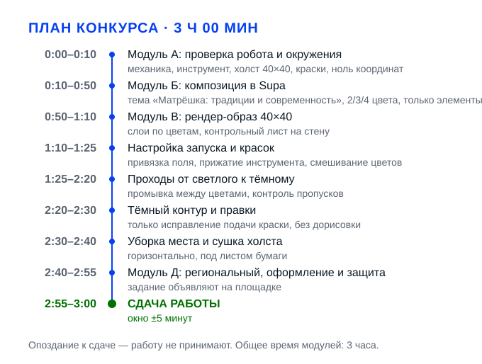
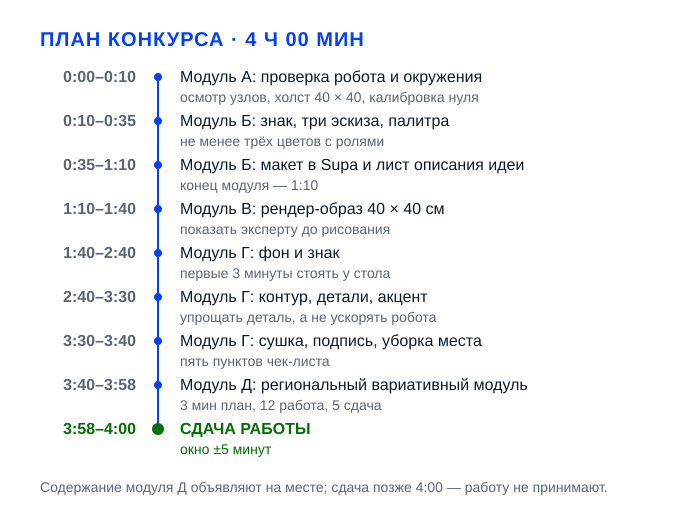
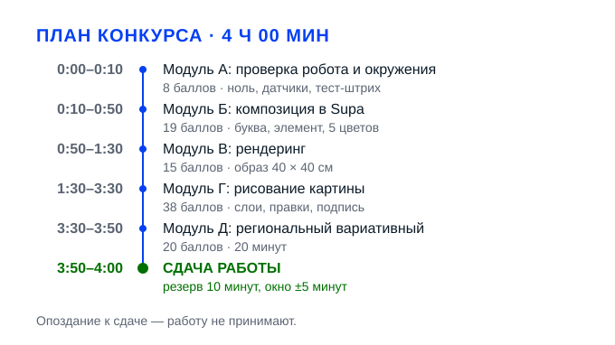

Робоарт (Роботизированное искусство) (Р)
Задания ниже — официальные файлы «Абилимпикс» (источник: abilympics-russia.ru), разложенные по категориям. Решения написаны по тексту задания, регламенту и критериям оценки; в них указано, что именно проверяет эксперт.
Школьник
14–16 лет, базовый уровень заданияВыдержка из официального конкурсного задания: страницы, относящиеся к категории «Школьник» (стр. 5–9 источника).
Пошаговое решение
Задание для школьников длится три часа и состоит из пяти модулей: проверка робота и окружения (10 минут, 8 баллов), композиция в онлайн-редакторе Supa (40 минут, 17 баллов), рендер 40 на 40 сантиметров (20 минут, 15 баллов), рисование картины роботом (1 час 30 минут, 40 баллов) и региональный вариативный модуль (20 минут, 20 баллов). Тема — «Матрёшка: традиции и современность»: символ культурного наследия через современную графику и робо-искусство. Композиция собирается только из элементов библиотеки редактора в два, три или четыре цвета, готовые изображения запрещены, а 30 процентов задания главный эксперт меняет перед стартом — чаще всего именно число цветов. Художник и исполнитель здесь разные: вы придумываете и настраиваете, краску наносит робот, и ошибка подготовки видна не сразу, а через час рисования. Поэтому главное в решении — проверки перед запуском и контроль по ходу.

Задача 1. Проверить робота и его окружениеМодуль А · 8 баллов · 10 минут
Десять минут модуля А — это не формальность перед стартом, а единственный отрезок конкурса, когда любую неисправность ещё можно устранить без потери времени на рисование. Робот, у которого на середине картины уводит ось или забивается кисть, отнимает не баллы за модуль, а всю работу целиком: перерисовать холст 40 на 40 сантиметров за оставшиеся минуты невозможно. Поэтому сначала проверяем механику и электронику, потом готовим плоскость и краски, и только после этого фиксируем исходное положение и докладываем о готовности. Восемь баллов здесь набираются последовательностью и точностью осмотра, а не скоростью.
Действие 1.1. Осмотреть механику, инструмент и электронику
Шаг 1.1.1
Обходим робота по кругу, начиная с основания, и проверяем каждую подвижную пару по очереди: каретку, направляющие, ремень или винтовую передачу, шарниры. Каждую ось покачиваем рукой на пару миллиметров — при выключенном приводе, если эксперт разрешил осмотр, — и смотрим, есть ли люфт, стук или заедание. Отдельно проверяем все винты крепления стоек и кронштейнов: они от вибрации ослабевают первыми, и протяжка занимает меньше минуты, чем поиск причины увода линии на середине картины. Пыль с направляющих снимаем сухой салфеткой: вода на ремне и в подшипниках даёт задиры.
Модуль А целиком про исправность компонентов и оценивается в 8 баллов, причём эксперт смотрит не на результат, а на сам факт осмотра: подошли ли вы к каждой оси, проверили ли крепёж. Люфт в каретке на глаз почти не виден, но за девяносто минут рисования он накапливается в смещение линии на три-пять миллиметров, и на картине это читается как разъехавшийся контур матрёшки. Люфт устраняется до старта за минуту, а его последствия на холсте — нет.
Признак исправности простой: ось двигается от руки плавно, без рывков и щелчков, а после отпускания не отыгрывает назад. Все винты затянуты одинаково, ни один не выступает над кронштейном. Направляющие чистые, без тёмных полос наката и без песка. Если какая-то ось идёт туже остальных, скажите об этом эксперту до старта.
Самая частая ошибка — обойти робота один раз «сверху» и не тронуть руками ни одной оси: внешне всё цело, а люфт в каретке остаётся. Вторая — протереть направляющие влажной салфеткой: ворс и вода попадают под ремень, и через час рисования появляется проскальзывание. Эксперт фиксирует формальный осмотр, и балл за модуль А теряется уже на этом шаге.
Эксперт стоит рядом в первые минуты модуля и смотрит, какие узлы участник трогает руками. Осмотр «глазами, не касаясь» он отмечает как неполный — это видно сразу по тому, что участник не наклоняется к каретке.
Шаг 1.1.2
Вынимаем рабочий инструмент из держателя и проверяем посадку: у кисти смотрим, прямая ли ручка, не размочален ли ворс, не расходится ли он веером; у маркера — не подсох ли кончик и совпадает ли цвет колпачка с фактическим цветом линии. Вставляем инструмент обратно до упора, зажимаем винт держателя и проверяем вылет: он должен быть таким, чтобы при опускании на холст работала только рабочая часть, а ручка не касалась плоскости. Вылет регулируем один раз и записываем его значение в черновик, чтобы после смены цвета вернуть ту же цифру.
Инструмент и материалы для рисования прямо названы в задании как объект проверки модуля А, и это самая уязвимая часть всей работы: робот может идеально вести траекторию, но испорченная кисть или подсохший маркер превратят линию в рваную полосу. Постоянный вылет инструмента важен ещё и потому, что от него зависит толщина линии, а значит — совпадение картины с рендером, за которое в модуле Г дают 40 баллов.
Проверьте тремя движениями: инструмент сидит в держателе без качания, при опускании на лист касается его рабочей частью, а при подъёме на пять миллиметров не оставляет следа. Ручка кисти не задевает соседние детали каретки при полном ходе. Если маркер оставляет бледную линию на пробном уголке — он почти сухой, меняем сразу.
Типичная ошибка — оставить инструмент с большим вылетом: кисть при опускании прогибается, линия выходит вдвое толще рендера, и вся графика «заплывает». Обратная ошибка — слишком малый вылет: инструмент касается холста только на пиках неровностей, и заливка получается полосатой. Оба случая стоят баллов и в модуле А, и в модуле Г.
Эксперт проверяет посадку инструмента и наличие запасного: участник, у которого нет второй кисти или маркера нужного цвета, в его глазах не готов к модулю Г.
Шаг 1.1.3
Проверяем электрику по цепочке: разъёмы двигателей и концевых датчиков вставлены до щелчка, кабели не натянуты и не лежат в зоне движения каретки, изоляция без потёртостей. Кабель-канал или стяжка должны держать жгут так, чтобы при полном вылете оси провод не натягивался в струну. Отдельно находим и проверяем аварийную кнопку: нажимаем её и убеждаемся, что приводы обесточиваются, затем возвращаем в рабочее положение. Питание включаем только после того, как убедились, что рабочая зона свободна.
Проверка компонентов и исправности — это буквально формулировка модуля А, и электрика входит в неё наравне с механикой. Натянутый кабель при движении по длинной оси выдёргивает разъём, робот теряет связь с программой и замирает с недорисованным слоем — а время модуля Г уже израсходовано. Аварийная кнопка, проверенная до старта, — это ещё и вопрос техники безопасности, который эксперт оценивает отдельно.
Все разъёмы сидят плотно, ни один не шатается. При ручном перемещении каретки по всей длине хода ни один кабель не натягивается и не цепляет раму. Нажатие аварийной кнопки останавливает приводы, а её возврат снова разрешает движение. Индикатор питания ровный, без мигания.
Классика — оставить жгут «как было» и не проверить его на полном ходе: провод натягивается только у дальнего края, где вы его не проверяли. Вторая ошибка — включать питание, пока руки в рабочей зоне: это нарушение безопасности, и замечание эксперта идёт в протокол независимо от качества картины.
Эксперт смотрит на порядок включения и на то, нажата ли аварийная кнопка до подачи питания. Проверка концевиков и разъёмов входит в его чек-лист по модулю А.
Действие 1.2. Подготовить плоскость, холст и краски
Шаг 1.2.1
Освобождаем рабочую поверхность полностью: убираем коробки, запасные холсты, инструменты и всё, что оказалось в зоне хода робота. Стол протираем сухой салфеткой, затем проверяем устойчивость — нажимаем ладонью на каждый угол: стол не должен качаться и скрипеть. Проверяем горизонтальность подручными средствами: кладём на стол шарик или ставим стакан с водой у дальнего края и смотрим, не уезжает ли. Если стол регулируемый, подкручиваем ножки до устойчивого положения и после этого больше их не трогаем.
В задании отдельным пунктом сказано: рабочая поверхность должна быть чистой и свободной от посторонних предметов, чтобы избежать помех в работе. Это не про аккуратность, а про механику: посторонний предмет под кабелем или задевающая за край стола тряпка останавливают каретку, и робот теряет шаг. Наклон в 2–3 градуса даёт разницу по высоте в несколько миллиметров между краями холста 40 на 40: на одном краю линия пропадёт, на другом расплывётся.
На столе нет ничего, кроме холста, инструмента и ёмкостей с краской. При нажатии на углы стол не двигается. Пузырёк уровня или вода в стакане показывают ровную плоскость. Вокруг робота остаётся свободная зона не меньше десяти сантиметров с каждой стороны — для рук и для провода.
Оставить на столе запасной холст или палитру «чтобы под рукой»: при движении по длинной оси каретка цепляет край, теряет позицию, и слой приходится перерисовывать. Вторая ошибка — выровнять стол, а потом опереться на него локтем во время работы: плоскость уходит, и линии плывут.
Эксперт осматривает рабочую зону до старта модуля Б и отмечает, свободна ли она. Захламлённый стол читается как неготовность окружения — это прямая потеря баллов модуля А.
Шаг 1.2.2
Берём холст 40 на 40 сантиметров и укладываем его на стол так, чтобы он оказался ровно в центре рабочего поля робота, а не у края. Крепим по периметру малярным скотчем шириной 25–30 миллиметров, приклеивая полосы сначала по двум противоположным сторонам, затем по двум другим, с натяжением от центра к краям. Углы проклеиваем внахлёст, чтобы холст не отходил. Карандашом с мягким грифелем или тонкой линией отмечаем углы рабочего квадрата и, если роботу это нужно, оси симметрии — но только на обороте или на клейкой ленте, чтобы метки не попали в картину.
Холст — это и есть поле 40 на 40, заданное в модуле В, и любое смещение на пять миллиметров съедает край композиции. Малярный скотч выбран не случайно: он снимается без разрыва бумаги, если картину придётся перевесить на сушку. Натянутый и проклеенный холст не «гуляет» под кистью, а значит, толщина линии остаётся одинаковой по всей площади — это то, что эксперт сравнивает с рендером.
Холст не сдвигается, если потянуть его за угол: скотч держит. По линейке проверьте расстояние от края стола до края холста со всех четырёх сторон — разница не больше трёх-пяти миллиметров. Поверхность холста ровная, без пузырей и волн, при проведении ладонью не шуршит.
Приклеить только два угла: середина холста приподнимается, инструмент «клюёт» в бумагу и рвёт её, а на картине появляются тёмные точки. Вторая ошибка — использовать канцелярский скотч: он оставляет клей и снимает верхний слой бумаги вместе с краской.
Эксперт проверяет крепление холста до запуска: незакреплённый холст — типовая причина брака в модуле Г, и её фиксируют как ошибку подготовки. Он смотрит и на запас инструмента того же цвета: второй кисти или маркера у участника обычно нет.
Шаг 1.2.3
Раскладываем краски и вспомогательное строго по зонам: слева — баночки с цветами, которые есть в задании, справа — пустые ёмкости для смешивания, палитра или одноразовые крышки, стакан с водой, безворсовые салфетки. Проверяем каждый цвет на густоту: палочкой или шпателем перемешиваем и смотрим, стекает ли краска ровной струёй. Засохшие и заветренные баночки отставляем и сразу говорим об этом эксперту. Салфетки режем на квадраты заранее, чтобы не искать их в момент смены цвета.
В модуле Г прямо требуется подготовить подходящие для работы краски и при необходимости смешать недостающие цвета, а подготовка начинается здесь — пока есть свободные минуты модуля А. Густая краска не проходит через инструмент, жидкая растекается и сливает два цвета в одно пятно. Готовая зона слева-справа экономит секунды при каждой смене цвета, а смен за полтора часа рисования будет не меньше числа слоёв.
Все цвета, указанные в задании, стоят на столе и открыты. Краска стекает с палочки ровно, без комков. Вода налита, салфетки нарезаны, ёмкости для смешивания пустые и чистые. Ни одна баночка не стоит в зоне хода каретки.
Начать рисование, не проверив густоту: первые два сантиметра линии идут нормально, потом инструмент забивается, и робот рисует пустотой. Вторая ошибка — поставить краски в рабочую зону робота: одно неосторожное движение оси опрокидывает баночку прямо на холст.
Эксперт смотрит на состав материалов на столе и на то, совпадает ли он с заданным числом цветов. Отсутствие нужного цвета он фиксирует как неготовность к модулю Г.
Действие 1.3. Выставить исходное положение и подтвердить готовность
Шаг 1.3.1
Включаем питание и переводим робота в исходное положение штатной командой парковки, а не перетаскиванием руки: привод должен сам встать в нулевые координаты. После парковки вручную, кнопками пульта или через программу, прогоняем инструмент в четыре угла рабочего поля и смотрим, остаётся ли он над холстом внутри его границ. Если инструмент выходит за край холста хотя бы на сантиметр — корректируем начало координат, а не размер картины. Полученные значения нуля записываем в черновик.
Результат модуля А сформулирован так: установлено корректное исходное положение робота, окружение готово к работе. Нуль координат — точка, от которой робот отсчитывает всё остальное, и ошибка в ней на десять миллиметров сдвигает всю композицию: матрёшка уезжает к краю, воздух справа исчезает, а композиционный баланс, за который в модуле Б дают баллы, оказывается нарушен уже на этапе рисования.
После парковки координаты на экране совпадают с нулевыми. Инструмент в каждом из четырёх углов остаётся над холстом, отступ от края не меньше десяти миллиметров. При возврате в ноль робот приходит в ту же точку с точностью до миллиметра — проверьте дважды.
Выставить ноль «на глаз», подтолкнув каретку рукой при включённом приводе: двигатель теряет шаги, и координаты, которые показывает программа, перестают соответствовать реальному положению. Вторая ошибка — не прогнать углы: смещение обнаруживается только тогда, когда первый слой уже начат.
Эксперт проверяет именно исходное положение и то, что участник знает координаты своего поля. Вопрос «какой у вас ноль?» задают почти всегда. Если участник называет ноль по памяти, а не по экрану, эксперт задаёт уточняющий вопрос.
Шаг 1.3.2
Делаем холостой прогон: поднимаем инструмент на десять-пятнадцать миллиметров над холстом и запускаем короткий тестовый контур — квадрат или отрезок длиной с диагональ. Смотрим, как робот проходит углы: не срезает ли, не замирает ли на повороте, не дёргается ли каретка. Проверяем работу аварийной остановки на ходу, если эксперт это разрешает: нажимаем кнопку и убеждаемся, что движение прекращается мгновенно, без рывка. После теста возвращаем инструмент в ноль.
Холостой прогон — единственный способ увидеть поведение робота до того, как на холсте появится краска. Скорость на поворотах, вибрация, потеря шага на длинном участке — всё это выявляется за две минуты без расхода материала. Модуль А оценивает готовность окружения к работе, и робот, проверенный в движении, — самое убедительное доказательство этой готовности.
Тестовый контур проходит без остановок и без срезанных углов. Робот не издаёт посторонних звуков, каретка идёт ровно. Аварийная остановка срабатывает мгновенно. После возврата в ноль координаты совпадают с исходными, инструмент не касается холста.
Пропустить холостой прогон, чтобы сэкономить минуту: рывок на повороте обнаружится на первом же слое, когда краска уже легла. Вторая ошибка — делать прогон с опущенным инструментом: на холсте остаётся пробная линия, и её приходится либо вписывать в композицию, либо смириться с браком.
Эксперт фиксирует, проверена ли аварийная остановка и был ли пробный прогон. Это измеримая часть модуля А на 8 баллов. Отдельно он отмечает, проверена ли аварийная кнопка до подачи питания, и заносит это в протокол модуля А.
Шаг 1.3.3
Подходим к эксперту и коротко докладываем готовность: робот проверен, исходное положение выставлено, холст закреплён, краски и число цветов соответствуют заданию, рабочая зона свободна. Одновременно уточняем два факта, которые могут отличаться от брифа: фактическое число цветов на площадке и любые ограничения по времени старта модуля Б. Фиксируем время доклада по часам на стене или по своему телефону и записываем его в черновик.
Задание перед соревнованием меняется главным экспертом на 30 процентов, и для школьников одно из типовых изменений — как раз количество цветов: два, три или четыре. Уточнение на старте стоит тридцать секунд и спасает 17 баллов модуля Б, потому что композиция в четыре цвета, собранная по брифу с тремя, оценивается как несоответствие заданию. Доклад о готовности ещё и запускает отсчёт времени модуля в протоколе.
Вы получили от эксперта подтверждение и назвали вслух число цветов, которое действует на площадке. Время старта записано. Все пункты чек-листа модуля А пройдены и мысленно отмечены: механика, инструмент, электрика, стол, холст, краски, ноль координат, пробный прогон.
Молча начать работу, не уточнив изменения: половина участников узнаёт о другом числе цветов уже на этапе оценки. Вторая ошибка — доложить готовность, не проверив краски: вопрос эксперта «а четвёртый цвет где?» застаёт врасплох и отнимает время модуля Б.
Именно в этот момент эксперт выставляет баллы модуля А: он видит, выполнены ли оба пункта задания — проверка компонентов и чистота рабочей поверхности.
Задача 2. Собрать композицию в графическом редактореМодуль Б · 17 баллов · 40 минут
Сорок минут модуля Б — это работа художника, а не оператора: из элементов библиотеки онлайн-редактора Supa нужно собрать образ матрёшки, который читается как символ культурного наследия, но выглядит современно и «роботизированно». Композиция должна быть собрана только из библиотечных элементов, в заданном числе цветов, с грамотным балансом и свободным пространством по краям. Всё, что вы нарисуете здесь, робот повторит краской, поэтому красота эскиза без учёта возможностей инструмента баллов не приносит: смотрим на будущую картину глазами робота.
Действие 2.1. Разобрать тему и рамки задания
Шаг 2.1.1
Открываем задание и выписываем на черновик три параметра: тему «Матрёшка: традиции и современность», допустимое число цветов и требование собрать композицию из элементов библиотеки редактора. Рядом записываем фактическое число цветов, названное экспертом на площадке, и обводим его — работаем только по этой цифре. Затем одной фразой формулируем идею: что именно в матрёшке останется традиционным, а что станет современным. Идея нужна до первого клика, иначе композиция собирается случайно.
Модуль Б оценивается в 17 баллов, и часть этих баллов даётся за соответствие теме и заданным ограничениям, а не за красоту как таковую. Условие «2/3/4 цвета» — жёсткое: лишний оттенок в заливке читается как нарушение, а недостающий — как неполное выполнение. Сформулированная идея экономит время: с ней вы выбираете элементы за секунды, без неё сорок минут уходят на перебор вариантов.
На черновике записаны тема, число цветов, источник элементов и одна фраза про идею. Вы можете вслух объяснить, что в композиции традиционного, а что современного, за две фразы. Число цветов совпадает с тем, что подтвердил эксперт.
Начать с открытия редактора и перебора элементов «что понравится»: через двадцать минут на холсте набор картинок без темы. Вторая ошибка — взять число цветов из печатного брифа, не уточнив изменение: 30 процентов изменений как раз и касаются цветов.
Эксперт смотрит на черновик и на первый вариант композиции, сверяя тему и число цветов. Несоответствие темы он отмечает сразу, до рендера. Он сверяет записанное число цветов с тем, что объявлено на площадке в день конкурса.
Шаг 2.1.2
Открываем Supa и находим панель библиотеки изображений: в ней собраны готовые векторные элементы — геометрические фигуры, орнаменты, силуэты, линии. Пробегаем категории и отмечаем те, из которых можно собрать матрёшку: круг и овал для корпуса и лица, трапеция или капля для платка, полосы и точки для узора, простые геометрические сетки для «робо»-стиля. Сразу отбрасываем фотографии и готовые иллюстрации: по заданию использование готовых изображений запрещено, разрешены именно элементы библиотеки.
Пункт задания звучит буквально: композиция составляется из элементов, предоставленных в библиотеке изображений графического редактора. Это отдельный критерий: работа, где матрёшка вставлена готовой картинкой, не соответствует заданию независимо от качества. Знание библиотеки заранее превращает сборку в сборку конструктора: вы не ищете «матрёшку», а знаете, что она складывается из пяти-шести типовых элементов.
Вы можете назвать не меньше пяти элементов библиотеки, из которых будет собрана композиция, и ни один из них не является готовым изображением матрёшки. В проекте нет вставленных фотографий и скачанных картинок. Все элементы добавлены из библиотеки редактора, а не загружены с диска.
Найти в библиотеке готовую иллюстрацию матрёшки и вставить её целиком: работа выглядит убедительно, но не соответствует заданию, и эксперт снимает баллы за нарушение условий. Вторая ошибка — загрузить картинку из интернета: это прямое нарушение запрета на готовые изображения.
Эксперт проверяет происхождение элементов: смотрит слои проекта и спрашивает, откуда взят каждый крупный объект. Ответ «из библиотеки» должен быть точным.
Действие 2.2. Построить композицию и силуэт
Шаг 2.2.1
Создаём новый документ квадратного формата: соотношение сторон строго один к одному, потому что картина будет 40 на 40 сантиметров. Включаем сетку и направляющие, отступаем от каждого края по десять процентов стороны — получается внутреннее поле, за которое не должны выходить главные элементы. Крупные объекты ставим по центральной вертикали, второстепенные — по диагонали или в нижней трети. Масштаб холста на экране увеличиваем до такого, при котором видно всю композицию целиком, и больше его не меняем, чтобы не потерять пропорции.
В задании отдельно сказано: расположить элементы композиционно грамотно, учесть баланс свободного пространства, избежать смещения к краям и чрезмерного уклона. Квадрат один к одному — не формальность: робот рисует на квадратном холсте 40 на 40, и вытянутая композиция при переносе либо обрежется, либо получит поля, которых вы не закладывали. Направляющие по десять процентов дают тот самый «воздух» вокруг изображения.
Формат документа квадратный. Направляющие стоят по всем четырём сторонам, и ни один значимый элемент за них не выходит. Композиция видна целиком без прокрутки. Визуально центр тяжести не съезжает ни влево, ни вниз.
Взять первый попавшийся формат A4 или экранный: при переносе в рендер композиция растянется или обрежется. Вторая ошибка — поставить матрёшку почти вплотную к краю: на картине край холста дополнительно «съедает» две-три миллиметра, и фигура упирается в границу.
Эксперт смотрит на пропорции и на поля: композиция, прижатая к краю, сразу читается как ошибка построения — это часть баллов модуля Б. Поля и пропорции он проверяет до того, как участник начнёт собирать фигуру: исправлять их позже дороже.
Шаг 2.2.2
Собираем силуэт матрёшки из библиотечных элементов: овал или скруглённый прямоугольник — корпус, круг — лицо, трапеция или «капля» — платок, несколько полос — фартук. Каждый элемент ставим на отдельный слой, чтобы его можно было двигать и масштабировать независимо. Масштабируем с зажатой клавишей сохранения пропорций: силуэт должен оставаться узнаваемым при уменьшении до десяти сантиметров на экране. Высоту фигуры делаем примерно 60–70 процентов высоты холста, чтобы сверху и снизу осталось пространство.
Узнаваемость образа — первое, что оценивают в композиции по теме: если матрёшка читается только по подписи, баллы за соответствие теме теряются. Сборка из отдельных элементов на разных слоях нужна ещё и технологически: при рендере каждый слой превращается в отдельный проход краски, и слой, в котором слиплись корпус и узор, придётся переделывать. Шестьдесят процентов высоты — пропорция, при которой фигура не выглядит ни крошечной, ни обрезанной.
Силуэт узнаётся с расстояния двух метров: видно голову, платок, корпус. Пропорции не искажены, овал не превратился в блин. Каждый элемент на своём слое, слои названы по смыслу: «корпус», «лицо», «платок», «узор».
Собирать матрёшку одним слитым объектом: при переносе в рендер невозможно разделить цвета, и вся фигура идёт одной краской. Вторая ошибка — растянуть овал по горизонтали «чтобы была шире»: образ теряет характерные пропорции и перестаёт читаться как матрёшка.
Эксперт оценивает узнаваемость образа и чистоту сборки. Слои он смотрит выборочно, но слипшиеся объекты видны и без этого — по несовпадению контуров. Узнаваемость он проверяет с двух метров, отходя от монитора вместе с участником.
Шаг 2.2.3
Добавляем то, что делает матрёшку современной: вместо цветочного узора — геометрический орнамент из библиотечных фигур, вместо мягких линий — жёсткие сегменты и концентрические окружности, имитирующие схемы и печатные платы. Лицо оставляем условным: два круга глаз и дуга, без прорисовки ресниц и румян — мелкие детали робот не воспроизведёт. Вокруг фигуры добавляем два-три поддерживающих элемента: окружность-ореол, ряд точек, вертикальные штрихи — они держат композицию и заполняют пустоту, не забивая центр.
Тема сформулирована как «традиции и современность», и оценка идёт именно за соединение двух слоёв: узнаваемый силуэт плюс современная графика, стилизация, цвета и робо-искусство. Геометрия здесь не украшение: прямые линии и окружности робот ведёт точнее всего, поэтому «роботизированный» орнамент и попадает в тему, и лучше выходит в материале. Условное лицо — та же логика: минимум мелких элементов, которые на холсте превратятся в грязные точки.
В композиции видны минимум три элемента, которые нельзя назвать традиционными: геометрия, сетка, схема. Лицо собрано не больше чем из трёх простых фигур. Поддерживающие элементы не спорят с фигурой по размеру и не перекрывают её контур.
Нарисовать мелкий растительный узор из десятка лепестков: на холсте 40 на 40 он превратится в цветное пятно, а на оценке будет читаться как «не выполнена стилизация». Вторая ошибка — перегрузить фон элементами: центр теряется, и композиция выглядит как каталог фигур.
Эксперт ищет в работе именно стилизацию: соединение традиционного образа с современной графикой. Просто аккуратная матрёшка без стилизации получает баллы ниже.
Шаг 2.2.4
Проверяем баланс: отходим от экрана на два-три шага или уменьшаем масштаб до двадцати процентов и смотрим на композицию как на пятно. Если один угол тяжелее остальных — сдвигаем поддерживающие элементы, а не главную фигуру. Проверяем «воздух»: расстояние от крайних точек композиции до края холста должно быть примерно одинаковым со всех сторон, допустим небольшой перевес снизу — он читается как устойчивость. Выравниваем фигуру по центральной вертикали с точностью до пары пикселей.
Баланс свободного пространства назван в задании отдельным требованием, и эксперт оценивает его формально: смотрит на поля и на распределение массы. Смещение к краю или заметный уклон в одну сторону снижают оценку даже при хорошем рисунке. Приём «отойти и посмотреть на пятно» работает потому, что на расстоянии мозг перестаёт читать детали и видит только распределение тёмного и светлого — то же, что увидит эксперт на стене.
Поля слева, справа и сверху отличаются не больше чем на пять процентов стороны. Композиция не завалена: вертикаль матрёшки совпадает с центральной осью. При взгляде издалека нет ощущения, что работа «падает» в один угол.
Увлечься деталями и не заметить, что вся композиция съехала влево: в масштабе ста процентов это не видно. Вторая ошибка — выровнять поля математически, но оставить тяжёлое тёмное пятно в верхнем углу: формально воздух есть, визуально баланса нет.
Эксперт отходит от монитора и смотрит на работу целиком — это стандартный приём оценки композиции, и он же прописан в критериях модуля Б. Если работа «падает» в угол, он просит участника объяснить, что держит композицию.
Действие 2.3. Решить цвет и художественно обработать
Шаг 2.3.1
Собираем палитру ровно из того числа цветов, которое действует на площадке: два, три или четыре. Выбираем не «красивые» оттенки по отдельности, а систему: один тёмный — для контура и платка, один насыщенный — для корпуса, один светлый — для фона и лица, четвёртый, если он есть, — акцент для орнамента. Записываем значения цветов в черновик в виде кодов, а не названий: «красный» у всех разный, а код один. Проверяем, что ни один элемент не залит оттенком вне этого списка, включая обводки и тени.
Число цветов — самый формальный и самый безжалостный критерий модуля Б: он проверяется простым подсчётом, и лишний полутон в тени стоит баллов не меньше, чем грубая ошибка композиции. Палитра, записанная кодами, нужна ещё и для смешивания красок в модуле Г: по коду вы подберёте ближайший пигмент и получите тот же оттенок на холсте, а не «похожий».
В проекте использовано ровно столько цветов, сколько задано — проверьте списком заливок и обводок. Ни в одном объекте нет градиента и прозрачности, которые дают дополнительные оттенки. Коды цветов выписаны на черновик и совпадают с тем, что видно на экране.
Добавить пятый оттенок «только для тени»: тень считается цветом, и композиция выходит за рамки задания. Вторая ошибка — использовать полупрозрачность: два слоя по пятьдесят процентов дают третий цвет, которого в палитре нет.
Эксперт считает цвета по факту, а не по вашему объяснению. Спор о том, считать ли оттенок отдельным цветом, всегда решается не в пользу участника. Полупрозрачность он считает отдельным оттенком, а не художественным приёмом.
Шаг 2.3.2
Приводим графику к виду, удобному для робота: убираем обводки тоньше двух-трёх миллиметров в масштабе холста, увеличиваем мелкие элементы до минимального размера, при котором инструмент оставит сплошное пятно, а не пунктир. Заливки делаем плотными и замкнутыми: у каждой области должен быть чёткий контур, чтобы краска не «убегала». Слои выстраиваем в порядке рисования — от светлого к тёмному, чтобы тёмный перекрывал края светлого, а не наоборот.
Модуль В и модуль Г переносят эту графику в краску, и всё, что на экране выглядит изящно за счёт тонкой линии в один пиксель, на холсте превращается в грязь. Порядок слоёв от светлого к тёмному — правило печати и живописи одновременно: тёмный пигмент перекрывает светлый без просвета, а светлый поверх тёмного всегда даёт серый. Соблюдение порядка экономит целый проход и снижает риск смазывания.
Ни одна линия не тоньше ширины следа инструмента, умноженной на два. Все заливки замкнуты, без «дырок» и разрывов контура. Порядок слоёв в панели совпадает с порядком рисования: светлые ниже, тёмные выше. Мелкие элементы не меньше пяти миллиметров на холсте.
Оставить тонкую изящную обводку: робот проведёт её с пропусками, и контур распадётся на штрихи. Вторая ошибка — поставить тёмный слой ниже светлого: при наложении светлая краска ляжет на тёмную и получится мутное пятно вместо чистого цвета.
Эксперт смотрит на эскиз именно как на технологическую карту: слишком мелкая детализация читается как непонимание материала. Он спрашивает, какой след оставляет инструмент на площадке, и сверяет с ним толщину линий в файле.
Шаг 2.3.3
Проверяем контраст и читаемость: переводим изображение в оттенки серого или просто прищуриваемся — силуэт должен оставаться различимым. Если корпус и фон сливаются по яркости, меняем один из них на более тёмный или более светлый в рамках выбранной палитры. Отдельно проверяем, что лицо не теряется на платке, а орнамент не исчезает на корпусе. Финальный контроль — с расстояния трёх метров: именно с такого расстояния картину будут смотреть на выставке.
Эксперт оценивает картину стоя, а не разглядывая пиксели, и контраст решает, прочитается ли образ. Две близкие по тону краски на холсте дополнительно сливаются из-за впитывания бумаги, поэтому запас контраста нужно закладывать на экране. Читаемость с трёх метров — тот же критерий, по которому оценивают плакат, и он напрямую связан с баллами за композицию и за соответствие теме.
В оттенках серого силуэт матрёшки различим полностью. Ни одна пара соседних областей не имеет одинаковой яркости. С трёх метров видно, что это матрёшка, без пояснений. Контур не «звенит» и не рябит. Проверьте контраст и на распечатке: на бумаге он обычно ниже, чем на экране.
Сделать всю композицию в одной тональности «чтобы было стильно»: на холсте получится одноцветное пятно. Вторая ошибка — наоборот, переконтрастить, поставив рядом чистый тёмный и чистый светлый: на границе краски поплывут, и контур станет грязным.
Эксперт оценивает работу с дистанции и при дневном свете. Именно на этом шаге чаще всего выясняется, что «красиво на мониторе» не читается на холсте. Он смотрит работу и в оттенках серого — на копии или прищурившись.
Действие 2.4. Проверить по чек-листу и сохранить файл
Шаг 2.4.1
Проходим по чек-листу задания сверху вниз, вслух называя каждый пункт: тема отражена, композиция собрана из элементов библиотеки, число цветов соответствует заданному, готовых изображений нет, элементы расположены с балансом и воздухом, смещения к краям нет. Каждый пункт отмечаем галочкой на черновике. Если пункт не выполняется — исправляем сразу, пока есть время, а не надеемся, что эксперт не заметит.
17 баллов модуля Б складываются из нескольких независимых критериев, и потеря по одному не компенсируется удачей по другому. Чек-лист, пройденный вслух, ловит именно те ошибки, которые не видны автору: он смотрит на картинку, а эксперт — на соответствие условиям. Пять минут на проверку здесь дешевле, чем переделка композиции после рендера.
Все пункты отмечены. Вы можете показать в проекте, из какого элемента библиотеки собрана каждая часть фигуры. Число цветов подтверждено подсчётом. Готовых изображений в проекте нет. Список пунктов записан на черновике, и напротив каждого стоит отметка.
Пропустить проверку и обнаружить нарушение на этапе рендера: тогда переделывать нужно и эскиз, и рендер, а времени на это уже нет. Вторая ошибка — проверять «на глаз», не считая цвета. Третья, самая частая — считать, что «и так видно», и не проверять число цветов вовсе.
Эксперт проходит по тем же пунктам, что и чек-лист. Совпадение с критериями — единственная гарантия баллов. Он проходит те же пункты и не спрашивает, что участник имел в виду: оценка идёт по факту на экране.
Шаг 2.4.2
Оцениваем композицию по времени рисования: прикидываем, сколько отдельных областей каждого цвета придётся закрашивать, и сколько проходов это займёт. Если областей больше двадцати или площадь заливки одного цвета превышает треть холста, упрощаем: укрупняем элементы, убираем дублирующие детали, объединяем соседние пятна одного цвета. Оставляем три-четыре крупных цветовых поля — так робот успевает пройти всё за девяносто минут модуля Г.
Модуль Г длится полтора часа и оценивается в 40 баллов — это самая дорогая часть конкурса, и провал по времени здесь обнуляет работу. Каждый лишний мелкий элемент добавляет проход, а проход — это подъём, смена цвета, промывка и повторное выставление инструмента. Крупные цветовые поля рисуются быстрее и выглядят на холсте чище, чем мозаика из мелких пятен.
Количество цветовых полей не больше пятнадцати. Самый мелкий элемент не меньше пяти миллиметров на холсте 40 на 40. Вы можете назвать примерное число проходов и понимаете, что оно укладывается в девяносто минут.
Оставить дробную мозаику из тридцати мелких пятен: робот не успевает, и картина остаётся недорисованной — это минус большая часть 40 баллов. Вторая ошибка — заложить заливку всего фона одним цветом: она съедает половину времени модуля.
Эксперт по ходу модуля Г видит, насколько эскиз технологичен. Перегруженный эскиз он отмечает как ошибку планирования. Перегруженный эскиз он отмечает до старта рисования: переделывать после запуска поздно.
Шаг 2.4.3
Сохраняем проект в редакторе под именем, где есть фамилия и слово «композиция», и отдельно выгружаем копию в формате с прозрачным фоном и в формате, который принимает программа робота. Кладите файлы в папку участника, а не в «Загрузки». Сразу делайте вторую копию на флешку или в облако площадки: одна копия — это ноль копий. Записывайте на черновик имя файла, чтобы не искать его в спешке перед рендером.
Модуль В начинается с готового изображения, и потерянный файл означает потерю сорока минут работы. Экспорт в двух форматах страхует от несовместимости: один формат нужен для просмотра и печати контрольного листа, второй — для импорта в программу робота. Прозрачный фон важен потому, что белая подложка при рендере превращается в отдельный цвет, и число цветов выходит за рамки задания.
Файл сохранён в проекте редактора и выгружен в двух форматах. Оба файла открываются и содержат актуальную версию композиции. Имя файла записано на черновике. Копия есть на втором носителе. Копия проверена повторным открытием, а не только фактом сохранения.
Сохранить только проект в редакторе: при сбое связи или закрытии вкладки работа теряется. Вторая ошибка — выгрузить с белым фоном: белый становится четвёртым цветом, и композиция выходит за ограничение.
Эксперт может попросить открыть файл в любой момент. Участник, который не может найти свою работу, теряет время и баллы за организацию. Он может попросить показать файл в исходном виде, а не только на экране редактора.
Задача 3. Сделать рендер-образ будущей картиныМодуль В · 15 баллов · 20 минут
Рендер — это техническое задание для робота, а не картинка для показа. Двадцать минут модуля В уходят на то, чтобы перевести художественную композицию в файл, где каждая область цвета однозначно определена, размер строго 40 на 40 сантиметров, а все линии толще, чем способен провести инструмент. Ошибка здесь стоит дороже, чем в эскизе: робот рисует ровно то, что получил, и любая тонкая линия или лишний оттенок проявятся на холсте через полтора часа, когда исправлять уже нечего.
Действие 3.1. Перевести композицию в файл 40 на 40
Шаг 3.1.1
Создаём новый документ с физическим размером ровно 40 на 40 сантиметров и разрешением 300 точек на дюйм — это примерно 4724 пикселя по стороне. Вставляем сохранённую композицию как отдельный слой и масштабируем её с сохранением пропорций, пока она не займёт холст с теми же полями, что были в эскизе. Не растягиваем по одной оси: квадрат в квадрате масштабируется целиком. Если в эскизе фон был прозрачным, оставляем его прозрачным и здесь — белая подложка станет отдельным цветом.
Размер 40 на 40 сантиметров прямо задан в модуле В, и это единственная цифра, которую робот не сможет исправить: он рисует в своём поле, и файл другого размера либо обрежется, либо получит поля. Разрешение 300 точек на дюйм нужно для резких границ при переводе в контуры — на низком разрешении края заливок размываются, и робот получает рваный контур. Сохранение пропорций защищает от того, что матрёшка на холсте окажется приплюснутой.
В свойствах документа стоит 40 на 40 сантиметров и 300 dpi. Композиция занимает холст целиком, поля соответствуют эскизу. Круг на эскизе остался кругом, а не овалом. Фон прозрачный, без белой заливки.
Вставить картинку и растянуть её мышью за угол: пропорции ломаются, и на картине фигура искажена. Вторая ошибка — оставить разрешение по умолчанию 72 dpi: контуры получаются ступенчатыми, и робот воспроизводит ступеньки как отдельные штрихи.
Эксперт проверяет размер рендера рулеткой по распечатке или по свойствам файла. Несоответствие 40 на 40 — потеря части 15 баллов модуля В. Если размер не совпадает, он просит пересоздать файл при нём, и время модуля В на это и уходит.
Шаг 3.1.2
Разделяем изображение на цветовые слои: выделяем все области одного цвета и переносим каждую на отдельный слой, называя его кодом цвета. Проще всего сделать это через выделение по цвету с нулевым допуском, затем «вырезать» и «вставить на новый слой» — так каждый цвет становится самостоятельной картой. Проверяем, что ни в одном слое не осталось пикселей другого цвета, и что сумма слоёв полностью восстанавливает исходную картинку.
Робот рисует не картинку, а последовательность проходов по цветам: один цвет — один проход с одной заправкой инструмента. Слой, в котором перемешаны два цвета, программа воспримет как один объект и зальёт первым попавшимся цветом — на холсте получится плоское пятно вместо орнамента. Разделение по цветам ещё и показывает фактическое число цветов, то есть служит проверкой ограничения из модуля Б.
Число слоёв равно числу цветов в задании. При отключении всех слоёв, кроме одного, на экране остаётся только этот цвет. Сумма включённых слоёв визуально совпадает с исходной композицией. В названиях слоёв стоят коды цветов.
Выделять области вручную «на глаз»: на границах остаются пиксели чужого цвета, и робот проводит по контуру грязную кайму. Вторая ошибка — оставить слой с белым фоном: он добавит лишний проход и лишний цвет.
Эксперт может открыть файл и посмотреть слои. Аккуратная сепарация по цветам читается как понимание технологии, а не как случайный результат. Если слои названы кодами, ему сразу видно, что работа велась осознанно.
Шаг 3.1.3
Чистим артефакты: убираем полупрозрачные пиксели на границах, включаем для каждого слоя жёсткий край без сглаживания, удаляем одиночные пиксели и «мусор» вокруг контуров, укрупняем случайно возникшие дырки внутри заливок. Убираем тени и градиенты, если они остались: тень — это отдельный оттенок, которого нет в палитре. После чистки сохраняем копию под именем с пометкой «рендер», не перезаписывая художественный эскиз.
Сглаживание, незаметное на экране, превращается в десятки пикселей промежуточного оттенка по всему периметру фигуры, и программа робота либо добавит их как новый цвет, либо нарисует грязную кайму. Жёсткий край даёт чистую границу между двумя красками — именно так выглядит качественная печать и именно это оценивают в модуле Г, где на рисование отведено 40 баллов. Копия нужна, чтобы вернуться к эскизу, не собирая композицию заново.
При увеличении до 400 процентов границы заливок резкие, без серых переходных полос. В слоях нет одиночных пикселей. Число цветов не изменилось после чистки. Эскиз сохранён отдельным файлом. Проверяйте границы при увеличении в двух-трёх местах, а не в одном.
Оставить сглаживание включённым: на холсте контур получится с рваной кромкой, а часть краски уйдёт в лишние проходы. Вторая ошибка — чистить файл поверх эскиза и потерять исходную композицию. Третья — чистить файл с включённой привязкой к сетке: она сдвигает края на пиксель.
Эксперт смотрит на рендер при увеличении: резкость границ — прямой признак того, что участник понимает разницу между картинкой и файлом для робота. Он открывает файл у себя и смотрит границы на своём экране.
Действие 3.2. Согласовать рендер с возможностями робота
Шаг 3.2.1
Накладываем на рендер шаблон-окружность диаметром, равным ширине следа инструмента, и проходим по всем линиям и мелким элементам: всё, что уже шаблона, либо утолщаем, либо убираем. Для заливок проверяем минимальный размер области — пятно меньше двух ширин следа робот закрасит с выходом за контур. Округляем координаты крупных элементов до целых миллиметров, чтобы программа не дробила движение на микроперемещения и не тратила на них время.
Инструмент оставляет след конечной ширины, и физика важнее эстетики: линия тоньше следа всё равно выйдет шириной в след, только с пропусками. Мелкие области при заливке захватывают соседний цвет, и граница размывается. Всё это прямо влияет на оценку модуля Г, где сравнивают картину с рендером и смотрят на чистоту цветовых границ.
Ни одна линия в файле не тоньше двух ширин следа. Самая мелкая заливка не меньше пяти миллиметров в диаметре. Крупные элементы выровнены по сетке, число узлов траектории не зашкаливает. Ширину следа уточните по тестовому листу, а не по паспорту инструмента.
Оставить на рендере волосяные штрихи «для изящества»: робот проведёт их пунктиром, и картина будет выглядеть недорисованной. Вторая ошибка — не укрупнить мелкий орнамент: он сольётся в цветное пятно. Третья — выравнивать всё по сетке в один пиксель: мелкие элементы слипаются.
Эксперт оценивает, насколько рендер реалистичен для конкретного робота на площадке. Нереалистичный рендер он считает ошибкой подготовки, даже если сама картинка красивая.
Шаг 3.2.2
Определяем порядок проходов и оцениваем время: считаем суммарную длину траектории по каждому цвету, делим на скорость рисования из настроек робота и прибавляем по минуте на смену цвета и промывку. Если суммарно выходит больше восьмидесяти минут, сокращаем число проходов: убираем самый малый по площади цвет или объединяем соседние области. Записываем порядок цветов на черновик: от самого светлого к самому тёмному, с пометкой, какой цвет перекрывает какой.
На рисование в модуле Г отведено полтора часа, и это жёсткая рамка: недорисованная картина теряет значительную часть 40 баллов независимо от замысла. Расчёт по длине траектории занимает три минуты и заменяет собой надежду на «как-нибудь успею». Порядок от светлого к тёмному нужен для чистоты цвета: светлая краска поверх тёмной всегда мутнеет.
Расчётное время с запасом десять минут укладывается в девяносто. Порядок цветов записан. Самый тёмный цвет идёт последним и перекрывает границы предыдущих. Вы можете назвать число проходов. Запас в десять минут — минимум, меньше закладывать нельзя.
Не считать время и начать рисовать: на середине становится ясно, что два цвета лишние, но переделывать поздно. Вторая ошибка — поставить тёмный цвет первым: он будет просвечивать через светлый, и вся работа выглядит грязной.
Эксперт по ходу модуля Г видит, насколько участник владеет планом проходов. Отсутствие плана проявляется как метания и недорисованные зоны. Он спрашивает расчётное время и сравнивает его с фактическим ходом работы.
Действие 3.3. Утвердить рендер и передать его в работу
Шаг 3.3.1
Смотрим рендер в масштабе, соответствующем реальному холсту: уменьшаем изображение до размера экрана так, чтобы сторона квадрата была сопоставима с листом 40 на 40. Сверяем с эскизом по трём признакам — расположение фигуры, число цветов, наличие свободных полей. Печатаем контрольный лист на обычной бумаге, если принтер доступен, и вешаем рядом с рабочим местом: по нему удобно сверять слои во время рисования, не отвлекаясь на экран.
Печать или просмотр в натуральную величину выявляет ошибки, невидимые на экране: слишком крупный орнамент, слипшиеся цвета, отсутствие воздуха по краям. В модуле В оценивают именно подготовленный рендер-образ, то есть совпадение с эскизом и пригодность к рисованию, а не красоту файла. Контрольный лист на стене экономит время в модуле Г: сверять проход с бумагой быстрее, чем разворачивать окно программы.
В натуральном масштабе композиция читается и не выглядит перегруженной. Расположение фигуры совпадает с эскизом. Число цветов то же. Контрольный лист напечатан и закреплён рядом с рабочим местом. Если принтер недоступен, сверяйте по экрану, уменьшенному до размера листа.
Утвердить рендер по картинке на мониторе: на холсте 40 на 40 вся графика выглядит крупнее и грубее, чем казалось. Вторая ошибка — не напечатать контрольный лист и потом сверять слои по памяти. Третья — утверждать рендер по фрагменту, не увидев композицию целиком.
Эксперт подходит в конце модуля В и смотрит рендер вместе с эскизом. Совпадение по трём признакам — это и есть оценка за подготовленный образ. Он сравнивает рендер с эскизом по трём признакам и фиксирует расхождения.
Шаг 3.3.2
Передаём файл в программу робота: импортируем, проверяем, что карта цветов распозналась полностью и ни один слой не потерялся при конвертации. Убеждаемся, что программа показывает то же число проходов, которое вы посчитали. Сохраняем задание под именем с фамилией и делаем копию на второй носитель. Если конвертация исказила цвета — возвращаемся к файлу и сохраняем в другом формате, а не правим карту вручную.
Момент импорта — последняя точка, где ошибку видно до расхода краски. Потерянный при конвертации слой обнаруживается на холсте как пустая область, и восстановить её можно только повторным проходом, которого нет в плане времени. Сохранённое задание с понятным именем нужно и вам, и эксперту: он может проверить, соответствует ли рендер требованиям модуля В.
Программа показывает то же число цветов и проходов, что в файле. Предпросмотр в программе совпадает с рендером по расположению и цветам. Файл задания сохранён, копия есть. Эксперт видел рендер до старта рисования.
Импортировать и сразу запустить: несовпадение цветов выясняется на третьем проходе. Вторая ошибка — конвертировать в формат, который программа читает частично: часть заливок теряется без предупреждения.
Эксперт сверяет рендер в программе с утверждённым файлом. Расхождение он трактует как неподготовленность к модулю Г. Потерянный слой он видит сразу и просит импортировать заново, пока не начат первый проход.
Задача 4. Настроить робота и нарисовать картинуМодуль Г · 40 баллов · 1 час 30 минут
Полтора часа модуля Г — самая дорогая часть конкурса: сорок баллов из ста, то есть почти половина результата. Здесь всё, что было задумано и подготовлено, превращается в краску на холсте. Работа делится на настройку параметров запуска, подготовку красок, само рисование с постоянным контролем и уборку. Главный навык этого модуля — не вмешиваться слишком часто и не пропускать момент, когда вмешаться необходимо.
Действие 4.1. Настроить параметры запуска и рисования
Шаг 4.1.1
Привязываем рендер к физическому полю: в программе указываем координаты углов холста, которые вы отметили в модуле А, и проверяем масштаб — расстояние между углами должно дать ровно 400 миллиметров по каждой стороне. Проверяем ориентацию: композиция не должна быть отзеркалена. Если программа строит картинку от левого верхнего угла, а робот отсчитывает от левого нижнего, включаем соответствующее отражение по оси и убеждаемся, что текст и асимметричные элементы не перевернулись.
Привязка к полю — это то, что делает рендер картиной: ошибка масштаба в десять процентов даёт смещение в четыре сантиметра на краю, и композиция вылезает за холст. Зеркалирование — самая обидная ошибка модуля Г: работа технически безупречна, но повторяет эскиз наоборот, и асимметричный орнамент читается как брак. Проверка ориентации занимает полминуты до старта и спасает все сорок баллов.
Программа показывает поле 400 на 400 миллиметров. Инструмент при перемещении в углы остаётся над холстом с одинаковым отступом. Пробный контурный проход без краски ложится в те же места, что на контрольном листе, и не зеркален ему.
Задать поле «примерно» по памяти: на дальнем краю накопленная ошибка сдвигает фигуру. Вторая ошибка — не проверить отражение: половина участников узнаёт об этом, только когда первый слой уже лёг. Третья — привязать поле к краю стола вместо края холста: отступы уходят на сантиметр.
Эксперт смотрит настройку поля до запуска и часто спрашивает, как участник проверял ориентацию. Ответ по делу ценится выше, чем скорость. Он смотрит, как участник проверяет углы, и просит назвать расстояние между ними.
Шаг 4.1.2
Выставляем высоту опускания инструмента: подводим его к холсту вручную до касания, запоминаем координату и добавляем к ней половину желаемого прижатия — обычно это от половины до одного миллиметра, в зависимости от упругости холста. Проверяем на тестовом листе той же бумаги: инструмент должен оставлять ровный след без продавливания. Если инструмент «прыгает» на неровностях, увеличиваем прижатие на 0,2 миллиметра и повторяем тест.
Высота опускания определяет всё: слишком высоко — линия рвётся, слишком низко — бумага продавливается, ворс загибается, и след становится шире расчётного. Именно этот параметр в первую очередь влияет на совпадение картины с рендером, за которое в модуле Г дают основную часть баллов. Тест на отдельном листе той же бумаги нужен потому, что толщина и впитываемость у разных холстов отличаются.
На тестовом листе след ровный, одинаковой ширины по всей длине, без пропусков и без волнистого края. Бумага не продавлена насквозь. Ширина следа совпадает с той, по которой вы считали минимальные размеры элементов в рендере.
Выставить прижатие «на глаз» по звуку: разница в полмиллиметра превращает ровную линию в полосатую. Вторая ошибка — тестировать на другом листе, например на офисной бумаге: она тоньше, и результат непереносим на холст.
Эксперт смотрит тестовый лист: на нём видно, откалиброван ли инструмент. Это измеримая часть настройки модуля Г. Если тестового листа нет, он делает вывод, что калибровка не проводилась, и снижает балл за настройку.
Шаг 4.1.3
Задаём скорость подачи и ускорения: начинаем со средней скорости из диапазона, который держит ваш робот, и снижаем её на участках с частыми поворотами, если программа позволяет задавать профиль по слою. Проверяем расчётное время по каждому проходу и сравниваем с планом: если программа обещает больше восьмидесяти минут, снижаем число проходов, а не скорость — спешка даёт смазанные углы. Включаем плавный разгон и торможение, чтобы инструмент не дёргался в начале и конце линии.
Скорость — компромисс между временем и качеством: на высокой скорости каретка не успевает отработать поворот, и углы срезаются, а краска разбрызгивается на резких изменениях направления. Плавный разгон убирает капли в начале каждого штриха, которые на холсте выглядят как случайные точки. Расчётное время — единственный инструмент управления модулем на полтора часа.
Программа показывает время по каждому проходу, и сумма с запасом укладывается в девяносто минут. На пробном проходе углы не срезаны, в начале и конце линии нет капель. Скорость одинаковая для всех слоёв, кроме мелких деталей.
Выставить максимальную скорость, чтобы успеть всё: углы плывут, краска летит мимо линии. Вторая ошибка — менять скорость между слоями: ширина следа на глаз остаётся той же, но плотность краски отличается, и слои выглядят как разные цвета.
Эксперт фиксирует, уложился ли участник в регламент времени и не было ли признаков спешки — смазанных углов и капель. Он отмечает и число срабатываний паузы: слишком частые остановки говорят о неверных настройках.
Действие 4.2. Подготовить и проверить краски
Шаг 4.2.1
Готовим каждый цвет по коду из рендера: наливаем в отдельную ёмкость и доводим до консистенции жидкой сметаны — краска должна стекать с палочки ровной струёй и оставлять на стенке след, который медленно выравнивается. Если нужного оттенка нет, смешиваем из имеющихся: сначала основной тон, затем по капле добавляем затемняющий или осветляющий, каждый раз перемешивая и нанося мазок на пробник. Объём считаем по площади: на заливку в четверть холста уходит примерно вдвое больше, чем кажется.
В задании прямо сказано: подготовить подходящие для работы краски и при необходимости смешать недостающие цвета. Консистенция решает, пройдёт ли краска через инструмент: густая забивает ворс и даёт пропуски, жидкая растекается за контур и сливает два цвета в один. Смешивание по капле — единственный способ попасть в оттенок предсказуемо: добавить каплю тёмного в светлое легко, вернуть обратно невозможно.
Каждый цвет есть в отдельной подписанной ёмкости. Краска стекает ровной струёй, без комков и без водянистых разводов. Мазок на пробнике совпадает по тону с цветом на рендере. Объёма хватает на самую большую область каждого цвета с запасом.
Развести краску «до состояния воды» для удобства: она течёт по холсту и выходит за границы, а на горизонтальных участках собирается в лужицы. Вторая ошибка — смешать весь тёмный в светлый сразу: оттенок уходит в серый, и вернуть чистоту цвета нечем.
Эксперт смотрит на ёмкости и на пробники: подписанные цвета и аккуратные пробы читаются как профессиональная подготовка — это часть оценки модуля Г. Он проверяет, совпадает ли число ёмкостей с числом цветов в задании.
Шаг 4.2.2
Проверяем каждый цвет на обрезке того же холста: наносим мазок длиной пять-семь сантиметров тем же инструментом, которым будет рисовать робот, и ждём полного высыхания — обычно три-пять минут при комнатной температуре. Смотрим укрывистость: виден ли край мазка на просвет, не проступает ли фактура бумаги. Второй мазок кладём поверх первого после высыхания, чтобы понять, как цвет перекрывает сам себя.
Цвет на палитре и цвет на холсте — разные вещи: бумага впитывает часть пигмента, и после высыхания тон уходит на полшага. Пробник показывает, не нужно ли добавить пигмента для плотности. Проверка перекрытия нужна, потому что тёмный контур кладётся поверх заливки: если краска полупрозрачная, контур получится грязным, и это сразу видно на сравнении с рендером.
После высыхания мазок того же тона, что на рендере, без серого налёта и без светлых крапин. Бумага не просвечивает через краску. Второй слой полностью перекрывает первый. Пробники подписаны и лежат рядом с рабочей зоной.
Проверять цвет мокрым: свежая краска всегда выглядит темнее и насыщеннее, после высыхания разница заметна. Вторая ошибка — тестировать на белой офисной бумаге: она не впитывает так, как холст. Третья — не дождаться высыхания и положить второй слой на мокрый: цвета смешиваются.
Эксперт обращает внимание на наличие пробников: участник, который проверил цвет на материале, реже переделывает работу. Пробники он считает частью подготовки, а не лишней тратой времени.
Шаг 4.2.3
Заправляем инструмент первым цветом — самым светлым по вашему плану проходов. Окунаем до половины рабочей части, лишнее снимаем о край ёмкости, а не о холст. Рядом ставим стакан с водой для промывки и салфетку для промакивания: между цветами инструмент промывается до чистой воды и просушивается, иначе тёмный пигмент останется в ворсе и испортит следующий светлый слой. Ёмкости расставляем в порядке проходов, чтобы не искать нужную банку в середине работы.
Порядок заправки и промывки — главный источник случайных загрязнений цвета. Плохо промытая кисть даёт грязный оттенок на всей первой линии следующего слоя, и этот участок придётся перекрывать, теряя время модуля. Расстановка ёмкостей по порядку экономит по десять-пятнадцать секунд на каждой смене, а смен за полтора часа бывает до десяти.
Инструмент заправлен равномерно, без капель на держателе. Вода для промывки чистая. Ёмкости стоят в порядке проходов, каждая подписана. Салфетка под рукой, а не в другом конце стола. Порядок банок совпадает с записанным планом проходов, и это видно без объяснений.
Окунуть инструмент целиком: краска затекает в держатель и потом капает на холст в случайных местах. Вторая ошибка — промывать в той же воде весь конкурс: через два слоя вода превращается в грязевую взвесь и сама пачкает ворс.
Эксперт смотрит, как участник меняет цвет: чистая вода и промакивание видны сразу и оцениваются как аккуратность работы с материалом. Он смотрит и на то, не окунает ли участник инструмент выше рабочей части.
Действие 4.3. Вести рисование и корректировать работу робота
Шаг 4.3.1
Запускаем первый проход и первые две-три минуты стоим рядом, не отходя: смотрим на начало линии, на её ширину, на то, не смазывается ли краска при подъёме инструмента. Проверяем, что робот идёт по границам областей, а не по центру, и что направление обхода совпадает с заливкой. Если первые сантиметры легли правильно, дальше можно контролировать процесс по звуку и периодически подходя к холсту.
Первые две минуты дают всю информацию о настройке: если ширина следа или прижатие выставлены неверно, это видно на первом десятке сантиметров, и остановка стоит секунд. После того как лёг весь первый слой, исправлять параметры бессмысленно — придётся перерисовывать слой целиком, а времени на это в модуле Г нет.
Ширина линии соответствует расчётной. Края ровные, без волны и без капель. Робот не задевает соседние области. Начало линии не смазано. Дальше можно отходить от холста на шаг, но не из зоны видимости.
Запустить и уйти к столу с красками: обнаруживается, что первые два сантиметра прошли «всухую», когда уже нарисована четверть слоя. Вторая ошибка — менять настройки на ходу, не останавливая задание: программа применяет их в случайной точке, и слой получается разнородным.
Эксперт отмечает, находится ли участник у робота в момент старта. Отсутствие контроля на первых минутах он считает нарушением технологии. Он также смотрит, держит ли участник руку на кнопке паузы в первые минуты.
Шаг 4.3.2
Ведём проход с контролем пропусков: каждые несколько минут осматриваем нарисованную часть на просвет и на наклон, чтобы увидеть бледные участки. При появлении пропусков ставим задание на паузу, промываем инструмент, при необходимости добавляем краски и возобновляем движение с той же координаты, а не с начала слоя. Если пропуск обнаружен уже на высохшей части, пройдите этот участок повторно тем же цветом — в пределах одного цвета это не считается дорисовкой.
Пропуски — самая частая причина расхождения картины с рендером, а именно это расхождение и оценивают в модуле Г на 40 баллов. Возобновление с той же координаты вместо перезапуска слоя экономит время и сохраняет уже нарисованное. Повторный проход внутри одного цвета допустим технологически: это не добавление элемента, а исправление подачи краски.
На просвет нет бледных полос и белых точек. Ширина линии одинаковая на всём протяжении. После паузы инструмент продолжил движение без разрыва и без двойной линии на стыке. Расход краски соответствует площади.
Не останавливать задание и «дождаться, пока робот сам выправится»: забитый инструмент проходит целый слой пустым. Вторая ошибка — возобновлять проход с начала: на стыке появляется двойная линия и потёк.
Эксперт периодически подходит и смотрит на холст вместе с участником. Способность заметить пропуск и вовремя остановить работу — прямо оцениваемый навык.
Шаг 4.3.3
Меняем цвет по плану проходов: останавливаем задание, промываем инструмент до чистой воды, промакиваем насухо, заправляем следующим цветом и проверяем совмещение — перед запуском подводим инструмент к контрольной метке у края холста и убеждаемся, что он попадает в ту же точку, что и в предыдущем проходе. Отклонение больше миллиметра устраняем корректировкой начала координат, а не подгонкой на глаз.
Совмещение слоёв — то, что отличает аккуратную картину от «разъехавшейся»: если второй цвет смещён на два миллиметра, между заливками появляется белая щель или наползание, и контур фигуры перестаёт быть чистым. Метка у края холста — простейший способ проверить это за десять секунд. Чистая промывка нужна, чтобы тёмный пигмент не подкрасил светлый цвет.
Инструмент после промывки оставляет на пробнике чистую воду без цветного следа. Совмещение по метке точное, отклонение не больше миллиметра. Новый цвет ложится вплотную к предыдущему без белой полосы.
Заправить новый цвет без промывки: первый сантиметр линии выходит грязного оттенка, и его приходится перекрывать. Вторая ошибка — не проверять совмещение после каждой смены: к пятому проходу смещение накапливается до трёх-четырёх миллиметров.
Эксперт смотрит именно на стыки цветов: чистая граница — признак правильной настройки, а «белая щель» между заливками сразу снижает оценку за качество исполнения.
Шаг 4.3.4
Последним идёт самый тёмный цвет: контур, глаза, элементы орнамента. Перед запуском ещё раз проверяем, что предыдущие слои высохли до отлипа — касаемся тыльной стороной пальца у края, а не в центре фигуры. После завершения прохода отводим инструмент в парковку, снимаем холст со стола, держа за противоположные углы, и укладываем сушиться горизонтально в отведённом месте, накрыв от пыли листом бумаги на подставках.
Тёмный контур держит всю композицию: если он ляжет на невысохшую краску, инструмент размажет нижний слой, и получится грязная кайма, которую невозможно исправить. Горизонтальная сушка под листом нужна потому, что свежая краска течёт по вертикали и собирается у нижнего края, а пыль оседает на липкую поверхность и остаётся в работе навсегда.
Контур непрерывный, без размазанных участков. Предыдущие слои не подняты инструментом. Холст лежит горизонтально, ничем не придавлен, накрыт листом на подставках. Пальцы не касались краски — проверьте, прежде чем брать холст.
Запустить контур, не проверив сухость: тёмная линия «поплывёт», и вся работа будет выглядеть небрежной. Вторая ошибка — сушить холст вертикально у стены: краска стекает и образует валик по нижнему краю.
Эксперт осматривает картину сразу после завершения проходов, при дневном свете. Чистота контура — один из самых весомых признаков в оценке модуля Г. Он смотрит и на то, как снят холст: за углы, а не за красочный слой.
Действие 4.4. Внести допустимые правки и не выйти за правила
Шаг 4.4.1
Осматриваем картину целиком и отмечаем на контрольном листе, что требует вмешательства: пропуск в заливке, капля, случайная линия. Допустимые правки делаем тем же инструментом и тем же цветом: точечно добавляем краску в пропуск, снимаем каплю уголком сухой салфетки, пока она не впиталась. Всё, что требует новых линий или новых элементов, не делаем руками — это уже не правка, а дорисовка.
Правила разграничивают исправление подачи краски и создание изображения: первое допустимо и даже ожидаемо, второе запрещено, поскольку картина должна быть создана роботом. Эксперт отличает одно от другого по характеру следа — ручная линия отличается по толщине и нажиму. Пропуск, замеченный вовремя, стоит десяти секунд, а замеченный на оценке — баллов за качество исполнения.
Все правки внесены тем же цветом и не образуют новых контуров. На картине нет капель и случайных точек. Следы вмешательства не отличаются по характеру от работы робота. Отметки на контрольном листе закрыты.
Подрисовать кистью missing кусок контура: технически картина станет лучше, но это нарушение условия, и эксперт его заметит. Вторая ошибка — размазывать каплю пальцем: остаётся пятно больше исходного. Третья — смывать каплю водой: вместе с ней уходит и нижний слой краски.
Эксперт осматривает картину на предмет ручных дорисовок. Характер мазка и совпадение с траекториями робота он проверяет выборочно, но целенаправленно.
Шаг 4.4.2
Записываем на черновике, какие вмешательства были: где, каким цветом, в какое время. Если правка была существенной — сообщаем эксперту сразу, коротко и по делу, не дожидаясь вопроса. Одновременно фиксируем время окончания рисования: от него отсчитывается остаток модуля Г и переход к региональному модулю. До высыхания картину не трогаем и не переносим без необходимости.
Открытая фиксация вмешательств снимает подозрения: эксперт видит, что участник понимает границы правил, а не пытается их обойти. Записанное время окончания рисования нужно для планирования последних двадцати минут конкурса: региональный модуль и сдача идут строго по времени, и опоздание к сдаче работу не принимают.
На черновике есть список правок и время окончания рисования. Картина не тронута после последнего прохода. Эксперт в курсе, если правка была заметной. До перехода к следующему модулю остаётся не меньше двадцати минут.
Скрыть правку и надеяться, что не заметят: при осмотре это читается как попытка обмана и влияет на оценку сильнее, чем сама правка. Вторая ошибка — не следить за временем и начать уборку, когда до сдачи пять минут.
Эксперт ценит точный и короткий доклад о вмешательстве. Молчание он трактует как сокрытие. Он задаёт уточняющий вопрос о любой замеченной правке и по ответу понимает, осознаёт ли участник границу между исправлением и дорисовкой.
Действие 4.5. Убрать рабочее место
Шаг 4.5.1
Промываем инструмент до чистой воды, просушиваем ворс вертикально в стакане или укладываем на салфетку, чтобы он не деформировался. Ёмкости закрываем, остатки краски сливаем в отведённую тару, а не в раковину. Воду меняем, стакан ополаскиваем. Палитру и пробники убираем: они больше не нужны, но и разбрасывать их по столу нельзя. Грязную воду выливаем в отведённое место, а не в раковину.
Уборка прямо названа в задании как обязательный пункт модуля Г, и эксперты действительно её проверяют. Просушенный вертикально ворс сохраняет форму, и инструмент остаётся рабочим — это требование к оборудованию, за которое отвечает участник. Слитая в раковину краска — нарушение санитарных правил площадки, которое фиксируется в протоколе.
Инструмент чистый, вода прозрачная. Ёмкости закрыты и подписаны. Остатки краски в отведённой таре. Палитра и пробники убраны. Раковина чистая, без цветных разводов. Стол свободен от лишних предметов, и это видно с первого взгляда.
Оставить инструмент в воде на всё оставшееся время: ворс загибается, и следующая работа будет с дефектом. Вторая ошибка — вылить краску в раковину: замечание по санитарии. Третья — закрыть баночки, не протерев резьбу: при следующем открытии крышка прикипает.
Эксперт проходит по рабочему месту после модуля Г. Чистота инструмента и стола входит в оценку организации работы. Он отмечает, вымыт ли инструмент до чистой воды, и заглядывает в стакан.
Шаг 4.5.2
Протираем стол сухой, затем слегка влажной салфеткой, убираем капли краски, клей от скотча и крошки. Робот переводим в парковку, питание оставляем включённым, если по регламенту он ещё нужен для регионального модуля. Инструмент и ёмкости ставим на свои места, мусор складываем в контейнер, а не под стол. Картину оставляем сохнуть в отведённом месте и больше не переносим.
Рабочее место после работы читается как итог: аккуратный стол подтверждает, что участник довёл дело до конца, а разбросанные салфетки и пятна краски снижают впечатление от самой картины. Клей от скотча на столе — отдельная проблема: он переносится на следующий холст и оставляет жирные пятна, сквозь которые краска не ложится.
Стол чистый и сухой, без пятен и клея. Робот в парковке, инструмент на месте. Мусор в контейнере. Картина сохнет в отведённом месте, не на проходе. Через десять минут после уборки можно переходить к следующему модулю.
Смахнуть всё со стола на пол и считать уборку законченной: эксперт видит результат по полу. Вторая ошибка — оставить картину сушиться на рабочем столе: её заденут при следующей операции. Третья — оставить клей от скотча на столе: следующий холст прилипнет неровно.
Эксперт обходит боксы после каждого модуля. Порядок на столе он отмечает отдельно от качества картины. Он смотрит на пол и на место под столом: там чаще всего остаются обрезки и капли.
Задача 5. Выполнить региональный модуль и сдать работуМодуль Д · 20 баллов · 20 минут
Последние двадцать минут конкурса дают пятую часть всех баллов — столько же, сколько весь модуль Б с композицией. Региональный модуль вариативный: его точную формулировку объявляют на площадке, поэтому задача участника — быстро понять требование, подготовить короткое и точное представление своей работы и сдать картину в срок. Здесь же проверяется главное умение финальной части: не пытаться доделать картину, а спокойно оформить и объяснить то, что уже сделано.
Действие 5.1. Понять задание модуля и собрать материалы
Шаг 5.1.1
Подходим к эксперту сразу после завершения рисования и просим проговорить формулировку регионального модуля: что именно требуется сделать, в каком виде сдать и что будет оцениваться. Записываем дословно на черновик три вещи — действие, форму сдачи и время. Если формулировка допускает варианты, выбираем тот, который можно выполнить за десять минут и который опирается на уже готовую картину. После этого раскладываем на столе только те материалы, которые нужны для выбранного варианта.
Модуль Д оценивается в 20 баллов, но его содержание в конкурсном задании не расписано: оно вариативное и объявляется на площадке. Уточнение у эксперта — не слабость, а нормальная практика, и оно занимает минуту. Участники, которые додумывают задание сами, теряют эти 20 баллов целиком: работа сделана хорошо, но не то, что просили.
На черновике записаны действие, форма сдачи и время окончания. Вы можете пересказать задание одной фразой. На столе лежат только нужные материалы. Эксперт подтвердил, что вы поняли задание верно. Если формулировка осталась неясной, переспрашиваем сразу, а не через десять минут.
Не уточнять и делать «что-то похожее»: типичная потеря всех 20 баллов при готовой картине. Вторая ошибка — уточнять у одного эксперта, а сдавать по правилам другого: формулировку надо брать у того, кто ведёт модуль.
Эксперт фиксирует, задавал ли участник вопросы по модулю. Точные вопросы он отличает от попыток вытянуть подсказку. Он отличает вопросы по существу от попыток получить готовое решение: вторые оставляет без ответа.
Действие 5.2. Подготовить короткое представление работы
Шаг 5.2.1
Собираем рассказ о работе по жёсткой структуре из четырёх частей: идея в одном предложении, из чего собрана композиция и почему именно так, как участвовал робот и что настраивали вы, что получилось в итоге. На каждую часть — не больше двух предложений, весь рассказ укладывается в минуту. Начинаем с темы: «Матрёшка как символ наследия, переведённая в язык геометрии и схем». Цифры называем точно: число цветов, размер 40 на 40, время рисования, число проходов.
В региональном модуле оценивают в том числе понимание собственной работы: участник, который может объяснить, почему выбрана такая стилизация и как настроен робот, показывает, что картина — результат решения, а не случайность. Структура из четырёх частей нужна, чтобы уложиться в минуту: на модуль отведено двадцать минут, и рассказ не должен съедать время, нужное на оформление и сдачу.
Рассказ укладывается в минуту при проговаривании вслух. В нём есть тема, состав композиции, роль робота и итог. Названы минимум три точные цифры из задания. Нет слов «ну, типа, как бы» и нет пересказа всего процесса по минутам.
Готовить рассказ «по ходу»: на защите он рассыпается на перечисление действий, и эксперт не слышит главного — идеи. Вторая ошибка — уходить в технические детали настройки и не сказать о замысле. Третья — рассказывать о настройках робота и не сказать ни слова о теме работы.
Эксперт слушает именно первую минуту: если идея не прозвучала в первых двух предложениях, дальше он оценивает только картину. Он слушает первую минуту целиком и по ней составляет представление о понимании задания.
Шаг 5.2.2
Прогоняем рассказ один раз вслух, глядя на картину, а не в черновик: так видно, какие фразы звучат неуверенно. Готовим ответы на три вероятных вопроса — почему выбрано именно это число цветов, как обеспечивалось совмещение слоёв и что бы вы изменили при ещё одном часе работы. Ответы держим короткими, по одному-два предложения, с опорой на конкретные действия, а не на оценки «хорошо» и «красиво».
Вопросы на защите задают почти всегда, и они проверяют, понимает ли участник технологию. Ответ «потому что так красивее» закрывает тему, а ответ «потому что в задании три цвета, и третий я использовал только для контура» показывает владение материалом. Готовые ответы ещё и экономят время: думать над вопросом на защите дороже, чем подготовить его дома.
Вы проговорили рассказ без запинки и без черновика. На три вопроса есть короткие ответы с конкретикой. Рассказ не превышает минуты и не обрывается на середине. Прогон сделан при свидетеле — наставнике или втором участнике, — чтобы услышать вопросы.
Заучить текст наизусть и сбиться на первом же вопросе: звучит хуже, чем свободный пересказ по структуре. Вторая ошибка — спорить с экспертом, доказывая, что задание понято иначе. Третья — отвечать вопросом на вопрос или уходить в оправдания вместо короткого ответа.
Эксперт оценивает не красноречие, а точность: совпадение рассказа с фактически выполненной работой. Он задаёт вопросы именно по технологии: число цветов, совмещение слоёв, порядок проходов.
Действие 5.3. Оформить и сдать картину в срок
Шаг 5.3.1
Оформляем работу по требованиям площадки: подписываем этикетку печатными буквами — фамилия и имя, компетенция, категория, название работы, число цветов. Этикетку крепим на обороте холста или на паспарту, не касаясь красочного слоя, и проверяем, что клей не выступил на лицевую сторону. Если требуется паспарту, кладём холст лицом вверх, выравниваем поля по линейке и только после этого фиксируем углы.
Оформление входит в оценку регионального модуля и одновременно защищает работу: картина без подписи теряется в общем потоке, а ошибка в фамилии или категории может привести к тому, что результат запишут не тому участнику. Аккуратная этикетка и ровные поля читаются как завершённость — то же впечатление, которое создаёт чистая граница цветов на самой картине.
Этикетка заполнена полностью и без ошибок в фамилии. Клей не выступил на лицевую сторону. Поля паспарту одинаковые со всех сторон. Название работы совпадает с тем, что вы называете на защите. Название работы записано заранее и совпадает с тем, что вы произносите на защите.
Приклеить этикетку на лицевую сторону или поверх краски: работа испорчена в последнюю минуту. Вторая ошибка — оставить поля на глаз: перекос в пять миллиметров виден сразу. Третья — писать этикетку неразборчиво: при подведении итогов фамилию всё равно читают.
Эксперт проверяет подпись и оформление при приёмке. Работа без корректной этикетки может быть не идентифицирована. Он сверяет подпись с заявкой участника и отмечает расхождения до подведения итогов.
Шаг 5.3.2
Делаем финальный осмотр по чек-листу: картина соответствует теме, число цветов совпадает с заданным, композиция не обрезана по краям, холст 40 на 40, рабочее место убрано, инструмент на месте. Фотографируем работу при ровном свете — общий вид и один фрагмент с границей цветов, если фотосъёмка разрешена регламентом. Отмечаем на черновике время готовности к сдаче.
Финальный осмотр ловит то, что не видно в процессе: сдвиг композиции к краю, лишний оттенок, случайную каплю. Фотография нужна не для красоты, а как доказательство состояния работы в момент сдачи: если после приёмки с картиной что-то случится на сушке, у вас остаётся снимок. Время готовности помогает не опоздать к сдаче, после которой работу не принимают.
Все пункты чек-листа пройдены. На фотографии видны края холста и подпись. Рабочее место чистое. До конца модуля остаётся не меньше пяти минут запаса. Если регламент запрещает фотосъёмку, ограничиваемся осмотром и записью времени.
Пропустить осмотр и обнаружить на приёмке, что композиция обрезана слева: исправить это за минуту невозможно. Вторая ошибка — фотографировать при жёлтом свете: цвета на снимке не совпадут с работой. Третья — осматривать работу при жёлтом свете: на оценке цвета покажутся другими.
Эксперт осматривает картину при приёмке вместе с участником. Расхождения с чек-листом он фиксирует в протоколе. Он осматривает работу вместе с участником и вслух называет то, что видит.
Шаг 5.3.3
Сдаём работу в объявленное окно времени: подходим с картиной, держа её двумя руками за противоположные углы, ставим на отведённое место и коротко представляем по подготовленной структуре. Называем фамилию, компетенцию, название работы и идею, затем отвечаем на вопросы. После приёмки не переносим картину самостоятельно и не поправляем её: с момента сдачи работа принадлежит площадке.
Время сдачи — жёсткое условие: опоздание к сдаче означает, что работу не принимают, и все три часа оказываются потрачены зря. Представление в момент сдачи — вторая половина регионального модуля: 20 баллов даются за работу и за её объяснение вместе. Правило «не трогать после сдачи» защищает участника: любое изменение после приёмки трактуется как нарушение.
Работа сдана в пределах окна, факт приёмки подтверждён экспертом или записью в протоколе. Рассказ занял около минуты. Вопросы закрыты ответами. Вы не касались картины после сдачи. Если приёмка задерживается, фиксируем время подхода, чтобы подтвердить, что вы были в окне.
Прийти к сдаче в последнюю минуту и обнаружить очередь: окно закрывается по времени, а не по числу участников. Вторая ошибка — после сдачи поправить уголок краски: работа уже оценена или ждёт оценки, и вмешательство фиксируется.
Эксперт принимает работу и слушает представление. Именно здесь выставляются баллы модуля Д, поэтому минута рассказа весит столько же, сколько час рисования.
Студент
учащиеся колледжей и техникумовВыдержка из официального конкурсного задания: страницы, относящиеся к категории «Студент» (стр. 5–9 источника).
Пошаговое решение
Конкурсное задание категории «Студенты» — картина, которую рисует робот-художник по композиции, придуманной самим участником. Тема: «Символ в образе: творческая стилизация буквы или цифры». Нужно выбрать одну литеру русского или латинского алфавита либо цифру, встроить в неё второй образ, добавить ещё один графический элемент — рядом или внутри композиции — и обойтись не менее чем тремя цветами. Композиция составляется по представлению, готовые изображения использовать нельзя. Работа идёт по пяти модулям: проверка робота и окружения (10 минут, 8 баллов), макет в онлайн-редакторе Supa с листом описания идеи (1 час, 20 баллов), рендер-образ 40 на 40 сантиметров (30 минут, 15 баллов), рисование картины (2 часа, 37 баллов) и региональный вариативный модуль (20 минут, 20 баллов). Всего четыре часа и 100 баллов. Перед соревнованием задание меняется на 30 процентов: основу могут сделать единой для всех, а число цветов — 2, 3 или 4.

Задача 1. Проверить робота и его окружениеМодуль А · 8 баллов · 10 минут
Модуль А занимает всего десять минут и стоит восемь баллов, но от него зависит вся дальнейшая работа: если кабель натянут, кисть «вилкой» или лист приклеен на два угла, ошибка всплывёт не сейчас, а в модуле Г, когда на рисунок уже уйдёт час. По конкурсному заданию здесь проверяются все компоненты робота — механические части, датчики, инструменты и материалы для рисования — и чистота рабочей поверхности. Мы проходим этот модуль как короткий технический осмотр: сначала механика и инструмент, потом стол, холст и калибровка, в конце пробный прогон без краски и тестовый штрих на черновике.
Действие 1.1. Осмотреть механику, инструмент и материалы
Шаг 1.1.1
Начинаем обход робота по часовой стрелке от основания: рукой при выключенном приводе проверяем каждое сочленение на люфт, ведём взглядом по кабельной петле от разъёма до головы и ищем потёртости, заломы и участки, где провод натянут как струна. Отдельно смотрим держатель кисти: она должна сидеть в нём без качания, ворс направлен вниз, а не вбок. На весь обход уходит две-три минуты, и это единственные минуты, когда можно спокойно залезть под манипулятор.
Модуль А оценивается по результату «установлено корректное исходное положение робота, окружение готово к работе», и осмотр — единственное доказательство, что участник это сделал. Натянутый кабель страшен не сам по себе: при выезде в дальний угол он выдёргивает разъём, и робот замирает с поднятой кистью, а капля с неё падает на уже нарисованное. Перезапуск и повторная калибровка съедают из двух часов рисования от двадцати минут.
Проверьте по трём признакам: в сочленениях нет ощутимого люфта, кабельная петля лежит свободно и не натягивается при ручном отведении головы в крайние положения, кисть держится без качания. Если на направляющих видны капли засохшей краски — стираем их влажной салфеткой сразу, а не после старта.
Самая частая ошибка — осмотреть робота глазами, не трогая руками: люфт в 2-3 градуса глазом не виден, а на сорока сантиметрах он даёт сдвиг линии на полтора сантиметра. Вторая — оставить каплю краски на направляющей: при первом же проходе кисть мажет ею по чистому полю, и этот след не убрать.
Эксперт подходит в первые три-пять минут и смотрит именно на руки: трогает ли участник узлы, отводит ли голову в крайние положения, вытирает ли направляющие. По этому признаку он отличает настоящий осмотр от формального.
Шаг 1.1.2
Пересчитываем кисти по номерам и раскладываем их слева направо от тонкой к широкой: тонкая 2-4 для контура, средняя 6-8 для знака и заливок, широкая 12-14 для фона. Каждую смачиваем и проводим по тыльной стороне ладони: ворс должен собраться в одно остриё. Если волоски расходятся в стороны, кисть откладываем в сторону и берём другую. Рядом ставим краски по списку трёх цветов плюс белую для смешения и две ёмкости для промывки.
Двадцать баллов модуля Б и тридцать семь модуля Г держатся на одном: цвет и толщина линии на холсте должны совпасть с рендером. Расходящаяся кисть даёт двойной штрих, и контур знака получается мохнатым — а контур в теме «Символ в образе» и есть главный носитель смысла, потому что именно по нему читается буква. Проверка ворса занимает полминуты и снимает целый класс дефектов.
Кисть собрана в остриё и не расходится после смачивания; на столе стоят все три цвета из палитры плюс белая; в обеих ёмкостях чистая вода, а не вчерашняя. Проверьте также, что держатель подходит к выбранной кисти по диаметру — переходник ищут дольше, чем кажется.
Взять кисть «на глаз», а вилку заметить на первом контуре: переделывать придётся по мокрому, и линия расплывётся. Вторая ошибка — налить воду в одну ёмкость: после первого цвета она становится мутной, и кисть переносит грязь в следующий цвет.
Эксперт смотрит на подготовленный набор: разложены ли кисти по номерам, стоят ли краски и промывка, промыта ли кисть до старта. Беспорядочная куча на столе читается как неподготовленное рабочее место.
Шаг 1.1.3
Находим аварийную кнопку и проверяем, что она не заблокирована и доступна без перегиба через стол. Проговариваем порядок действий при остановке: убрать руку с пульта, нажать гриб, дождаться полной остановки манипулятора, и только потом тянуться в зону рисования. Заодно убираем всё лишнее из сектора: свисающие провода, сумку под столом, стакан с водой переставляем так, чтобы траектория головы проходила не ближе десяти сантиметров от него.
Готовность окружения входит в восемь баллов модуля А, и безопасность здесь не отдельная формальность, а рабочий критерий. Кроме того, у остановки есть художественное следствие: незакрытая линия сохнет, и после перезапуска на стыке виден шов — а качество исполнения входит в тридцать семь баллов модуля Г. Один сбитый стакан с водой на холсте обнуляет работу целиком.
Кнопка нажата и отпущена, индикатор вернулся в рабочее состояние; в радиусе сорока сантиметров от зоны рисования нет предметов, кроме палитры и промывки, закреплённых вне траектории. Проверьте это, медленно проведя голову над листом в крайние точки — так видно, что именно попадает под ход.
Поставить стакан с водой в зону парковки: первый же переход между слоями сбивает его, и вода разливается по листу. Вторая ошибка — считать, что аварийная кнопка нужна только при поломке: её расположение проверяют, и участник, который ищет её на ощупь, теряет балл за организацию.
Эксперт просит показать аварийную кнопку и спрашивает порядок действий при остановке. Ответ «нажму и выдерну провод» он слышит регулярно и оценивает соответственно.
Действие 1.2. Подготовить стол и закрепить холст
Шаг 1.2.1
Протираем стол насухо и застилаем защитной плёнкой или плотной бумагой с нахлёстом десять сантиметров за край зоны рисования. По угольнику размечаем квадрат сорок на сорок карандашом по тонкой линии, отступаем от края стола не меньше пятнадцати сантиметров, чтобы голове робота было куда выйти за лист. Стороны проверяем не линейкой по одной, а диагоналями: у настоящего квадрата они равны.
В конкурсном задании модуль А прямо требует, чтобы рабочая поверхность была чистой и свободной от посторонних предметов, — это измеримый пункт, а не пожелание. Практическая сторона важнее: пятно засохшей краски под листом даёт бугор высотой в полмиллиметра, робот ведёт кисть на фиксированной высоте, и на бугре линия становится вдвое толще. Разметка по диагоналям нужна потому, что перекошенный квадрат потом читается как трапеция.
Диагонали размеченного квадрата равны с точностью до двух миллиметров, стол сухой, плёнка не топорщится и не образует складок под будущим листом. Прогладьте плёнку ладонью от центра к краям — воздух под ней даёт те же бугры, что и грязь.
Разметить «на глаз» и получить трапецию: на картине сорок на сорок разница в два сантиметра по стороне видна сразу, и по критерию композиции это снимает баллы. Вторая ошибка — оставить под плёнкой крошку или каплю: кисть «спотыкается» на каждом проходе, и линия идёт с разрывами.
Эксперт измеряет стороны размеченной зоны и смотрит, совпадает ли она с заявленным форматом сорок на сорок. Отдельно он проверяет, нет ли под плёнкой бугров и крошек.
Шаг 1.2.2
Кладём лист по разметке и крепим малярным скотчем по четырём сторонам: полоса шириной три-четыре сантиметра, половина на стол, половина на лист, прижимаем ребром ладони. Углы проклеиваем треугольниками, потому что именно углы задираются первыми. После крепления пробуем сдвинуть лист ладонью — он не должен двигаться ни на миллиметр, при этом скотч не должен заходить в рабочую зону.
За два часа рисования робот проходит по одному месту несколько раз, и лист от влаги краски ведёт. Сдвиг на два-три миллиметра между первым и третьим слоем даёт заметный стык: заливка ложится не в свою границу, и на картине появляется светлая полоса. Снять этот дефект потом нельзя, а предотвратить — тридцать секунд работы скотчем.
При попытке сдвинуть лист ладонью он не двигается; скотч лежит ровно, без пузырей; рабочая зона сорок на сорок полностью открыта. Проверьте углы отдельно — они отходят первыми, и именно там чаще всего остаётся незаклеенный язычок.
Закрепить только по двум противоположным углам, рассчитывая, что «и так держится»: к середине работы лист «поехал», и последние слои легли со сдвигом. Вторая ошибка — заклеить скотчем часть рабочего поля, а потом рисовать поверх скотча, снимая его вместе с красочным слоем.
Эксперт проверяет крепление перед стартом рисования и отдельно смотрит, не заходит ли скотч в зону сорок на сорок. Если угол отходит, он просит переклеить до старта, а не после первой ошибки.
Шаг 1.2.3
Выводим манипулятор в нулевую точку и проверяем, что она совпадает с левым нижним углом размеченного квадрата. Опускаем кисть до касания листа, фиксируем эту высоту в программе и поднимаем на три-пять миллиметров — это рабочая высота переноса. Касание проверяем не на глаз: подводим кисть, пока ворс не коснётся, и смотрим, осталась ли на бумаге точка без вмятины.
Высота касания определяет толщину линии: лишний миллиметр подъёма даёт рваный штрих, лишний миллиметр прижима — кляксу в начале линии и разрыв листа в конце. На сорока сантиметрах эти миллиметры складываются в разницу между аккуратным контуром и грязным пятном, а контур входит в тридцать семь баллов модуля Г.
Кисть касается листа в отмеченной карандашом точке без вмятины, а при подъёме между ворсом и бумагой свободно проходит сложенный вдвое лист. Ноль совпадает с углом квадрата с точностью до миллиметра. Ноль стоит ровно в углу квадрата, без сдвига в сторону.
Откалибровать по памяти, не проверив касание: первая линия контура либо не пропечатается вовсе, либо расплывётся кляксой. Вторая ошибка — оставить ноль в центре листа, тогда вся программа сместится на половину формата.
Эксперт смотрит саму процедуру калибровки и тестовый штрих после неё: ему важно видеть, что участник проверяет касание, а не вводит числа наугад. Ему важно видеть именно касание, а не введённые числа.
Действие 1.3. Сделать пробный прогон
Шаг 1.3.1
Запускаем программу управления и проверяем соединение с роботом. Загружаем тестовый файл из трёх линий и квадрата десять на десять сантиметров и прогоняем его без краски — либо на весу, либо на черновике. Смотрим на две вещи: проходит ли программа все три линии без остановок и совпадают ли координаты с карандашной разметкой. Если программа не видит робота, проверяем кабель и порт, а не переустанавливаем всё подряд.
Обрыв связи в середине заливки останавливает робота с поднятой кистью, а на кончике висит капля, которая через пару секунд падает на лист. Проверка на черновике стоит две минуты и сохраняет полчаса на перезапуск, повторную калибровку и закрашивание пятна. Именно этот прогон чаще всего выявляет путаницу единиц — программа, настроенная в миллиметрах, при вводе в сантиметрах уводит рисунок за край листа.
Тестовый файл прошёл все линии без остановок, координаты совпали с разметкой с точностью до миллиметра, масштаб не «поплыл». Если квадрат десять на десять вышел девять на девять — ищем ошибку единиц сейчас, а не на боевом листе.
Стартовать сразу с боевым файлом: ошибка масштаба проявится на сорока сантиметрах и уведёт рисунок за границу листа, а исправить её будет уже нечем. Вторая ошибка — прогнать тест с краской на боевом листе «для проверки» и получить на нём пробный след.
Эксперт фиксирует, был ли пробный прогон: в модуле А это признак технологической дисциплины, по которому видно, работал ли участник с оборудованием раньше.
Шаг 1.3.2
Берём обрезок той же бумаги, что и холст, макаем кисть и проводим три линии: тонкую контурную, среднюю и заливку в два прохода с нахлёстом. Смотрим, как краска ложится на волокно, не собирается ли по краям линии в «берега», не расходится ли вторая линия поверх первой. Засекаем время до отлипа — обычно это две-четыре минуты в зависимости от температуры в помещении.
Консистенция краски зависит от партии и от того, сколько она стоит открытой, поэтому то, что вчера легло ровно, сегодня может потечь. Проба на обрезке той же бумаги показывает поведение краски на конкретном волокне: на другой бумаге результат будет другим, и вывод окажется ложным. Заодно участник узнаёт время высыхания, а от него зависит порядок слоёв в модуле Г.
Линия ровная по толщине, без берегов по краям, вторая линия поверх первой не размывает первую, время до отлипа укладывается в две-четыре минуты. Если краска собирается в капли по краю — она слишком жидкая, если тянется и рвётся — слишком густая.
Начать сразу с боевого листа, не проверив консистенцию: потёкшая под кистью краска даёт кляксу, которую нельзя стереть, только перекрыть плотной плашкой, а плашка нарушает замысел. Вторая ошибка — пробовать на другой бумаге и переносить вывод на холст.
Эксперт смотрит на черновик и спрашивает, что участник понял про подачу краски: осмысленный ответ показывает, что проба была настоящей. Отдельно он смотрит на время высыхания, записанное участником.
Задача 2. Придумать образ и описать идеюМодуль Б · 20 баллов · идея, палитра, описание
Модуль Б начинается не в редакторе, а на листе бумаги: по заданию композиция составляется по представлению, то есть её придумывает сам участник, а не собирает из готовой библиотеки, как в категории для школьников. Тема — «Символ в образе: творческая стилизация буквы или цифры»: нужен один знак русского или латинского алфавита, в который встроен второй смысл, и не менее трёх цветов. Здесь же пишется отдельный лист с описанием идеи, и он оценивается наравне с картинкой. Поэтому порядок такой: сначала выбор знака и три эскиза, потом палитра с ролями цветов, потом текст, и только после этого — редактор.
Действие 2.1. Выбрать знак и придумать образ
Шаг 2.1.1
Выбираем один знак — букву русского или латинского алфавита либо цифру. Практическое правило: у знака должен быть узнаваемый силуэт и внутреннее поле, куда можно вписать второй образ, — это «О», «Б», «В», «Ф», «8», «0». Записываем на лист три строки: какой знак выбран, что он символизирует и какую мысль несёт работа целиком. На выбор даём себе пять минут, не больше: дальше начинается работа, а не сомнения.
Композиция по заданию обязана включать стилизованную цифру или литеру, и от её выбора зависит всё остальное: приём стилизации, количество линий, время рисования. Замкнутый контур вроде «О» или «8» робот проходит без разрывов и без остановок на перенос кисти, а знак с большим числом тонких пересечений требует десятков лишних проходов. Двадцать баллов модуля Б начинаются с этой минуты.
Знак назван вслух и записан, и вы можете одной фразой объяснить, что он означает именно в вашей работе. Если фраза не складывается — знак выбран случайно, и лучше потратить ещё пять минут, чем час на воплощение пустого решения.
Взять знак с плотной сеткой пересечений — «Ж», «W», «Я» с длинным хвостом: при толщине штриха шесть-восемь миллиметров пересечения сливаются в пятно, и знак перестаёт читаться. Вторая ошибка — выбирать знак, который «красиво смотрится», не понимая, что он значит.
Эксперт спрашивает, почему выбран именно этот знак, и сверяет ответ с листом описания идеи. Расхождение между устным объяснением и текстом он замечает сразу.
Шаг 2.1.2
На листе А5 рисуем три варианта по десять минут, каждый в квадрате восемь на восемь сантиметров: первый — знак с вписанным внутрь образом, второй — знак, собранный из фрагментов предмета, третий — знак с отдельным графическим элементом рядом. Рисуем мягким карандашом, без стирания и переделок, чтобы видеть ход мысли. Потом отходим на два метра и выбираем тот вариант, который читается издалека.
Эскиз на бумаге делается в десять раз быстрее, чем правка в редакторе, и именно на нём видно, держится ли образ: на экране любая форма кажется удачной, потому что глаз привыкает к ней за минуту. Кроме того, лист с описанием идеи требует подробно раскрыть задумку, а раскрывать проще то, что уже нарисовано рукой и о чём вы думали, пока вели линию.
Три эскиза на одном листе, у каждого подписан смысл одной строкой. Выбранный вариант читается с двух метров и не рассыпается, если прищуриться. Если ни один не читается — проблема в силуэте, а не в отделке, и её надо решать здесь.
Сесть сразу за редактор: через двадцать минут получится аккуратная, но бессмысленная картинка, а описание идеи превратится в перечень нажатых кнопок. Вторая ошибка — рисовать эскиз сразу в чистовом размере, тратя на один вариант всё отведённое время.
Эксперт смотрит черновики, если они лежат на столе: наличие трёх эскизов — признак проектного мышления, и это отличает придуманную композицию от случайной.
Шаг 2.1.3
Заранее готовим запасной ход. По пункту 2.4 конкурсного задания оно меняется перед соревнованием на тридцать процентов, и для студентов прямо указано: может поменяться основа композиции на единую для всех — цифра или литера — и количество цветов на два, три или четыре. Поэтому на том же листе держим вторую строку: другой знак, тот же образ, вариант в два цвета. Если объявят единую основу, перенос образа на новый знак должен занимать не больше десяти минут.
Участник, который узнаёт об изменении на старте и не имеет плана, теряет пятнадцать-двадцать минут из часа, отведённого на модуль Б, и приходит к рендеру с сырым макетом. Запасной вариант в два цвета нужен ещё и потому, что сокращение палитры меняет всю иерархию: то, что было акцентом, приходится отдавать фоновой заливке.
На листе есть вторая строка с другим знаком и вариантом в два цвета, и вы можете сразу сказать, какой элемент уберёте первым при сокращении палитры. Проверьте себя вопросом: если завтра все рисуют букву «Б», что именно вы сделаете с образом?
Строить всю работу на одном знаке и ровно трёх цветах без плана: при изменении придётся переделывать эскиз, макет и рендер, а на это в четырёх часах места нет. Вторая ошибка — держать запасной вариант в голове: в стрессе он не вспоминается.
Изменения объявляет главный эксперт перед стартом; эксперты на местах смотрят, насколько быстро участник перестроился, и фиксируют это в графе организации работы.
Действие 2.2. Собрать палитру из трёх цветов
Шаг 2.2.1
Выбираем ровно три цвета и сразу распределяем роли: доминанта занимает примерно шестьдесят процентов площади, поддерживающий — тридцать, акцент — десять. Записываем коды цветов и рядом прикидываем доли по эскизу, закрашивая участки карандашом. Если задание изменят на два цвета, акцентом становится сам белый лист, а доминанта и поддерживающий делят площадь примерно пополам.
Задание требует не менее трёх цветов, но три «просто красивых» цвета дают пёстрое пятно, а три цвета с ролями дают композицию. Робот смешивает краски механически, без нюансов, и каждый лишний оттенок в палитре почти неизбежно получается грязным — особенно там, где две заливки сходятся по мокрому.
Три кода записаны, доли площадей прикинуты по эскизу и примерно соответствуют шестидесяти, тридцати и десяти процентам. Переведите эскиз в чёрно-белый: если работа не рассыпается на равные пятна, иерархия есть.
Взять три ярких цвета равной площади: знак теряется, взгляд не находит главного, и по критерию композиции это читается как отсутствие иерархии. Вторая ошибка — добавить четвёртый цвет «чуть-чуть», считая, что небольшое количество не считается: считается, и при ограничении в три цвета это нарушение.
Эксперт смотрит палитру и спрашивает, какой цвет главный. Если участник отвечает «все главные», композиция оценивается ниже. Отдельно он смотрит, совпадает ли названный главный цвет с самой большой площадью на эскизе.
Шаг 2.2.2
Проверяем контраст по светлоте, а не по оттенку. Переводим эскиз в оттенки серого — в редакторе или просто прищуром — и смотрим, отличается ли знак от фона хотя бы на треть шкалы. Если знак и фон сливаются, меняем светлоту одного из них, а не оттенок: тёмно-синий вместо голубого работает там, где замена красного на зелёный не помогает. На печати в оттенках серого видно то, что монитор скрывает.
Краска на холсте после высыхания теряет насыщенность на десять-пятнадцать процентов, и два близких по светлоте цвета сливаются в одно пятно. Различие по светлоте — единственное, что сохраняется при любом освещении выставочного зала, включая жёлтые лампы и съёмку на телефон для протокола.
В оттенках серого силуэт знака читается, соседние зоны различаются не меньше чем на двадцать процентов серого. Проверьте на распечатке, а не только на экране: монитор прибавляет контраста, бумага — нет.
Положить красный на зелёный одной светлоты: в цвете видно, в сером нет, и на фотографии работы знак исчезает. Вторая ошибка — проверять контраст на ярком мониторе при полной яркости и не заметить, что в зале всё сольётся.
Эксперт смотрит работу в чёрно-белой распечатке или через экран в оттенках серого — это стандартный приём проверки композиции. Он также смотрит, различаются ли зоны в чёрно-белой распечатке, а не только на экране.
Шаг 2.2.3
Сверяем каждый из трёх цветов с набором красок на столе: получается ли он напрямую или смешением. Если прямого цвета нет, готовим смесь заранее и записываем пропорцию — например, две части белой на одну часть синей. Отдельно проверяем пару соседних зон: при смешении на границе не должен появляться грязный оттенок, которого нет в палитре. Пропорции записываем в частях, а не в миллилитрах: миллилитры зависят от объёма партии.
Рендер и холст обязаны совпадать, и тридцать семь баллов модуля Г включают соответствие картины рендер-образу. Краска, которой нет в наборе, заставит импровизировать в середине рисования, когда менять палитру уже нельзя, а любой новый замес не совпадёт с прежним по оттенку.
На палитре-выкраске три пятна, совпадающих с записанными кодами; пропорции смесей записаны цифрами, а не словами «на глаз». Выкраску сушим и смотрим при дневном свете — под лампой оттенок врёт. Выкраску подписываем номером цвета, иначе через час не вспомнить, где какой.
Выбрать цвет «как на экране», не проверив набор: на холсте он окажется на два тона темнее, и вся работа уйдёт в другой колорит. Вторая ошибка — смешивать краски на глаз и не записывать пропорцию, а потом не суметь повторить цвет для второй половины заливки.
Эксперт сверяет выкраску с рендером и смотрит записи пропорций: цифры на листе — доказательство, что палитра продумана. Ему важно видеть, что цвет получен смешением, а не взят первым подходящим из набора.
Действие 2.3. Написать лист описания идеи
Шаг 2.3.1
На отдельном листе пишем четыре блока. Первый — что за знак и почему выбран именно он. Второй — какой образ в него встроен и каким приёмом: замена элемента, вписание внутрь, разрыв контура. Третий — как работает дополнительный графический элемент и почему он стоит именно там. Четвёртый — как распределены три цвета и что каждый означает. Объём — около половины листа А4, разборчивым почерком или печатью.
Конкурсное задание прямо требует на отдельном листе сделать описание идеи, максимально подробно раскрыв задумку, и это самостоятельный критерий внутри двадцати баллов модуля Б. Описание читают до того, как посмотрят на картину: оно задаёт рамку восприятия и объясняет эксперту, что именно он видит, — без него нестандартное решение трактуют как ошибку.
Четыре блока на месте, в каждом три-пять предложений, и ни одного слова «красиво» без пояснения, что именно и почему. Прочитайте вслух: если получается связный рассказ, а не четыре обрывка, структура сложилась.
Написать «работа посвящена красоте буквы и силе искусства»: такой лист не даёт эксперту ничего, и критерий описания идеи считается невыполненным. Вторая ошибка — уместить всё в три строки, потому что «и так понятно».
Эксперт читает лист целиком и сверяет его с картиной: совпадает ли заявленное с нарисованным, названы ли приёмы теми же словами. Отдельно он смотрит, совпадает ли названный приём с тем, что видно на картине.
Шаг 2.3.2
Пишем конкретно: не «использована стилизация», а «верхняя перекладина буквы заменена гребнем волны, потому что знак означает реку, на которой стоит город». Каждый приём называем и объясняем, зачем он нужен композиции: где держит равновесие, что выделяет, что связывает. Обязательно упоминаем ограничения задания — почему цветов именно три и почему элемент стоит справа, а не в центре.
Описание — единственное место, где видно мышление участника, а не результат, и именно по нему эксперт понимает, сделана стилизация осознанно или получилась случайно. Развёрнутый текст на двести пятьдесят-триста пятьдесят слов читается за минуту и снимает большую часть вопросов при защите.
В тексте минимум четыре названных приёма и минимум две причины «почему так, а не иначе». Проверьте просто: подчеркните все предложения, где есть слово «потому что» — их должно быть не меньше четырёх. Подчёркнутых причин должно быть не меньше четырёх.
Пересказать процесс: «сначала я открыл редактор, потом нарисовал букву, потом раскрасил» — это отчёт о действиях, а не о замысле, и он не отвечает на вопрос «зачем». Вторая ошибка — писать общими словами про культурное наследие, не привязывая их к своему знаку.
Эксперт отмечает связность текста и его соответствие картинке, а на защите задаёт вопрос по самому слабому месту описания. Он также отмечает, названы ли в тексте ограничения задания: три цвета и один знак.
Шаг 2.3.3
Кладём рядом три вещи: лист описания, эскиз и скриншот готовой композиции. Проходим по тексту с карандашом: каждое утверждение должно находить подтверждение на картинке. Дописываем то, что появилось по ходу работы, и вычёркиваем то, что осталось только в тексте. После правки перечитываем целиком, чтобы не осталось обрывков от удалённых абзацев. Правки вносим ручкой, чтобы было видно, что изменилось после сверки.
Расхождение описания и работы эксперт трактует как несоответствие заявленного результату, и это снимает баллы сразу в двух модулях: в модуле Б за описание и в модуле Г за соответствие рендеру и замыслу. Сверка занимает пять минут и защищает десяток баллов, которые уже заработаны.
Все элементы, названные в тексте, есть на скриншоте, и ни одного абзаца про то, чего нет. Проверьте числа: если в тексте написано «три цвета», на скриншоте их ровно три, а не четыре с обводкой. Сверьте также название работы: оно должно совпадать в тексте и на подписи.
Сдать описание, написанное до работы: в нём остаётся элемент, который вы убрали, и эксперт находит это первым же вопросом. Вторая ошибка — править текст в спешке за минуту до сдачи и оставить в нём два противоречащих утверждения.
Эксперт сверяет лист с итоговой картиной на защите и в протоколе отмечает соответствие замысла и результата. Если описание расходится с картиной в одном пункте, он спрашивает именно про него и по ответу судит, чья это работа.
Задача 3. Собрать композицию в графическом редактореМодуль Б · 20 баллов · час на весь модуль
Дальше работа переходит в графический онлайн-редактор Supa, и здесь решается всё, что потом увидит эксперт на холсте: пропорции, воздух вокруг знака, толщина линий и количество цветов. Композиция составляется по представлению, поэтому готовых элементов из библиотеки не берём — только свои фигуры и кривые, иначе нарушается прямое условие задания о запрете готовых изображений. Модуль Б стоит двадцать баллов и длится час вместе с идеей и описанием, так что на сам макет остаётся примерно тридцать пять минут: за это время нужно успеть выстроить каркас знака, стилизовать его одним приёмом, поставить второй элемент и проверить баланс.
Действие 3.1. Настроить холст, сетку и слои
Шаг 3.1.1
Создаём документ квадратный, с соотношением сторон один к одному, ориентируясь на будущие сорок на сорок сантиметров. Рабочую область задаём так, чтобы один сантиметр холста соответствовал одинаковому числу пикселей по обеим сторонам, и сразу включаем линейки в сантиметрах, а не в пикселях. Держим два масштаба: сто процентов для проверки линий и двадцать пять для проверки силуэта.
Рендер-образ в модуле В должен быть ровно сорок на сорок сантиметров, и любое отклонение от квадрата придётся исправлять в рендере, теряя время из тридцати минут. Квадрат важен и композиционно: в нём центр тяжести читается строже, чем в прямоугольнике, и перекос в два-три процента заметен сразу, тогда как в вытянутом формате он маскируется.
Документ квадратный, стороны равны, при экспорте пропорции не меняются. Проверьте линейками: если по горизонтали и по вертикали одна и та же фигура даёт разные размеры, масштаб осей сбит. Сравните длину горизонтальной и вертикальной линии одинаковой заданной длины.
Начать на прямоугольном холсте и потом «подогнать» под квадрат растяжением: знак искажается по одной оси, и стилизация перестаёт быть стилизацией, потому что нарушены пропорции, которые вы сами задали. Вторая ошибка — работать в пикселях и на рендере обнаружить, что не помните, сколько это в сантиметрах.
Эксперт смотрит на пропорции макета и на то, держится ли квадрат до самого рендера. Он также смотрит, в каких единицах выставлены линейки: сантиметры не дают ошибиться с форматом.
Шаг 3.1.2
Включаем сетку и делим холст на трети по обеим сторонам. От краёв отступаем десять процентов — это четыре сантиметра поля. Знак ставим в оптический центр, который выше геометрического примерно на два-три процента высоты: на сорока сантиметрах это сдвиг на сантиметр, и он делает композицию устойчивой. Дополнительный элемент привязываем к линии третей, а не к глазу.
Задание требует расположить элементы композиционно грамотно, учитывать баланс свободного пространства вокруг буквы и избегать смещения к краям или чрезмерного уклона. Поле в четыре сантиметра — это и есть воздух, о котором говорит критерий. Оптический центр нужен потому, что знак, поставленный строго по геометрическому центру, выглядит «упавшим вниз»: глаз считает центром чуть более высокую точку.
От края холста до ближайшей точки знака не меньше четырёх сантиметров, знак не пересекает линии третей без смысла. Проверьте, что поля слева и справа отличаются не больше чем на пять миллиметров — при разнице в сантиметр композиция уже «съезжает».
Растянуть знак на девяносто процентов холста: воздуха нет, композиция давит, и по критерию баланса свободного пространства баллы снимаются. Вторая ошибка — поставить знак по геометрическому центру и потом удивляться, почему работа кажется тяжёлой.
Эксперт измеряет поля линейкой на распечатке и смотрит, есть ли уклон знака от вертикали. Отдельно он смотрит на воздух: если поля меньше четырёх сантиметров, композиция читается как тесная.
Шаг 3.1.3
Раскладываем макет по слоям в порядке будущего рисования: фон, крупные заливки, знак, контур, акцентный элемент. Каждому слою даём имя по цвету и назначению — «фон синий», «знак контур», — чтобы в рендере не путаться, какой слой за какой отвечает. Слои не сливаем до самого конца модуля, даже если работа выглядит законченной. Если слоёв получилось больше семи, лишние объединяем по цвету, чтобы не путаться при запуске.
Робот рисует послойно, и порядок слоёв определяет, что перекроет что: светлое поверх тёмного не ложится, а тёмное поверх светлого скрывает огрехи. Если в редакторе всё в одном слое, вы не сможете ни убрать элемент, ни поменять цвет, не перерисовывая половину знака, — а правки в этой теме неизбежны.
В панели слоёв пять-шесть строк с понятными именами, и отключение любого слоя не ломает остальные. Проверьте это буквально: выключите слой контура и посмотрите, читается ли знак по заливкам. Проверьте также, что ни один слой не заблокирован от случайной правки.
Рисовать всё в одном слое: при первой же правке приходится стирать часть знака и заново строить форму, а на это уходит десять-пятнадцать минут из тридцати пяти. Вторая ошибка — называть слои «Слой 1», «Слой 2»: через двадцать минут вы не вспомните, где какой цвет.
Эксперт может попросить показать структуру файла; аккуратные слои читаются как профессиональная работа с макетом. Он может попросить назвать порядок слоёв по памяти: сбивчивый ответ показывает, что макет собирался хаотично.
Действие 3.2. Построить и стилизовать литеру
Шаг 3.2.1
Строим знак из простых фигур: вертикальная стойка — прямоугольник шириной шесть-восемь сантиметров, наплывы — окружности, перекладина — прямоугольник. Сначала серым контуром без заливки, чтобы видеть только пропорции и не отвлекаться на цвет. Отношение ширины штриха к высоте знака держим примерно один к пяти: при меньшем знак «худеет» и рвётся при рисовании, при большем заплывает и теряет форму.
Стилизация начинается с узнаваемости: если каркас не читается, никакая фактура не спасёт, потому что эксперт сначала видит знак, а потом приём. Пропорция один к пяти даёт толщину, при которой кисть шесть-восемь миллиметров ложится одним проходом без стыков, — а стыки на контуре видны как утолщения.
Отойдите на два метра — знак читается; уменьшите до двадцати пяти процентов — читается тоже. Проверьте симметрию: ширина левой и правой стойки отличается не больше чем на пять миллиметров. Проверьте и то, что знак не заваливается в сторону: стойки должны быть параллельны.
Сразу рисовать «художественно», минуя каркас: форма получается неуравновешенной, левая и правая части разной толщины, и на холсте это читается как небрежность. Вторая ошибка — строить знак из кривых на глаз, без базовых фигур, и потом час выравнивать контур.
Эксперт смотрит, читается ли знак без подписи и без объяснений, — это первый критерий в оценке композиции. Он также смотрит на пропорцию штриха к высоте: при отношении меньше одного к семи знак на холсте рвётся, и это видно заранее.
Шаг 3.2.2
Выбираем один приём стилизации и держим его до конца: замена элемента, когда перекладина становится волной или стойка — стеблем; разрыв контура, когда знак «раскрывается» на десять-пятнадцать процентов длины; вписание образа внутрь знака. Два приёма в одном знаке не смешиваем. Выбранный приём записываем одним словом на лист — этим же словом он будет назван в описании идеи.
Тема сформулирована как «Символ в образе», то есть знак обязан нести второй смысл, и это второй по важности критерий после читаемости. Один приём читается как авторское решение, три приёма — как набор эффектов, и в описании идеи их не удастся связать в одну мысль, а связность текста оценивается отдельно.
Приём назван одним словом, и его видно в масштабе двадцать пять процентов без пояснений. Проверьте на постороннем человеке: если он не может сказать, что здесь не так со знаком, приём слишком слабый. Слабый приём виден сразу: знак выглядит просто другим шрифтом.
Добавить внутрь знака пейзаж, орнамент и лицо одновременно: силуэт рассыпается, знак перестаёт читаться, и работа теряет главное — узнаваемость буквы. Вторая ошибка — менять приём на середине, когда первая версия не понравилась: макет становится лоскутным.
Эксперт просит назвать приём; если участник называет три разных, это тревожный признак, и он уточняет, какой из них главный. Если приём назван, но на картине не читается, он просит показать, где именно он применён.
Шаг 3.2.3
Заливаем зоны плоским цветом, без градиентов и полупрозрачностей: робот не умеет плавный переход, и градиент в рендере превратится в грязную полосу из двух-трёх оттенков. Обводку делаем той же толщины, что будущий штрих кисти, — шесть-восемь миллиметров в пересчёте на сорок сантиметров. Внутренние углы скругляем радиусом не меньше половины толщины штриха, иначе кисть не пройдёт угол без кляксы.
Рендер должен быть технически выполнимым: каждая линия — это один проход кисти. Градиент и обводка в один миллиметр физически не воспроизводятся, и картина разойдётся с рендером, а соответствие рендеру входит в тридцать семь баллов модуля Г. Скругление углов — не украшение, а требование механики: в остром угле кисть останавливается, и краска с ворса стекает в одну точку.
В макете нет градиентов и объектов с прозрачностью меньше ста процентов, минимальная толщина линии не меньше пяти миллиметров в пересчёте на сорок сантиметров. Проверьте список эффектов и заливок — там не должно остаться ни одного переходного оттенка.
Оставить полупрозрачный слой: при наложении краски получится третий цвет, которого нет в палитре из трёх, и вся колористика поедет. Вторая ошибка — тонкая обводка «для изящества»: на холсте она расплывается и замыливает контур знака.
Эксперт проверяет макет на технологичность: плоские заливки, толщина линий, замкнутые контуры — и по этому признаку судит, понимает ли участник возможности робота.
Действие 3.3. Ввести дополнительный графический элемент
Шаг 3.3.1
По заданию композиция включает стилизованную цифру или литеру и дополнительный графический элемент на выбор, расположенный рядом со знаком или интегрированный в общую композицию. Берём элемент, который поддерживает смысл: если знак означает воду, элемент может быть каплей или линией горизонта. Рисуем его сами, кривыми или фигурами, и держим в той же стилистике, что знак, — те же скругления, та же толщина.
Задание требует второй элемент, и его отсутствие — прямой недобор по пункту композиции. При этом использование готовых изображений запрещено для всех категорий, поэтому клипарт из библиотеки редактора — это нарушение условия, а не мелкая помощь: источник элемента эксперт может спросить прямо на защите.
Элемент нарисован вами, и вы можете объяснить, из каких фигур он собран. Он связан со знаком по смыслу и по форме: если знак построен на окружностях, элемент тоже на окружностях, а не на острых углах.
Вставить готовую иконку или скачанную картинку: объяснить её происхождение будет нечего, а в протоколе появится запись о нарушении условий. Вторая ошибка — нарисовать элемент в другой стилистике, и тогда работа распадается на две несвязанные части.
Эксперт спрашивает, чем нарисован элемент и почему он такой, — вопрос задаётся почти всегда, потому что второй элемент легче всего взять готовым. Ответ «взял из библиотеки» он слышит часто и оценивает как нарушение условий.
Шаг 3.3.2
Элемент делаем в три-четыре раза меньше знака по площади и ставим на расстоянии не меньше половины толщины штриха от контура — это три-четыре миллиметра на сорока сантиметрах. Если элемент интегрирован, он должен пересекать контур знака, а не плавать рядом: пересечение читается как встроенность, зазор в сантиметр — как случайность. Положение привязываем к линии третей.
Равный по массе элемент спорит со знаком и разрушает иерархию, а прижатый вплотную сливается с ним при рисовании: две линии, между которыми меньше половины толщины штриха, на холсте превращаются в одно пятно. Половина толщины — минимальный зазор, который робот воспроизводит без слияния.
В масштабе двадцать пять процентов элемент виден и не сливается со знаком, зазор не меньше трёх миллиметров в пересчёте на сорок сантиметров. Проверьте, что элемент не перекрывает самую характерную часть знака — ту, по которой он узнаётся.
Поставить элемент вплотную к знаку: на холсте две линии сольются, и композиция потеряет второй план, ради которого элемент и вводился. Вторая ошибка — сделать элемент почти таким же крупным, как знак: тогда непонятно, что главное.
Эксперт смотрит иерархию: что главное, что второстепенное, и читается ли второй элемент как самостоятельная мысль. Он также смотрит, не спорит ли элемент со знаком по форме.
Действие 3.4. Проверить композицию и ограничения задания
Шаг 3.4.1
Смотрим на макет в зеркальном отражении и с расстояния два метра. Проверяем три вещи: нет ли перевеса в одну сторону, не «завален» ли знак, есть ли пауза между знаком и краем листа. Если перевес есть, двигаем элемент, а не знак: знак уже привязан к сетке, и его сдвиг ломает поля. Отражение выключает привыкание глаза — то, что казалось ровным, сразу показывает перекос.
Задание отдельно требует избегать смещения к краям и чрезмерного уклона, и это измеримый критерий: эксперт прикладывает линейку и видит угол наклона. Глаз за двадцать минут работы привыкает к собственному макету и перестаёт замечать перекос в три-четыре градуса, а на картине сорок на сорок это два-три сантиметра разницы по краю.
В зеркале композиция не падает ни в одну сторону; угол наклона знака не больше пяти градусов от вертикали, если наклон не задуман. Проверьте поля ещё раз: разница между левым и правым не должна превышать пяти миллиметров.
Править на глаз без зеркала: перекос в три градуса не виден, а на защите его замечают первым. Вторая ошибка — сдвигать знак, чтобы уравновесить элемент: поля ломаются, и работа начинает «съезжать» к одному краю.
Эксперт отходит на два-три метра и смотрит на работу целиком — часто именно в этот момент он и выносит первое впечатление о композиции. Отдельно он проверяет, не смещён ли знак к верхнему или нижнему краю.
Шаг 3.4.2
Пересчитываем цвета по файлу: выделяем все заливки и обводки, выписываем уникальные значения. Их должно быть не меньше трёх, а если эксперт объявил ограничение — ровно столько, сколько объявлено. Помним, что оттенки одного цвета считаются разными цветами, поэтому «три оттенка синего» — рискованное решение: формально три, по сути один. Отдельно проверяем обводки: они чаще всего добавляют лишний оттенок.
Задание говорит «используйте не менее трёх цветов», и при изменении на тридцать процентов количество может стать два, три или четыре. Недобор — прямое невыполнение пункта, перебор сверх объявленного ограничения — тоже нарушение. Считать нужно по файлу, а не по памяти: обводка, добавленная в конце, часто становится четвёртым цветом незаметно для автора.
Список цветов выписан, количество совпадает с заданным, в палитре нет скрытых полупрозрачных оттенков. Проверьте инструментом «пипетка» на всех зонах, включая тонкие обводки: именно там прячется лишний оттенок.
Считать, что белый фон «не считается», — считается, если он залит краской. Вторая ошибка — добавить обводку другим цветом «для чёткости» и выйти за ограничение в три цвета. Третья ошибка — считать цвета по палитре редактора, где остались неиспользованные образцы.
Эксперт считает цвета на распечатке или на экране и сверяет с формулировкой задания, объявленной перед стартом. Если объявлено ограничение в два цвета, он проверяет особенно внимательно: соблазн добавить третий для акцента велик.
Шаг 3.4.3
Проверяем файл на чистоту: в нём не должно быть вставленных растровых картинок, скачанных извне, — только ваши фигуры и кривые. Удаляем скрытые слои и мусор, оставшийся от экспериментов, чистим область за пределами холста, где обычно лежат отработанные варианты. После чистки сохраняем файл и делаем копию для работы. Если в макете остались направляющие и разметка, скрываем их перед экспортом, иначе они попадут в рендер.
Использование готовых изображений запрещено условиями задания для всех категорий, и скрытый слой с чужой картинкой при проверке файла читается как попытка обойти правило. Кроме того, мусор за холстом попадает в экспорт, если экспортировать «всю область», и на рендере появляются обрезки чужих форм.
В панели слоёв нет растровых объектов, все элементы — фигуры и кривые; за границами холста пусто. Проверьте экспорт в полном размере: на нём не должно быть ничего, кроме композиции. Проверьте также, что за холстом не осталось текстовых блоков с чужими названиями.
Оставить «для референса» картинку в файле: вопрос эксперта ставит участника в неудобное положение, даже если картинка не использовалась. Вторая ошибка — не почистить область за холстом и получить на рендере обрезанный фрагмент чужой формы.
Эксперт может открыть файл и посмотреть состав — это его право, и оно прописано в процедуре оценки. Он также смотрит, назван ли источник каждого элемента: объяснить происхождение всех фигур несложно, если они ваши.
Шаг 3.4.4
Сохраняем проект и делаем экспорт в PNG в натуральную величину для рендера. Отдельно сохраняем скриншот макета с сеткой и слоями — для собственного контроля и для описания идеи. Файл называем по схеме «Фамилия_знак_студент», чтобы его можно было найти в общей папке за две секунды. Перед экспортом отключаем сетку и направляющие, чтобы они не попали в файл, и проверяем, что видимы все слои, включая акцент.
Модуль В начинается с готового изображения, и если экспорт сделан заранее, тридцать минут рендеринга уходят на работу, а не на поиск файла и пересохранение. Имя файла — часть сдачи: перепутанное имя ищут вручную, а время модуля В ограничено. Отдельно проверяем, что имя файла не содержит пробелов и кириллицы, если папка общая.
PNG открывается, размеры соответствуют квадрату, цвета не поплыли при экспорте. Сравните цвет на экране и в файле пипеткой: расхождение больше двух-трёх единиц означает, что профиль цвета сбит. Проверьте, что фон экспортирован, а не остался прозрачным.
Экспортировать в малом разрешении: при увеличении до сорока сантиметров появятся пиксельные ступеньки, и контур станет «лесенкой». Вторая ошибка — сохранить только проект редактора, забыв про PNG, и в модуле В обнаружить, что рендерить нечего.
Эксперт смотрит, готов ли файл к рендеру к концу модуля Б: это видно по тому, начал ли участник модуль В вовремя. Он также смотрит, лежит ли файл в папке работы, а не на рабочем столе: с рабочего стола его часто не находят при сборке.
Задача 4. Сделать рендер-образ будущей картиныМодуль В · 15 баллов · 30 минут
Рендеринг — короткий модуль на тридцать минут и пятнадцать баллов, и его часто недооценивают: кажется, что достаточно нажать «экспорт». На самом деле здесь макет превращается в техническое задание для робота, и всё, что в редакторе было красиво, но невыполнимо краской, приходится убирать. По заданию рендер-образ создаётся размером сорок на сорок сантиметров — это тот же формат, что и холст, поэтому все размеры, толщины и зазоры переносятся один к одному. Работа идёт в три шага: упростить макет до плоских заливок, собрать рендер нужного размера и проверить его на читаемость с расстояния.
Действие 4.1. Привести макет к технологичному виду
Шаг 4.1.1
Убираем из макета всё, что робот не сможет повторить: прозрачности, тени, размытия, свечения, текстуры. Каждый цвет становится одной плоской плашкой. Если в композиции была условная штриховка, заменяем её линиями одинаковой толщины с равным шагом — не меньше шести миллиметров между линиями, иначе кисть сольёт их в пятно. После упрощения сравниваем макет с эскизом: если композиция потеряла смысл, возвращаем не цвет, а форму.
Робот наносит цвет одной краской за один проход и не умеет ни полутонов, ни плавных переходов. Полупрозрачность даст третий оттенок, которого нет в палитре из трёх цветов, а тень превратится в серую полосу неизвестного цвета. Всё это прямо влияет на соответствие картины рендеру — критерий внутри тридцати семи баллов модуля Г.
В файле не осталось объектов с прозрачностью меньше ста процентов, нет фильтров и эффектов; шаг штриховки не меньше шести миллиметров. Проверьте список эффектов и заливок: пустой список — цель. Отдельно проверьте, что ни одна плашка не имеет обводки другого цвета.
Оставить мягкую тень под знаком: на холсте она станет серой полосой, для которой нет краски, и участник начнёт импровизировать в середине рисования. Вторая ошибка — штриховка с шагом два миллиметра: на сорока сантиметрах кисть шесть миллиметров закрасит промежутки, и вместо штриховки получится пятно.
Эксперт смотрит рендер и оценивает его реализуемость — способен ли робот с имеющимися кистями повторить то, что нарисовано. Он также смотрит, остались ли в макете эффекты, которые нельзя повторить краской.
Шаг 4.1.2
Проверяем замкнутость контуров: увеличиваем до четырёхсот процентов и проходим по всем стыкам. Разрывы в один-два пикселя заклеиваем, лишние узлы удаляем, чтобы линия была гладкой и без «дрожи». Затем берём инструмент заливки и щёлкаем в каждую зону: если заливка вытекает за пределы, значит, контур разомкнут, и это надо исправить сейчас. Разрывы ищем и на стыке знака с фоном: там они встречаются чаще всего.
Незамкнутый контур означает, что краска уйдёт в соседнюю зону, а программа построения траектории может разорвать путь и оставить пропуск на линии. На сорока сантиметрах разрыв в два пикселя превращается в щель два миллиметра, и краска через неё протекает. Найти такой разрыв на холсте уже нельзя — только перекрывать.
Заливка не выходит за пределы ни в одной зоне; число узлов на контуре знака не больше тридцати, иначе линия идёт волной. Проверьте углы: именно там остаются микроразрывы после удаления узлов. Проверьте также, что заливка не залезает на обводку соседней зоны.
Оставить разрыв и обнаружить его на холсте, когда краска потекла в соседнюю плашку: исправлять придётся поверх мокрого, и стык будет виден. Вторая ошибка — оставить слишком много узлов и получить на контуре «дрожь» вместо плавной кривой.
Эксперт проверяет, нет ли дырок в заливках, — это видно по рендеру и подтверждается при рисовании. Он также смотрит, сколько узлов на контуре: избыток узлов даёт на холсте дрожащую линию, и это видно ещё на рендере.
Шаг 4.1.3
Пересчитываем толщины под реальную кисть. Если самая тонкая линия в макете три миллиметра, а кисть даёт минимум шесть, линию надо утолщать до шести-семи миллиметров или убирать совсем. Детали меньше пяти миллиметров объединяем в пятно или заменяем одной линией: разрешающая способность кисти — физический предел, и его нельзя обойти настройками. Каждое упрощение фиксируем на листе, чтобы объяснить его на защите.
Деталь тоньше ворса не воспроизводится и превращается в грязь: краска растекается по волокну и даёт «мохнатый» край. Проще упростить макет сейчас, на экране, чем объяснять эксперту расхождение картины и рендера потом, когда исправлять уже нечего. Кроме того, тонкая линия требует больше проходов, а время модуля ограничено.
Самая тонкая линия в макете не меньше пяти миллиметров в масштабе сорок сантиметров, мелких элементов меньше пяти миллиметров нет. Приложите к экрану линейку в масштабе или измерьте инструментом — на глаз это не проверяется.
Сохранить тонкую обводку «для изящества»: на холсте она расплывается и замыливает контур, а знак теряет чёткость именно там, где должен читаться лучше всего. Вторая ошибка — убрать мелкие детали без переноса их смысла в крупную форму, и композиция становится беднее замысла.
Эксперт сравнивает рендер с набором кистей на столе и делает вывод, учёл ли участник инструмент. Он также смотрит, совпадает ли число цветов на рендере с макетом: при упрощении легко потерять акцентный цвет и выйти из трёх.
Действие 4.2. Собрать рендер и проверить его
Шаг 4.2.1
Задаём итоговый размер сорок сантиметров на сорок сантиметров и разрешение не меньше ста пятидесяти точек на дюйм для печати-подсказки, при необходимости триста. Проверяем, что пропорции остались один к одному и ничего не обрезалось по краям. В свойствах файла смотрим именно сантиметры, а не пиксели: сто пятьдесят точек на дюйм при сорока сантиметрах — это около двух тысяч трёхсот шестидесяти пикселей по стороне.
Задание требует рендер-образ размером ровно сорок на сорок сантиметров, и неверный размер — это неаккуратность, которую видно сразу, а за ней тянутся ошибки масштаба при рисовании: траектория, рассчитанная под другой формат, уводит рисунок от полей. Проверка в сантиметрах нужна потому, что редакторы по умолчанию показывают пиксели.
В свойствах файла стоит сорок на сорок сантиметров, пропорции один к одному, поля сохранены. Распечатайте рендер и измерьте линейкой: сорок сантиметров по стороне — это и есть контроль. Проверьте также, что файл не обрезан по краю и поле в четыре сантиметра сохранено.
Экспортировать сорок на сорок пикселей вместо сантиметров: картинка крошечная, при увеличении рассыпается на квадраты. Вторая ошибка — «подогнать» прямоугольный макет под квадрат растяжением и получить искажённый знак.
Эксперт измеряет распечатку рендера линейкой и сверяет формат с заданием. Он также смотрит, в каких единицах задан размер: участник, который говорит «сорок сантиметров», увереннее защищает работу.
Шаг 4.2.2
Смотрим рендер в уменьшении — на экране размером с ладонь или на распечатке с расстояния двух-трёх метров. Проверяем три вещи: читается ли знак, виден ли дополнительный элемент, различимы ли три цвета. Если что-то пропало, возвращаемся в макет и правим, пока модуль В не закончился: здесь правка стоит минуты, в модуле Г — часы. Если под рукой нет принтера, отойдите с экраном на вытянутую руку и прищурьтесь.
Картину на выставке смотрят с двух-трёх метров, и то, что хорошо видно на мониторе вблизи, на расстоянии исчезает. Рендер — последняя точка, где можно что-то изменить без перерисовки, поэтому проверка в уменьшении обязательна: она имитирует взгляд зрителя, а не взгляд автора.
На уменьшенной копии читаются знак, второй элемент и все три цвета. Проверьте отдельно на чёрно-белой копии: если знак пропадает, контраст по светлоте недостаточен. Проверьте, что на уменьшенной копии виден зазор между знаком и вторым элементом.
Оценивать только на большом экране: мелкие детали на холсте сольются, и работа будет выглядеть пустой. Вторая ошибка — заметить проблему и не править, потому что «время идёт»: тридцать минут модуля В для этого и даны.
Эксперт отходит с распечаткой и смотрит издалека — так же, как будет смотреть готовую картину. Он также смотрит, не потерялся ли акцентный цвет при уменьшении: он исчезает первым.
Шаг 4.2.3
Сохраняем рендер в папку работы под именем с пометкой «render», рядом кладём версию для печати и версию для экрана. Показываем рендер эксперту до начала модуля Г: с этого момента картина оценивается на соответствие образу, и лучше, чтобы эксперт увидел его заранее, а не после. Имя файла дублируем на бумажной наклейке на столе: искать папку глазами быстрее, чем вспоминать путь.
Рендер — точка согласования между замыслом и результатом. Если эксперт увидел его до рисования, все дальнейшие отклонения обсуждаются как осознанные, а не как ошибка. Пятнадцать баллов модуля В включают и сам факт своевременной сдачи файла. Рендер в двух разрешениях нужен, чтобы печать и экран не расходились по качеству.
Файл на месте, имя понятное, размеры верные, эксперт видел рендер до старта рисования. Запишите время сдачи — оно входит в оценку модуля. Проверьте, что версия для печати не перепутана с версией для экрана: маленький файл при печати рассыпается.
Рисовать без сданного рендера: потом нечем подтвердить, что картина соответствует замыслу, и любое расхождение трактуют не в пользу участника. Вторая ошибка — отдать рендер в последнюю минуту модуля Г, когда его уже никто не смотрит.
Эксперт фиксирует время сдачи рендера в протоколе — это один из измеримых показателей модуля В. Он также смотрит, не сделан ли рендер на потом: файл, появившийся в конце модуля Г, оценивается как несвоевременная сдача.
Задача 5. Нарисовать картину роботомМодуль Г · 37 баллов · 2 часа
Самый большой модуль: два часа и тридцать семь баллов, почти сорок процентов всей оценки. По заданию здесь настраиваются параметры запуска и рисования, готовятся краски со смешением недостающих цветов, работа робота корректируется по ходу и в конце убирается рабочее место. Главное, что нужно понять заранее: робот не импровизирует. Всё, что не решено до старта — высота кисти, прижим, порядок слоёв, консистенция краски, — он выполнит буквально, вместе с ошибкой. Поэтому модуль делится на настройку, краски, ведение работы и уборку, и на настройку уходит не больше пятнадцати минут из ста двадцати.
Действие 5.1. Настроить параметры запуска и рисования
Шаг 5.1.1
Опускаем кисть до касания листа, фиксируем высоту в программе и добавляем прижим от половины до одного миллиметра в зависимости от ворса: жёсткая кисть требует меньше, мягкая больше. Проверяем на черновике: проводим линию сантиметров десять и смотрим, ровная ли она по толщине, нет ли светлых проплешин и наплыва на концах. Если линия бледнеет к концу, прижим увеличиваем на четверть миллиметра и проверяем снова.
Прижим определяет, сколько краски уходит за один проход. Недожим даёт рваную, бледную линию, пережим — кляксу в начале и разрыв листа в конце, а разрыв листа на сорока сантиметрах означает, что работа испорчена физически. Качество исполнения входит в тридцать семь баллов модуля Г, и оно почти целиком определяется этим миллиметром.
Тестовая линия ровная по толщине, без светлых участков и без наплыва на концах; краска не продавливает бумагу с обратной стороны. Проверьте изнанку черновика — пятен быть не должно. Проверьте также, что кисть не клюёт в начале линии: первый сантиметр должен быть той же толщины.
Выставить прижим «как в прошлый раз»: другая кисть, другой ворс, и линия выходит бледной, а участник спохватывается на середине заливки. Вторая ошибка — увеличить прижим, чтобы «было ярче»: краска продавливает лист и растекается по волокну.
Эксперт смотрит тестовую линию и спрашивает, как выбран прижим; осмысленный ответ показывает, что участник понимает механику процесса. Отдельно он смотрит на черновик: по нему видно, сколько попыток сделал участник.
Шаг 5.1.2
Задаём скорость так, чтобы время прохода было предсказуемым. Считаем заранее: если общая длина контура полтора метра, а скорость двадцать миллиметров в секунду, один проход занимает семьдесят пять секунд, и таких проходов будет несколько. Порядок слоёв ставим от светлого к тёмному: фон, крупные заливки, знак, контур, акцент. Каждый слой запускаем отдельно, а не одним файлом.
Два часа — жёсткий бюджет, и он считается в метрах пути, а не на глазок: именно поэтому опытные участники приходят с расчётом на листе. Тёмное поверх светлого позволяет перекрывать огрехи, светлое поверх тёмного — нет, и любая правка становится заметной. Раздельный запуск слоёв нужен, чтобы можно было остановиться и поправить один слой, не перезапуская всё.
Расчёт по каждому слою записан, сумма не превышает девяноста минут, остаётся запас тридцать минут на сушку, коррекцию и уборку. Проверьте арифметику на бумаге — в голове она почти всегда занижается. Запас в тридцать минут — это сушка, коррекция и уборка.
Начать с контура: любая правка заливки потом залезет на контур, и его придётся перерисовывать, а на это уходит двадцать минут из ста двадцати. Вторая ошибка — запустить все слои одним файлом и не иметь возможности вмешаться.
Эксперт смотрит, есть ли у участника расчёт времени: лист с цифрами — сильный аргумент в пользу продуманной работы. Он также смотрит, разделены ли слои: один общий файл не даёт вмешаться в середине рисования.
Шаг 5.1.3
Стартовую точку ставим в левом нижнем углу квадрата, парковку — вне зоны листа, в пяти сантиметрах от края. Проверяем переход между двумя точками: кисть должна пройти над листом, не касаясь его и не пронося каплю над готовой частью. Если программа позволяет, включаем подъём кисти при переходе на максимальную высоту. Парковку проверяем ещё раз после того, как разложены палитра и стакан с водой: они не должны попадать под ход.
Капля, упавшая с кисти при переходе между слоями, оставляет пятно на уже нарисованном, и убрать его нельзя — только перекрывать плашкой, а плашка нарушает замысел. Парковка вне листа — единственная защита от этого, и она настраивается за минуту до старта.
Пробный переход между двумя точками выполнен без касания листа; после теста на листе нет капель. Проверьте, что парковка не совпадает с зоной, куда вы ставите палитру или стакан с водой. Проверьте также, что высота подъёма при переходе не меньше трёх миллиметров.
Парковка над листом: за два часа наберётся пять-шесть капель, каждая в случайном месте, и ни одна не будет там, где нужно. Вторая ошибка — ставить стартовую точку в центре, из-за чего вся программа смещается на половину формата.
Эксперт проверяет настройки парковки до старта рисования — это стандартный пункт проверки модуля Г. Он также смотрит, где стоит палитра: если она в зоне хода манипулятора, участник рискует сбить её на первом же переходе.
Действие 5.2. Подготовить и смешать краски
Шаг 5.2.1
Готовим три цвета по записанным пропорциям, каждый в отдельной ёмкости, объёмом не меньше тридцати-сорока миллилитров, чтобы хватило на всю площадь заливки. Замешиваем сразу весь нужный объём и перемешиваем до однородности, а не «по мере расходования»: второй замес того же цвета никогда не совпадёт с первым по оттенку. Ёмкости ставим в том порядке, в каком цвета пойдут на холст: так меньше путаницы при смене кисти.
Несовпадение оттенков между замесами видно на границе зон как полоса, и при трёх цветах и больших площадях это самая частая причина «грязной» работы. Объём считается просто: площадь заливки в квадратных сантиметрах делим на расход кисти и добавляем треть запаса — краска имеет свойство заканчиваться в самом неудобном месте.
Выкраска каждого цвета на черновике совпадает с рендером при дневном свете; объёма хватает по расчёту площади. Проверьте, что все три ёмкости подписаны: через полчаса два похожих оттенка в одинаковых баночках различить трудно.
Замешать «на глазок» половину ложки: на середине заливки краска кончится, и доводить придётся другим оттенком, а стык будет виден. Вторая ошибка — не подписать ёмкости и перепутать поддерживающий цвет с акцентом.
Эксперт сверяет выкраску с рендером и смотрит, подписаны ли ёмкости, — порядок на столе читается как показатель подготовки. Он также смотрит на объём: слишком маленькая порция говорит о том, что площадь заливки не посчитана.
Шаг 5.2.2
Доводим краску до консистенции жидкой сметаны: она стекает с палочки ровной струёй и оставляет на бумаге след, который через три-четыре секунды выравнивается. Густую разбавляем водой по каплям, помешивая после каждой, а не выливая сразу половину стакана. Проверяем на обрезке той же бумаги, что и холст. Густую краску разбавляем в отдельной баночке, отливая порцию, а не всю ёмкость.
Густая краска не проходит через ворс и даёт сухой штрих с проплешинами, жидкая растекается за контур и смешивается с соседней зоной. Робот не может «нажать сильнее», как человек: консистенция заменяет ему нажим, и именно она определяет, будет ли линия плотной и ровной.
Капля на черновике держит форму и не расползается по волокну больше чем на два миллиметра за десять секунд; след выравнивается за три-четыре секунды. Проверьте все три цвета отдельно: они могут требовать разного количества воды.
Разбавить «до воды»: краска уйдёт под скотч и на соседнюю зону, а на холсте останется бледный след, который не перекрыть без второго слоя. Вторая ошибка — разбавлять в ёмкости, не перемешивая, и получить сверху воду, снизу гущу.
Эксперт смотрит консистенцию и пробный мазок: по нему видно, работал ли участник с этими красками раньше. Он также смотрит, одинаково ли разведены все три цвета: если один жиже, он потечёт по границе и смешается с соседним.
Шаг 5.2.3
Между цветами промываем кисть в двух ёмкостях: первая — для основной грязи, вторая — для чистового ополаскивания. После промывки промокаем ворс салфеткой до полусухого состояния, чтобы остаток воды не разбавил следующий цвет. Воду в первой ёмкости меняем, как только она становится заметно мутной. Вторую ёмкость держим подальше от палитры, а салфетку меняем, как только она намокла насквозь.
Остаток предыдущего цвета в ворсе даёт грязный оттенок на первом сантиметре линии, и при трёх цветах это заметно на каждом переходе — а переходов за два часа будет десятки. Полусухой ворс нужен потому, что лишняя вода меняет консистенцию краски в том месте, где кисть коснулась листа.
После промывки мазок по черновику идёт чистым цветом без примеси; вода во второй ёмкости прозрачная. Проверьте на самом светлом цвете: на нём примесь видна лучше всего. Проверьте также, что на салфетке не остаётся цветного следа после промокания: цветной след означает, что кисть ещё грязная.
Промывать в одной ёмкости: вода быстро становится мутной, и кисть переносит грязь в следующий цвет. Вторая ошибка — не промокнуть ворс и разбавить краску водой на первых сантиметрах линии. Третья ошибка — промывать кисть прямо в палитре, разбавляя рабочие цвета.
Эксперт смотрит, сколько ёмкостей на столе и как часто меняется вода, — это видно без вопросов. Он также смотрит, не стоит ли грязная вода рядом с чистой без подписи.
Действие 5.3. Вести работу и корректировать робота
Шаг 5.3.1
Запускаем первый слой и первые две-три минуты стоим рядом, не отходя. Смотрим на три вещи: как кисть касается листа, нет ли смещения на миллиметр-два относительно карандашной разметки и не «плывёт» ли линия по толщине. Если пошло смещение — останавливаем сразу и калибруем заново, пока не ушло полслоя. Держим наготове кнопку паузы: остановить проход на середине линии дешевле, чем исправлять сдвиг.
Ошибка масштаба или нуля видна на первых десяти сантиметрах; если её не поймать, к концу слоя рисунок уйдёт на сантиметр-два, и вся композиция сместится относительно полей, которые вы так старательно выставляли в модуле Б. Остановка на первой минуте стоит минуту, остановка на тридцатой — двадцать.
Первая линия совпадает с карандашной разметкой с точностью до миллиметра, толщина постоянная. Проверьте по углу листа: если линия ушла от разметки на два миллиметра уже на первых пяти сантиметрах — дальше будет хуже.
Отойти к другому делу сразу после старта: к возвращению половина слоя нарисована со сдвигом, и исправлять его можно только перерисовкой. Вторая ошибка — увидеть смещение и решить «дорисует, потом подправлю».
Эксперт подходит в первые минуты рисования: это самое информативное время, когда видно, контролирует ли участник процесс или пустил его на самотёк. Он смотрит, стоит ли участник у стола в эти первые минуты.
Шаг 5.3.2
При пропуске или потёке не ждём конца слоя. Останавливаем, промокаем потёк сухой салфеткой движением от края пятна к центру, подсушиваем феном на холодном режиме двадцать-тридцать секунд и, если нужно, подкрашиваем кистью вручную — в пределах задуманного, не меняя композицию. Промокаем от края к центру, чтобы не разнести краску по чистому полю, и меняем салфетку после каждого касания.
Задание прямо говорит: корректируйте работу робота в процессе рисования для достижения наилучшего результата. Это ожидаемое действие, а не признак брака: свежая краска правится, подсохшая — только перекрывается, а перекрытие всегда заметно по плотности цвета.
Место коррекции не отличается по толщине линии и по плотности цвета от соседних участков. Посмотрите на просвет: у перекрытого участка плотность выше, и при боковом свете это видно. Проверьте место коррекции на просвет и при боковом свете: под лампой сверху дефект не виден.
Ждать конца слоя: потёк растечётся по волокну и даст пятно в два-три сантиметра, которое придётся перекрывать целой плашкой. Вторая ошибка — тереть мокрое пятно салфеткой в разные стороны и размазать его ещё шире.
Эксперт смотрит, реагирует ли участник на дефекты или делает вид, что не замечает: вторая линия поведения стоит дороже первой. Он также смотрит, сколько раз участник останавливал работу: частые остановки без причины читаются как неуверенность.
Шаг 5.3.3
Делим сто двадцать минут по слоям: двадцать пять минут фон, тридцать минут знак, тридцать пять минут контур и детали, двадцать минут акцент, десять минут резерв. Каждые двадцать минут сверяемся с планом по часам на столе. Если отстаём больше чем на десять минут — упрощаем деталь, а не ускоряем робота. Часы кладём на стол так, чтобы они были видны из рабочей позы, а не лежали в кармане.
Ускорение робота даёт бледную линию и пропуски, потому что краска не успевает перейти с ворса на бумагу, а упрощение детали — осознанное решение в рамках замысла. Лучше законченная работа без одного завитка, чем незаконченная с ним: незаконченную снимают с оценки целиком.
На шестидесятой минуте нарисовано не меньше половины площади, на сотой — всё, кроме акцента. Проверьте по часам, а не по ощущению: внутреннее время на конкурсе идёт примерно в полтора раза быстрее. Сверяемся именно по часам, а не по числу проходов.
Гнать скорость к концу модуля: последний слой выходит рваным, и именно он самый заметный, потому что акцент. Вторая ошибка — не оставить резерв и заканчивать в последнюю минуту, без времени на сушку и уборку.
Эксперт фиксирует, закончена ли работа к отведённому времени; незаконченная работа оценивается по фактическому состоянию, а не по замыслу. Он также смотрит, что участник делает в последние пятнадцать минут.
Шаг 5.3.4
Даём работе высохнуть пятнадцать-двадцать минут, не накрывая её ничем. Готовность проверяем касанием тыльной стороны кисти руки в незаметном месте у края. Если нужно закрепить, наносим лак-спрей с расстояния двадцать пять-тридцать сантиметров двумя тонкими слоями с паузой в десять минут. Лист не поднимаем за угол: недосохшая краска остаётся на пальцах, а на плашке появляется смазанный след.
Недосушенную работу смазывают при переносе, а смазанный слой не восстановить: краска уходит по волокну и оставляет тёмное пятно. Отпечаток пальца на плотной плашке виден на выставке при боковом свете и читается как небрежность, хотя работа может быть хорошей.
Касание не оставляет следа, цвета не поплыли, лак лёг ровно без капель и подтёков. Проверьте углы листа: там краска сохнет дольше всего из-за двойного слоя. Проверьте также, что лак не попал на скотч и на стол: на скотче он тянется нитями, а на столе оставляет липкий след.
Сушить феном на горячем режиме: краска схватывается сверху, внутри остаётся сырой и потом трескается по линиям. Вторая ошибка — накрыть работу бумагой «чтобы не запылилась» и получить отпечаток на всей площади.
Эксперт смотрит работу после сушки при хорошем свете — именно тогда видны все дефекты поверхности. Он также смотрит на поверхность при боковом свете: именно так видны потёки, которые не заметны при взгляде сверху.
Действие 5.4. Убрать место и сдать картину
Шаг 5.4.1
Снимаем лист, аккуратно отклеивая скотч по одной стороне, чтобы не порвать край. Кисти промываем под водой с мылом до чистой воды, вытираем насухо и ставим ворсом вверх. Палитру и ёмкости моем, стол протираем, плёнку снимаем вместе с каплями и выбрасываем. Инструмент возвращаем на места, обозначенные на столе. Скотч отклеиваем медленно, придерживая лист ладонью: резкое движение тянет бумагу и оставляет волну по краю.
Конкурсное задание включает уборку рабочего места в модуль Г, и это часть тридцати семи баллов. Кроме того, чистое место — условие того, что работа не запачкается при переносе: на столе с каплями лист обязательно заденут краем. Кисти, оставленные в воде ворсом вниз, деформируются и в следующий раз дают «вилку».
Стол чистый и сухой, кисти чистые и сохнут ворсом вверх, ёмкости вымыты, мусор убран, инструмент на своих местах. Пройдите по зоне глазами эксперта: что бы вы отметили сами? Проверьте также, что на столе не осталось капель под тем местом, где лежал лист.
Оставить кисти в воде ворсом вниз: ворс деформируется, и следующая работа пойдёт с раздвоенным контуром. Вторая ошибка — снять лист, дёрнув скотч, и порвать край: порванный край на сдаче виден сразу. Третья ошибка — оставить мусор в зоне следующего участка.
Эксперт проходит по месту после сдачи: порядок виден без измерений, и он входит в организационную часть оценки. Он также смотрит, вымыта ли палитра: засохшая краска в углах читается как небрежность.
Шаг 5.4.2
Подписываем работу с обратной стороны: фамилия, категория, название, дата и номер рабочего места. Пишем карандашом по краю, не заходя на лицевую сторону и не нажимая сильно. Если работа уже закреплена лаком, подпись делаем на отдельной наклейке с обратной стороны, чтобы не повредить слой. Наклейку клеим на обратную сторону в правом нижнем углу: там её видно при развеске.
Работы на выставке смотрят с двух сторон, и подпись — единственный способ не перепутать их при развеске: без неё картину легко повесить под чужим номером, а на оценку это влияет напрямую. Отсутствие подписи иногда трактуют как незаконченную сдачу, даже если сама работа готова.
Подпись читается, не отпечаталась на лицевой стороне, все пять пунктов на месте. Проверьте на просвет у окна — так видно, продавил ли карандаш бумагу. Проверьте, что подпись читается с расстояния вытянутой руки: слишком мелкая не помогает при развеске.
Подписывать шариковой ручкой с сильным нажимом: на лицевой стороне появляется вмятина, которая при боковом свете читается как царапина. Вторая ошибка — подписать только фамилию, без категории и номера места.
Эксперт сверяет подпись с номером рабочего места при приёмке — это стандартная процедура, и она занимает секунды. Он также смотрит, указана ли категория: без неё работу легко перепутать с работой другой возрастной группы.
Шаг 5.4.3
Сдаём работу вместе с рендером и листом описания идеи. Коротко объясняем: какой знак выбран, каким приёмом стилизован, какую роль играет каждый из трёх цветов и что пришлось корректировать по ходу рисования. Три-четыре предложения, не больше минуты, без пересказа процесса. Если эксперт задаёт вопрос, отвечаем объяснением, а не оправданием: «упростил форму, потому что кисть не проходит угол» звучит как решение.
Сдача — момент, когда эксперт связывает рендер, описание и картину в одно целое, и связное объяснение подтверждает, что работа авторская. Молчаливая сдача оставляет вопросы, которые почти всегда решаются не в пользу участника: непонятное трактуют как случайное.
Работа, рендер и описание лежат вместе, объяснение укладывается в минуту, ни одного вопроса «а это что?» не возникает. Проверьте комплектность до того, как поднимете руку. Проверьте также, что на столе не осталось личных вещей: их просят убрать до сдачи.
Сдавать работу без рендера или без описания: оценивать соответствие будет не с чем, и часть баллов модуля Г останется незаработанной. Вторая ошибка — рассказывать о нажатых кнопках вместо замысла. Третья ошибка — сдавать работу молча, не поднимая руку.
Эксперт слушает объяснение и сверяет его с критериями оценки — в этот момент и складывается итоговый балл. Он также сверяет название работы с тем, что написано в описании идеи: расхождение в названии он трактует как небрежность сдачи.
Задача 6. Пройти региональный вариативный модульМодуль Д · 20 баллов · 20 минут
Модуль Д в конкурсном задании описан только названием, временем и весом: региональный вариативный модуль, двадцать минут, двадцать баллов. Содержание объявляет главный эксперт на месте, поэтому готовиться нужно не к конкретному заданию, а к процедуре: быстро понять формулировку, уложить её в двадцать минут вместе со сдачей и защитить результат. Пятая часть оценки набирается или теряется здесь, и теряют её обычно на двух вещах — на невнимательно прочитанном задании и на нехватке времени из-за отсутствия плана.
Действие 6.1. Понять задание и уложить его в 20 минут
Шаг 6.1.1
Слушаем вводную целиком, не начиная работать, и записываем на лист три вещи: что именно нужно сделать, в каком виде сдать и сколько на это времени. Если формулировка допускает два прочтения, сразу задаём уточняющий вопрос — главный эксперт отвечает до старта, а не в процессе. Запись делаем своими словами, а не под диктовку: так проверяется, что понято, а не просто услышано.
Двадцать баллов — пятая часть всей оценки, и они набираются за двадцать минут. Всё, что не записано, к середине модуля забывается, а переспрашивать время уже нет: эксперт объявляет задание один раз. Формат сдачи важнее содержания: работа, сделанная не в том виде, часто не оценивается вовсе.
Три пункта записаны, и вы можете пересказать задание своими словами, не подглядывая. Проверьте себя вопросом: что именно я сдаю через двадцать минут и в каком виде? Проверьте также, что записанный формат сдачи совпадает с тем, что вы собираетесь сдавать: лист, файл или работа на столе.
Слушать «в общем» и начать делать по памяти: половина требований теряется, и модуль сдают не в том формате. Вторая ошибка — стесняться задать вопрос и потом двадцать минут работать не над тем. Третья ошибка — записывать задание чужими словами, не понимая их.
Эксперт объявляет модуль и следит, задают ли участники уточняющие вопросы; осмысленный вопрос он оценивает положительно. Он также отмечает, кто из участников записывает задание: по этому видно, кто работает осознанно.
Шаг 6.1.2
Делим двадцать минут на три отрезка: три минуты на план, двенадцать на выполнение, пять на проверку и сдачу. Записываем на том же листе, что делаем в каждом отрезке. Если модуль связан с основной работой — дополнить композицию, сделать вариацию, показать приём на другом знаке, — берём готовые элементы из макета и не начинаем с чистого листа. Часы держим на виду, а не в кармане.
В двадцать минут входит всё, включая сдачу, и работа, сданная на двадцать первой минуте, не принимается. План с резервом в пять минут — единственная защита от ситуации, когда за тридцать секунд до конца вы ещё дописываете последнюю линию. Готовые элементы из макета экономят главное — время на построение формы.
На листе записаны три отрезка времени и что в них делается. Проверьте, что резерв действительно свободен, а не занят «ещё одной деталью». Проверьте, что резерв в пять минут не занят работой: иначе сдача пройдёт в спешке.
Начать с чистого листа: за двенадцать минут получится набросок, который нечем защитить, и в нём не будет связи с основной работой. Вторая ошибка — не оставить времени на сдачу и подойти к эксперту, когда модуль уже закрыт.
Эксперт смотрит, укладывается ли участник в отведённое время, и фиксирует момент сдачи в протоколе. Он также смотрит, сколько времени участник потратил на подготовку: больше пяти минут — значит, план не был готов заранее.
Действие 6.2. Выполнить, защитить и сдать
Шаг 6.2.1
Работаем по плану и начинаем с того, что даёт больше баллов по формулировке задания: если требуется результат — сначала результат, украшения потом. Все материалы готовим до старта модуля, чтобы двенадцать минут ушли на работу, а не на поиск листа, кисти или файла. Если по ходу выясняется, что задуманное не укладывается во время, упрощаем форму, но не бросаем начатое.
Критерии модуля Д объявляют вместе с заданием, и делать сначала «красивое», оставляя обязательное на конец, — стандартная потеря баллов: обязательная часть весит больше, а времени на неё уже нет. Упрощение формы при сохранении идеи эксперт читает как осознанное решение, а недоделанную работу — как срыв.
Обязательная часть сделана к пятнадцатой минуте, и остаётся время на проверку. Проверьте по часам, а не по ощущению: в вариативном модуле время идёт быстрее всего. Проверьте также, что обязательная часть сдана в том виде, который объявили: формат важнее оформления.
Увлечься оформлением и не успеть сдать обязательное: баллы за оформление при отсутствии обязательного элемента почти не начисляются. Вторая ошибка — менять замысел на середине, когда до конца остаётся пять минут.
Эксперт наблюдает процесс и фиксирует результат; в вариативном модуле он смотрит именно на то, как участник распорядился временем. Отдельно он отмечает, что участник успел сделать за отведённые минуты.
Шаг 6.2.2
Защищаем работу в трёх предложениях: что сделано, каким приёмом и как это связано с темой «Символ в образе: творческая стилизация буквы или цифры». Держим в руках работу и рендер и показываем то, о чём говорим, а не перечисляем по памяти. Если задают уточняющий вопрос, отвечаем коротко и по существу, без оправданий. Если работа не помещается в три предложения, значит, главная мысль ещё не найдена, и её стоит сформулировать до защиты.
Защита показывает, что работа понята самим участником, а на вариативном модуле это часто половина оценки: содержание здесь объявляют на месте, и эксперту важно убедиться, что участник работал осмысленно, а не выполнял команды. Показ рукой в нужный момент делает объяснение вдвое короче.
Объяснение связное, без пауз на «ну, это...», связь с темой названа прямо. Проверьте дома вслух: если три предложения не складываются, значит, замысел не сформулирован. Проверьте также, что в объяснении нет слов «просто» и «как-то»: они читаются как отсутствие замысла.
Пересказывать процесс вместо смысла: «сначала нажал, потом поехало» — такой ответ не отвечает на вопрос, зачем работа сделана. Вторая ошибка — спорить с замечанием эксперта вместо того, чтобы объяснить своё решение.
Эксперт слушает и задаёт один уточняющий вопрос — обычно про самый неочевидный элемент работы. Он также смотрит, показывает ли участник рукой на те элементы, о которых говорит.
Шаг 6.2.3
Перед сдачей проходим по списку из пяти пунктов: работа подписана, рендер сдан, описание идеи на месте, рабочее место убрано, инструмент на своих местах. Список держим на листе и отмечаем пункты карандашом — так видно, что осталось. Сдаём комплект целиком, а не по частям в разные моменты. Список пишем до старта модуля Д: в последние минуты вспомнить про подпись без него почти невозможно.
На финале теряются именно мелочи: подпись, лист описания, убранный стол. Каждый пункт — отдельный критерий, и они складываются в те двадцать баллов, которые уже заработаны работой. Сдача комплектом нужна потому, что разрозненные части легко перепутать при развеске и при подсчёте.
Все пять пунктов отмечены, ни одного «потом доделаю». Проверьте стол ещё раз после того, как снимете работу: под листом чаще всего остаются капли и обрезки скотча. Проверьте также, что рендер и описание лежат в одной папке с работой, а не в разных местах.
Уйти с неубранным местом: минус в организационном критерии и в общем впечатлении от работы. Вторая ошибка — сдать работу без листа описания, который делали в модуле Б: без него часть баллов за идею не подтверждается.
Эксперт проходит по рабочим местам в конце и фиксирует их состояние — это последнее, что он видит перед выставлением оценки. Он также смотрит, сдана ли работа до объявления конца модуля, а не в момент, когда все уже уходят.
Специалист
работающие профессионалыВыдержка из официального конкурсного задания: страницы, относящиеся к категории «Специалист» (стр. 5–11 источника).
Пошаговое решение
За четыре часа вы проходите пять модулей: десять минут на проверку робота, сорок — на композицию в Supa, сорок — на рендеринг, два часа на картину и двадцать минут на вариативный модуль. Сто баллов распределены неровно: тридцать восемь даёт модуль Г, девятнадцать — модуль Б, пятнадцать — рендеринг, восемь — проверка робота, поэтому почти половина оценки — за то, как поведёт себя машина у холста. Тема — «Символ в образе: творческая стилизация буквы или цифры». Композиция сочиняется по представлению: готовые изображения запрещены. В кадре — стилизованная литера или цифра русского либо латинского алфавита, дополнительный графический элемент, не меньше пяти цветов, отдельный лист с описанием идеи и подпись роботом. Рендер-образ — строго 40 на 40 сантиметров. Главный эксперт меняет задание на тридцать процентов: чаще всего это единая для всех буква и число цветов — пять, шесть или семь.

Задача 1. Модуль А: проверить робота и его окружениеМодуль А · 8 баллов · 10 минут
Модуль А — единственные десять минут, когда можно что-то исправить без потери художественного результата. Дальше любая неисправность превращается в брак на холсте: люфт в звене — в двойной контур, забитая форсунка — в пропущенный цвет, плохо закреплённая основа — в смазанный слой. Критерий измеримый, восемь баллов дают за фактическое состояние: корректное исходное положение робота и окружение, готовое к работе. Проверяйте не «на глаз», а по одной и той же последовательности, каждый раз в одном порядке — так ничего не выпадает.
Действие 1.1. Осмотреть механику, инструмент и кабели
Шаг 1.1.1
Обходим робота по кругу, пока питание выключено. На каждом шарнире берём звено рукой и пробуем покачать вбок: ход должен быть тугим, без стука и хруста, люфт не ощущается. Отдельно смотрим кабели по всей длине — перегибы у разъёмов, потёртости изоляции, следы краски на направляющих и ремнях. Каждый разъём дожимаем до упора: он должен сесть без зазора по корпусу, иначе при движении контакт начнёт пропадать на одном и том же участке траектории.
Модуль А — восемь баллов за измеримое состояние, и первое, что в него входит, — исправность механических частей. Логика простая: любое механическое отклонение робот честно переносит на холст, причём в масштабе. Небольшой люфт на длинном звене даёт заметный увод кисти на формате сорок на сорок, и линии, которые должны совпадать, расходятся в двойной контур. На готовой картине это уже не исправить — модуль Г стоит тридцать восемь баллов.
Проходим по чек-листу и отмечаем каждое звено: покачали, послушали, посмотрели. Признаки нормы — тугой ход без стука, сухая поверхность направляющих, кабели без заломов, все разъёмы сидят плотно. Всё, что вызвало сомнение, записываем словами: «люфт в третьем шарнире», «потёртость на кабеле оси Z» — так потом легче объяснить эксперту.
Самая частая ошибка — не осматривать робота вообще, потому что «он вчера работал»: на площадке оборудование перевозили, собирали и настраивали другие люди. Вторая — качать звенья при включённом питании: привод держит положение, и вы не почувствуете ни люфта, ни закусывания, зато рискуете сорвать калибровку.
Эксперт подходит к роботу в первые же минуты модуля и смотрит, как участник ведёт осмотр: по порядку или хаотично, трогает ли разъёмы, замечает ли следы краски. Отдельно фиксируется, доложил ли участник о найденном дефекте.
Шаг 1.1.2
Снимаем кистедержатель или рабочий инструмент и проверяем посадку: цанга затянута, кисть сидит без качки, жало не размочалено, ворс не расходится веером. Если на площадке предусмотрена подача краски трубкой, проходим её пальцем по всей длине на просвет — не должно быть заломов и засохших пробок. Ёмкость и клапан промываем тёплой водой, продуваем и ставим на место до щелчка.
Инструмент — единственная часть робота, которая касается холста, поэтому любая качка кисти превращается в дрожание линии, а забитая подача — в пропущенный цвет посреди заливки. В критерии модуля А прямо указаны инструменты и материалы для рисования, то есть проверяется не только железо, но и то, чем робот будет рисовать. Промывка здесь занимает минуту, промывка в середине модуля Г — пять минут и риск испортить уже начатый слой.
Кисть не качается в держателе при покачивании пальцем, ворс ровный, кончик острый. Через трубку проходит вода без сопротивления, на выходе ровная струя без пузырей. Клапан закрывается и открывается с одного движения, без подтёков на корпусе.
Ошибка — затянуть цангу «до упора от руки» и не проверить качку: на первой же смене направления кисть провернётся, и штрих ляжет под другим углом. Вторая — оставить в трубке вчерашнюю краску: она засохла, и подача встанет ровно тогда, когда робот начнёт заливку основного поля.
Эксперт смотрит на инструмент глазами художника: острый ли кончик, ровный ли ворс, нет ли на держателе налипшей краски. Небрежный инструмент читается как неготовность к работе, даже если робот исправен.
Шаг 1.1.3
Освобождаем рабочую зону: убираем с площадки инструменты, банки и телефон, проверяем, что ничто не попадает в конверт движения на высоте кисти. Смотрим стол: он должен стоять ровно, без качки, а его плоскость — быть горизонтальной. Проверяем кнопку аварийной остановки: нажимаем и убеждаемся, что она реально останавливает приводы, а не просто щёлкает. После проверки возвращаем её в рабочее положение и подтверждаем сброс ошибки на пульте.
Второй пункт модуля А сформулирован буквально: рабочая поверхность чистая и свободна от посторонних предметов, чтобы избежать помех в работе. На практике помеха — это не обязательно предмет в конверте: качающийся стол даёт наклон основы, и картина уходит в перекос, который видно по рамке. Проверка аварийной остановки — вопрос безопасности: останавливать робота в модуле Г нужно нажатием, а не выдёргиванием кабеля.
Стол не качается при нажатии на угол, пузырьковый уровень показывает горизонт, вокруг робота свободная полоса не меньше ладони. Аварийная остановка проверена нажатием, приводы встали, ошибка сброшена, робот снова готов к движению. Всё лишнее убрано в ящик, а не сдвинуто на край стола.
Классика — оставить рядом открытую банку с водой или палитру «под рукой»: робот задевает её на первом же проходе, и вода льётся на основу. Вторая ошибка — проверить аварийную кнопку только глазами: неисправная кнопка обнаружится именно в тот момент, когда кисть пойдёт по уже написанному небу.
Эксперт обходит площадку и отмечает, свободен ли конверт движения и есть ли посторонние предметы в зоне. Проверку аварийной остановки он часто просит повторить при нём — это стандартный пункт охраны труда.
Действие 1.2. Вывести робота в исходное положение и проверить датчики
Шаг 1.2.1
Включаем питание в той последовательности, которая указана в инструкции площадки: сначала контроллер, потом приводы, затем пульт. После включения ждём выхода в готовность — обычно это двадцать-сорок секунд, в течение которых не трогаем ни пульт, ни звенья. Смотрим на индикаторы: зелёный ровный свет означает готовность, мигание — идёт инициализация, красный — ошибка, и её надо прочитать на экране, а не сбрасывать вслепую.
Корректное исходное положение робота — это буквально результат модуля А, записанный в описании: установлено правильное положение, окружение готово. Порядок включения важен потому, что при обратной последовательности контроллер не видит приводы и выдаёт ошибку, которую участник принимает за поломку и начинает «лечить» исправную машину. Спокойное ожидание готовности экономит минуты, которых в модуле всего десять.
Все индикаторы ровные, на экране нет сообщений об ошибках, приводы держат положение. Если ошибка всё же появилась — читаем код и текст, записываем и показываем эксперту, а не жмём сброс три раза подряд.
Ошибка — начать дёргать пульт во время инициализации: робот выходит в аварийный режим, и на восстановление уходит половина модуля. Вторая — сбрасывать ошибку, не прочитав её: причина остаётся, и она вернётся в модуле Г, когда робот будет стоять над холстом.
Эксперт смотрит на экран и на реакцию участника: понимает ли он, что написано в сообщении, или действует методом перебора. Спокойное чтение кода ошибки — признак специалиста, и это видно сразу.
Шаг 1.2.2
Выполняем процедуру выхода в ноль — хоуминг, как она названа в инструкции площадки. Робот по очереди проходит все оси до концевиков и останавливается в нулевой точке. Стоим рядом и слушаем: движение должно быть ровным, без рывков и без щелчков на середине хода. После выхода в ноль проверяем, что показания координат на пульте совпадают с ожидаемыми, а кисть стоит точно над нулевой меткой на столе.
Ноль — это точка отсчёта всей будущей траектории. Если он сбит, рендер ляжет со сдвигом: композиция уедет к краю, а это прямое нарушение требования располагать элементы без смещения к краям. Слушать приводы нужно потому, что рывок на середине хода говорит о механическом сопротивлении — засохшей краске на направляющей или перетянутом ремне; на холсте это даст смазанный участок.
Все оси дошли до концевиков, на пульте нули, кисть над меткой с точностью до миллиметра — проверяем по перекрестью. Движение было ровным, без стука. Если координаты не нулевые, повторяем процедуру один раз и, если результат тот же, зовём эксперта.
Частая ошибка — запустить хоуминг и отойти к компьютеру готовить файл: робот упирается в препятствие, а участник узнаёт об этом по звуку. Вторая — принять сбитый ноль за норму и «подвинуть» композицию в редакторе вместо калибровки: на рендере сдвиг не виден, а на холсте он вылезет полем в два сантиметра.
Эксперт проверяет положение кисти относительно метки и сверяет координаты на пульте. Сбитый ноль при исправном роботе он трактует как ошибку подготовки, а не как неисправность оборудования.
Шаг 1.2.3
Проходим по датчикам: датчик положения по осям, датчик контакта или давления кисти, камера или лазерный дальномер, если они есть в комплекте площадки. Каждый проверяем физическим воздействием: подносим ладонь под кисть и смотрим, реагирует ли система, перекрываем камеру и проверяем, меняется ли картинка на экране. Датчик считается проверенным только тогда, когда вы увидели его реакцию, а не когда прочитали его название в меню.
Датчики — это то, чем робот «чувствует» холст, и в критерии модуля А они названы прямо. Без работающего датчика контакта кисть либо не достанет до основы и оставит бледный след, либо продавит её и размажет слой. Проверка занимает две минуты, а последствия пропуска измеряются десятками баллов в модуле Г, потому что переделывать картину в двухчасовом окне уже нечем.
На каждое воздействие есть видимая реакция: индикатор, цифра на экране, изменение изображения с камеры. Все датчики в списке отмечены галочкой, неработающие записаны и показаны эксперту. После проверки возвращаем кисть в безопасную высоту, чтобы не задеть стол.
Ошибка — проверить датчики «по индикатору в меню», не трогая механику: индикатор показывает наличие связи, а не срабатывание. Вторая — оставить кисть опущенной после проверки: следующий шаг начнётся с того, что робот чиркнет по столу или по уже закреплённой основе.
Эксперт любит попросить показать реакцию датчика контакта: это быстрый способ понять, работал участник руками или только читал экран. Отсутствие реакции при исправном датчике — потеря баллов за проверку.
Шаг 1.2.4
Делаем тестовый штрих на черновом листе, закреплённом в углу стола: короткая линия сантиметров десять, одна смена направления и точка. Смотрим на результат вблизи: линия ровная по толщине, без пропусков и без «хвоста» в конце, точка круглая, а не с каплей. Если на площадке есть режим пробного прогона без краски, сначала прогоняем контур вхолостую и смотрим, попадает ли траектория в границы листа.
Тестовый штрих — единственный способ увидеть, как ведёт себя связка «робот плюс краска» до того, как она коснётся чистой основы. На черновике видно то, что не видно на экране: реальную толщину линии, склонность краски к подтёку, несовпадение контура с заявленной геометрией. Эти десять сантиметров черновика прямо влияют на оценку модуля Г, где тридцать восемь баллов дают за отрисованную картину.
Линия одинаковой толщины по всей длине, без разрывов, конец линии без кляксы. Контур вхолостую укладывается в лист с полем не меньше сантиметра. Черновик подписан и оставлен на столе — он пригодится как эталон при подборе краски.
Пропустить тест «чтобы не тратить краску» — и получить первый бледный участок на самом видном месте картины. Вторая ошибка — тестировать на самой основе или на её обороте: пятно от теста останется и будет читаться как небрежность, а иногда и как порча выданного материала.
Эксперт смотрит на черновик: есть ли он, подписан ли, похож ли штрих на то, что заявлено в эскизе. Наличие теста он считает признаком профессиональной работы, отсутствие — спешкой.
Действие 1.3. Подготовить материалы и подтвердить готовность
Шаг 1.3.1
Раскладываем материалы по инфраструктурному листу площадки: краски, кисти разных номеров, палитра или ванночки, вода, салфетки без ворса, малярный скотч, линейка и угольник. Сверяем количество цветов с заданием — не меньше пяти по основному варианту, но с поправкой на тридцать процентов, где количество может стать пять, шесть или семь. Пустые ёмкости и банки с вчерашней краской убираем сразу, чтобы не путать их с рабочими.
Модуль А оценивает окружение, готовое к работе, и материалы входят в это понятие. Если краски нужного оттенка не окажется под рукой в модуле Г, вы будете смешивать её в спешке, между слоями, и получите оттенок, который не совпадёт с рендером. Сверка с заданием нужна ещё и потому, что количество цветов — самый частый объект тридцатипроцентного изменения: ошибка в счёте стоит баллов в модуле Б, где их девятнадцать.
Все позиции списка на месте, цвета пересчитаны и названы вслух, кисти разложены по номерам, салфетки отделены от тех, что уже были в работе. На столе нет ни одной банки без подписи. Если чего-то не хватает, это выяснено сейчас, а не через час.
Ошибка — считать краски «на глаз», по тюбикам: часть тюбиков начата, и реального объёма может не хватить на заливку фона сорок на сорок. Вторая — оставить на столе чужую или вчерашнюю банку: в неё обязательно макнёт кисть робот, и цвет поплывёт.
Эксперт сверяет набор с инфраструктурным листом и смотрит, подписаны ли ёмкости. Подписанные банки — маркер того, что участник работал с этим оборудованием раньше и понимает цену путаницы.
Шаг 1.3.2
Закрепляем основу сорок на сорок: кладём её по меткам на столе, выравниваем по угольнику относительно осей робота и фиксируем малярным скотчем по двум противоположным сторонам. Проверяем пальцем, что лист не сдвигается и не пузырится. Отмечаем карандашом на обороте или на скотче центр и границы рабочего поля, а на столе — положение углов, чтобы после случайного сдвига вернуть лист на место точно.
Робот рисует по координатам, а не «по листу»: если основа сдвинется на полсантиметра, вся композиция уедет относительно полей, и вместо ровных отступов получится смещение к краю — прямое нарушение требования композиционного размещения. Скотч по двум сторонам, а не по одной, нужен потому, что при односторонней фиксации лист поворачивается вокруг закреплённой кромки. Метки на столе спасают, когда основу придётся снимать для просушки.
Лист не двигается при нажатии, углы совпадают с метками, расстояние от края основы до края рабочего поля одинаковое со всех четырёх сторон — проверяем линейкой, а не глазом. Скотч держит плотно, без отходящих уголков.
Ошибка — крепить основу на двусторонний скотч по всей площади: снять картину потом будет невозможно без повреждения. Вторая — не отметить положение углов: после подъёма робота для смены кисти лист сдвигается на миллиметры, и второй слой ложится мимо первого.
Эксперт проверяет, закреплена ли основа и совпадает ли она с метками. Сдвинутая основа на его глазах — это уже минус, потому что дальше вся работа пойдёт с накоплением ошибки.
Шаг 1.3.3
Закрываем модуль А коротким докладом: подходим к эксперту и говорим, что проверено, что найдено и в каком состоянии робот. Формулируем по пунктам: механика без люфтов, ноль выставлен, датчики проверены, тест-штрих выполнен, основа закреплена, краски в наличии. Если был дефект — называем его и спрашиваем, как действовать, вместо того чтобы решать самому.
Доклад — это не формальность, а часть измеримого критерия: модуль А фиксируется по факту готовности, и эксперт должен увидеть, что готовность подтверждена участником, а не предположена. Кроме того, доклад защищает вас юридически: если дефект оборудования обнаружился на проверке и был заявлен, его последствия не спишут на вашу работу в модуле Г.
Эксперт услышал доклад и подтвердил, что можно начинать. У вас осталось представление о времени: десять минут модуля А израсходованы не больше чем на восемь, и вы входите в модуль Б без спешки. Всё, что вызывает сомнение, лучше перепроверить сейчас, а не после старта.
Ошибка — молча начать работать, а о найденном люфте вспомнить, когда картина поедет. Вторая — докладывать в форме «вроде всё нормально»: размытая формулировка не фиксирует ни готовность, ни дефект, и защитить вас потом нечем.
Эксперт отмечает в протоколе время и содержание доклада. Именно в этот момент он решает, восемь баллов модуля А получены полностью или частично. Он же сверяет время: доклад должен уложиться в модуль.
Задача 2. Модуль Б: собрать композицию в онлайн-редакторе SupaМодуль Б · 19 баллов · 40 минут
Сорок минут на то, чтобы придумать и собрать изображение, из которого потом вырастет картина. Здесь задаются все параметры, которые невозможно исправить позже: сама буква, её стилизация, дополнительный элемент, пять цветов и геометрия полей. Ошибка в композиции не лечится ни рендерингом, ни аккуратной работой робота — она просто переедет на холст в увеличенном виде. Девятнадцать баллов модуля Б распределяются между идеей, композиционным размещением и количеством использованных цветов, поэтому работайте в жёсткой последовательности: сначала замысел на бумаге, потом палитра, потом редактор.
Действие 2.1. Определить замысел, эскиз и палитру
Шаг 2.1.1
Выбираем литеру или цифру и сразу формулируем, что она означает в вашей композиции. Это может быть первая буква имени, номер года, знак, вокруг которого строится история, — важно, чтобы выбор можно было объяснить одной фразой. Если главный эксперт объявил единую для всех основу, берём именно её, даже если заготовка была другой: тридцать процентов изменения как раз про это. Записываем выбор на листе с идеей и больше его не меняем.
Требование задания прямое: композиция включает стилизованную цифру или литеру русского либо латинского алфавита. Дальше начинается оценка идеи, а идея без объяснения выглядит как случайный набор фигур. Когда основа единая для всех, эксперт сравнивает работы между собой особенно внимательно, и выигрывает не самая сложная буква, а самая осмысленная её трактовка. Менять основу в середине работы нельзя: под неё уже построена вся геометрия кадра.
Основа названа одним словом или цифрой, смысл сформулирован одной фразой и записан. Вы можете, не заглядывая в эскиз, сказать, что именно изображаете и почему выбрали эту литеру. Если объяснение рассыпается — значит, выбора ещё не было.
Ошибка — взять букву «покрасивее» и придумывать смысл уже после того, как композиция собрана: в описании идеи появляются общие слова, и эксперт видит подгонку. Вторая — начать с буквы, объявленной только для другой категории: у школьников и студентов основа своя, и подмена читается как невнимательность.
Эксперт слушает, как участник объясняет выбор основы, ещё до того, как увидит файл. Уверенное объяснение в двух предложениях стоит дороже, чем сложная графика без смысла.
Шаг 2.1.2
Рисуем на бумаге три маленьких эскиза, каждый размером с ладонь, и на каждый тратим не больше трёх минут. Первый — прямое, узнаваемое начертание, второй — геометрическая стилизация из простых форм, третий — самый смелый вариант, где буква почти растворяется в образе. Рядом с каждым помечаем, из чего он собран и сколько цветов требует. Выбираем один и обводим его рамкой, чтобы дальше не метаться между вариантами.
Три эскиза за девять минут дают то, чего не даст редактор: вы видите варианты рядом и сравниваете их честно. В Supa соблазн «дорисовать по ходу» велик, и без бумажного решения композиция собирается из кусков. Кроме того, эскиз — доказательство того, что композиция составлена по представлению, а не взята готовой: это принципиально, потому что готовые изображения запрещены для всех категорий.
Три эскиза на одном листе, подписаны, один обведён. В выбранном варианте видно, где буква, где дополнительный элемент и какое место остаётся свободным. Если на эскизе всё пространство занято — вариант не годится, потому что требование про баланс свободного пространства на нём не выполнить.
Ошибка — рисовать один эскиз и сразу идти в редактор: на холсте выясняется, что буква не читается в масштабе. Вторая — выбрать самый сложный вариант: мелкие детали робот не воспроизведёт кистью, и на картине они превратятся в грязные пятна.
Эксперт смотрит лист с эскизами и сравнивает его с файлом: совпадает ли замысел с результатом. Расхождение он читает как потерю контроля над работой. Лист с эскизами должен быть подписан и лежать рядом с рабочим местом.
Шаг 2.1.3
Собираем палитру из пяти цветов и записываем их коды: основной, поддерживающий, контрастный акцент, светлый тон для фона или воздуха и тёмный для контура и глубины. Каждому цвету назначаем роль и примерную долю площади — например, шестьдесят процентов фона, двадцать пять буквы, пятнадцать акцента. Коды выписываем на лист с идеей, чтобы в редакторе не подбирать оттенок заново по памяти.
Количество цветов — измеримый параметр задания: у специалистов не меньше пяти, а с тридцатипроцентной поправкой — пять, шесть или семь. Роли и доли нужны потому, что пять равноправных цветов дают пёстрое пятно, а композиция оценивается как целое. Записанные коды экономят время в Supa и, главное, позволяют потом смешать краски точно по ним, не угадывая оттенок на глаз.
Пять кодов выписаны, у каждого есть роль, сумма долей — сто процентов. Проверьте палитру на распечатке или на экране в уменьшенном виде: если цвета сливаются в серое, добавьте контраст, пока вы ещё в эскизе, а не на холсте.
Ошибка — набрать пять оттенков одного цвета и считать требование выполненным формально: эксперт видит, что работы с цветом не было. Вторая — взять цвета только по вкусу, без учёта смешивания: два соседних оттенка при смешении дают грязь, и на картине появится участок, которого нет в рендере.
Эксперт сверяет количество цветов в файле с заданием и смотрит на палитру как на систему: есть ли акцент, есть ли воздух. Пять случайных цветов он считает невыполненным критерием.
Шаг 2.1.4
Берём отдельный лист и пишем описание идеи: что за буква или цифра, почему именно она, что означает дополнительный элемент, как связаны цвета и какое впечатление должна производить работа. Пишем связным текстом, шесть-восемь предложений, без маркированных списков. В конце добавляем одну строку о том, как композиция должна выглядеть на холсте 40 на 40 — это поможет и вам, и эксперту.
В задании для специалистов описание идеи на отдельном листе названо прямо, и требование сформулировано жёстко: раскрыть задумку максимально подробно. Это оценочная часть модуля Б, девятнадцать баллов которого делятся между файлом и объяснением. Кроме того, пока вы пишете, вы проверяете собственную логику: связки, которые не формулируются словами, обычно и в композиции не читаются.
Лист заполнен, подписан, лежит рядом с рабочим местом, а не в сумке. Прочитайте его вслух: если после первого предложения понятно, что за образ перед вами, описание работает. Объём — не меньше шести предложений связного текста.
Ошибка — написать три слова «матрёшка, традиции, современность» по привычке от другой темы: тема у специалистов другая, и несоответствие описания работе сразу видно. Вторая — писать описание в конце, за пять минут до сдачи, когда время уходит на робота.
Эксперт читает описание вместе с файлом и оценивает, насколько подробно и точно раскрыта задумка. Общие фразы без связи с конкретными элементами композиции он не засчитывает.
Действие 2.2. Собрать композицию в редакторе
Шаг 2.2.1
Открываем Supa и создаём холст квадратной пропорции — один к одному, потому что картина будет 40 на 40 сантиметров. Сразу включаем сетку и направляющие: четыре линии, отстоящие от краёв на одну десятую стороны, — это границы безопасного поля. Делим холст на трети по горизонтали и вертикали и включаем прозрачность слоя-подложки, чтобы видеть, куда попадают ключевые точки композиции.
Пропорция холста задаёт всё дальнейшее: если собрать композицию в формате три к четырём, при рендере в квадрат её либо обрежет, либо растянет, и буква потеряет пропорции. Направляющие на десятой части стороны — практическая страховка от смещения к краю, которое в критериях названо отдельно. Трети нужны для того, чтобы центр тяжести композиции не оказался ровно в геометрическом центре — это самое невыразительное место кадра.
Холст квадратный, направляющие стоят ровно, сетка включена, масштаб просмотра — вписать в окно. Проверьте линейками редактора, что расстояние от края до направляющей одинаковое со всех сторон: разница больше двух-трёх пикселей уже заметна на печати.
Ошибка — начать рисовать на пустом холсте без направляющих: композиция «съезжает» вправо и вниз почти у всех, кто так делает. Вторая — работать в масштабе двести процентов и не видеть кадр целиком: в уменьшении обязательно обнаружится перекос.
Эксперт открывает файл и первым делом смотрит на границы: одинаковые ли поля, нет ли элементов, прижатых к краю. Это проверяется за пять секунд и сразу задаёт впечатление.
Шаг 2.2.2
Строим литеру из простых форм: прямоугольников, окружностей, дуг и кривых. Сначала собираем узнаваемый скелет — толстую вертикаль, перекладину, характерный изгиб, — и только потом стилизуем: режем форму на сегменты, сдвигаем части, добавляем ритм повторов. Работаем на отдельном слое, чтобы букву можно было двигать и масштабировать, не задевая фон. Каждую линию доводим до целого значения толщины, а не «на глаз».
Стилизация — это и есть содержание задания, а не украшение: оценивается, насколько образ читается. Скелет нужен потому, что стилизованная буква должна оставаться узнаваемой, иначе эксперт видит абстракцию и не находит в ней литеру. Целые значения толщины и отдельный слой нужны для следующего модуля: робот будет рисовать по контурам, и линии разной толщины в один пиксель превратятся в дрожащий край.
Буква узнаётся, если посмотреть на холст прищуренными глазами. Все элементы лежат на одном слое, толщины линий кратны выбранному шагу, лишних узлов на кривых нет. Проверьте контур в режиме отображения только обводки: он должен быть замкнутым и чистым.
Ошибка — собирать букву из десятков мелких фрагментов: на картине кисть не воспроизведёт их, и форма рассыплется. Вторая — стилизовать так сильно, что литеру невозможно опознать: требование про букву или цифру остаётся невыполненным при всей красоте картинки.
Эксперт смотрит именно на узнаваемость: просит назвать букву и проверяет, совпадает ли ответ с изображением. Нечитаемая основа — минус по критерию композиции.
Шаг 2.2.3
Добавляем дополнительный графический элемент — то, что задание называет элементом на выбор: геометрический орнамент, силуэт, линию движения, пятно цвета. Он может стоять рядом с буквой или быть в неё вплетён: проходить сквозь контур, повторять её изгиб, служить ей фоном. Главное — чтобы он работал на идею, а не заполнял пустоту. Размещаем его так, чтобы вместе с буквой получилась устойчивая группа, а не два отдельных объекта.
Второй обязательный элемент композиции назван в задании прямо, и без него работа формально неполная. Связка «буква плюс элемент» — это то, что отличает композицию от шрифтового упражнения: оценивается, насколько цельно выглядит работа. Устойчивая группа нужна ещё и потому, что робот рисует по слоям, и элемент, стоящий отдельно, легко превращается в случайное пятно в углу.
Элемент читается как часть замысла, а не как декор: уберите его мысленно — смысл должен потерять. Расстояние от элемента до буквы меньше, чем до края холста. На уменьшенном просмотре группа «буква плюс элемент» держится вместе и не разваливается на части.
Ошибка — поставить элемент в свободный угол «чтобы было не пусто»: получается две несвязанные картинки, и композиция теряет целостность. Вторая — спрятать элемент внутрь буквы так, что его не видно: эксперт ищет его специально и не находит.
Эксперт проверяет наличие второго элемента и его связь с основой. Элемент, который можно убрать без потери смысла, он считает формальным выполнением. Отдельно он ищет элемент, вплетённый в букву, а не просто стоящий рядом.
Шаг 2.2.4
Раскладываем работу по слоям в порядке рисования: дальний фон, средний план, буква, дополнительный элемент, контуры и детали. Каждому цвету — свой слой или своя группа, подписанная кодом из палитры. Проверяем, что использовано ровно столько цветов, сколько требует задание: не меньше пяти, а если объявлена поправка — пять, шесть или семь. Все заливки и обводки берём из выписанных кодов, а не из палитры редактора по вкусу.
Порядок слоёв — это будущая последовательность нанесения краски, и робот будет рисовать именно в этом порядке. Если фон окажется выше буквы, он перекроет её при печати слоя. Подписанные группы с кодами нужны для модуля В, где файл разбирается по цветам, и для модуля Г, где краски смешиваются по этим же кодам. Считать цвета нужно вручную: редактор покажет десятки оттенков, если вы хоть раз воспользовались пипеткой или прозрачностью.
Слои идут в логическом порядке, у каждого понятное имя, количество цветов пересчитано по кодам и совпадает с заданием. Прозрачности и градиентов, которые добавят лишние оттенки, в файле нет. Файл сохранён под рабочим именем.
Ошибка — собрать всё в один слой: дальше невозможно ни разобрать файл по цветам, ни исправить одну часть, не задев остальные. Вторая — добавить полупрозрачность «для глубины»: она даёт новые оттенки, и требование про пять цветов превращается в формальность, которую эксперт видит по количеству красок в работе.
Эксперт смотрит панель слоёв: структурированный файл читается как работа специалиста, а один слой с наложенными эффектами — как спешка. Отсутствие подписей у слоёв он читает как случайную сборку.
Действие 2.3. Проверить композицию и передать файл на рендер
Шаг 2.3.1
Отходим от экрана, уменьшаем масштаб до размера ладони и смотрим на кадр целиком. Проверяем три вещи: свободное пространство вокруг буквы примерно одинаково с двух-трёх сторон, ни один элемент не подходит к краю ближе десятой части стороны, а наклон композиции не превращает квадрат в ромб. Если что-то перевешивает — двигаем группу целиком, а не отдельные элементы, чтобы не разрушить внутренние связи.
Композиционное размещение — отдельный пункт задания, где прямо сказано: учитывайте баланс свободного пространства и избегайте смещения к краям или чрезмерного уклона. Эти дефекты видны на готовой картине мгновенно, потому что холст имеет физическую рамку и поля. Двигать группу целиком нужно потому, что при поштучной правке рассыпаются соотношения, которые вы выстраивали в эскизе.
В уменьшенном виде кадр не «падает» ни в одну сторону, поля со всех сторон читаются как поля, горизонтали и вертикали не завалены. Проверьте, проведя мысленную диагональ: композиция не должна делиться ею ровно пополам.
Ошибка — оценивать композицию в масштабе двести процентов: там всё выглядит уравновешенным, потому что виден только фрагмент. Вторая — «выровнять» композицию, повернув весь холст: тогда изображение встанет под углом к физическому листу, и это будет читаться как брак.
Эксперт смотрит файл в уменьшении и сразу видит перекос. Смещение к краю он трактует как невыполненное требование, даже если графика интересная. Перекос в два-три градуса он отмечает как завал композиции.
Шаг 2.3.2
Проверяем читаемость и чистоту: в режиме контуров не осталось лишних узлов, наложенных друг на друга фигур и «волосяных» линий тоньше полумиллиметра в пересчёте на формат. Убираем всё, что не работает на идею, — случайные пятна, дубли, обрезки. Отдельно проверяем, что в файле нет ни одного импортированного изображения: только ваши формы, кривые и текст, набранный вами.
Требование «использование готовых изображений запрещено» действует для всех категорий, и проверяется оно именно на этом этапе. Линии тоньше половины миллиметра кисть не воспроизведёт: она либо пропустит участок, либо размажет его. Чистота контуров влияет и на рендер: лишние узлы дают зубчатый край, который на формате сорок на сорок выглядит как небрежность.
В файле только векторные объекты и ваш текст, импортов нет. Самая тонкая линия не тоньше половины миллиметра в масштабе картины — пересчитайте через размер холста. Контуры без лишних узлов, наложений и обрезков.
Ошибка — вставить найденный в сети силуэт «только как референс, я потом перерисую» и оставить его в файле: это прямое нарушение, и работа может быть не принята. Вторая — оставить линии тоньше волоса: на рендере они видны, на холсте исчезают, и композиция теряет детали.
Эксперт проверяет файл на наличие растровых вставок — это стандартная процедура. Обнаруженная вставка обсуждается с главным экспертом, и последствия выходят за пределы баллов.
Шаг 2.3.3
Сохраняем файл в двух видах: рабочий файл редактора и изображение для рендера. Имя делаем понятным — фамилия, категория, номер модуля, — чтобы файл нельзя было перепутать с чужим. Копию сохраняем на флешку или в папку площадки, которую укажет эксперт. Перед сохранением ещё раз проверяем размер холста и квадратную пропорцию, потому что именно этот файл пойдёт в модуль В.
Модуль Б заканчивается результатом «подготовлено изображение для рендера», то есть оценивается не только картинка, но и готовность файла к следующему шагу. Две копии нужны потому, что потеря файла в середине конкурса — это потеря всего модуля В и части модуля Г, а восстановить сорок минут работы по памяти невозможно. Понятное имя экономит время при сдаче и снимает риск путаницы, когда файлы собирают на один носитель.
Файл открывается из папки площадки, холст квадратный, размеры соответствуют задуманному, все слои на месте. Копия на втором носителе проверена открытием, а не только фактом копирования. Имя файла содержит фамилию и категорию.
Ошибка — сохранить только рабочий файл редактора без растровой копии: не всякая программа рендера откроет его корректно, и на конвертацию уйдут минуты из сорока. Вторая — сохранить в формате с потерей качества: сжатие даст ореолы вокруг контуров, и робот нарисует их как грязь.
Эксперт проверяет, что файл сохранён и открывается. Отсутствие копии в момент сдачи он фиксирует как организационную ошибку. Он также сверяет имя файла с фамилией участника.
Задача 3. Модуль В: получить рендер-образ 40 на 40 сантиметровМодуль В · 15 баллов · 40 минут
Рендеринг переводит экранную картинку в производственное задание для робота: задаёт физический размер, разрешение и границы рабочего поля. Критерий измеримый, пятнадцать баллов дают за фактически полученный рендер-образ будущей картины размером 40 на 40 сантиметров. Здесь легко потерять всё разом: неверное разрешение делает линии рваными, неверный размер сдвигает композицию, отсутствие разбивки по цветам превращает рисование в угадывание. Сорок минут — это много, если файл подготовлен, и катастрофически мало, если вы начинаете разбираться с настройками с нуля.
Действие 3.1. Подготовить файл к рендеру
Шаг 3.1.1
Задаём физический размер и разрешение. Сорок сантиметров — это примерно пятнадцать и семь десятых дюйма, поэтому при трёхстах точках на дюйм получается холст 4724 пикселя по стороне, а при ста пятидесяти — 2362 пикселя. Для робота-художника достаточно второй величины, но если площадка требует трёхсот, работаем с 4724. Проверяем цветовой режим и отсутствие полей, которые могут добавиться при экспорте.
Размер рендера — прямое требование задания, и он же определяет, попадёт ли композиция в физический лист. Ошибка в разрешении не видна на экране, зато на холсте превращает ровную линию в лесенку, а мелкий текст подписи — в кашу. Поля, добавленные при экспорте, сдвигают всё изображение относительно края, и требование о равных отступах оказывается нарушенным без всякой вины участника.
Размер холста в пикселях совпадает с расчётным, соотношение сторон строго один к одному, полей нет. Проверьте это в свойствах файла, а не на глаз по линейке редактора: разница в двадцать пикселей визуально не видна, а на печати даёт полмиллиметра сдвига.
Ошибка — оставить настройки редактора по умолчанию: там обычно семьдесят два или девяносто шесть точек на дюйм, и рендер получится размером с почтовую марку. Вторая — задать размер в пикселях «примерно сорок на сорок», спутав сантиметры с пикселями.
Эксперт открывает свойства файла и смотрит разрешение и физический размер. Это проверяется за десять секунд и относится к измеримой части оценки. Если размер не тот, работу возвращают на переделку файла.
Шаг 3.1.2
Разбираем изображение по цветам: каждому из пяти цветов — отдельный слой или отдельный файл, в порядке нанесения от дальнего плана к деталям. Слои называем кодом цвета, чтобы порядок читался без открывания. Если редактор позволяет, делаем превью каждого слоя отдельно и проверяем, что вместе они складываются в исходную картинку без пропусков и без двойных наложений.
Робот наносит краску последовательно, поэтому файл должен быть устроен так же, как будет идти работа. Разбивка по цветам нужна ещё и для подготовки красок: именно по этим слоям вы посчитаете, каких оттенков нужно больше, а каких хватит на несколько мазков. Проверка сложения слоёв ловит ошибку, которая иначе всплывёт на холсте: забытый участок, который не нарисован ни одним цветом.
Число слоёв равно числу цветов, у каждого код в имени, порядок совпадает с задуманным. При включении всех слоёв картинка идентична макету — сравниваем через быстрое переключение видимости. Пропусков, где виден фон, быть не должно.
Ошибка — оставить часть элементов на слое другого цвета: тогда при рисовании они получат не тот оттенок, и на картине появится цвет, которого нет в палитре. Вторая — перепутать порядок слоёв: тёмный контур ляжет первым и будет перекрыт заливкой фона.
Эксперт смотрит структуру файла и порядок слоёв. Продуманная разбивка читается как понимание технологии, а не как механическая работа в редакторе. Хаотично собранный файл он считает риском для модуля Г.
Шаг 3.1.3
Приводим геометрию к тому, что физически сможет повторить кисть: минимальная толщина линии — половина миллиметра, минимальный зазор между двумя линиями разных цветов — один миллиметр, минимальный размер пятна — два миллиметра. Всё, что мельче, либо укрупняем, либо убираем. Отдельно проверяем края: контуры должны быть замкнутыми, без «хвостов» и без двойных линий, которые дадут грязь при наложении.
Робот рисует кистью, а не печатает струёй: у него есть физическая ширина мазка и погрешность позиционирования. Деталь мельче половины миллиметра он либо пропустит, либо размажет, и на картине появится грязное пятно там, где в рендере была аккуратная линия. Замкнутые контуры нужны для заливок: незамкнутый контур не удержит краску, и она вытечет в соседнюю область.
Все линии не тоньше половины миллиметра в масштабе картины, зазоры не меньше миллиметра, пятен мельче двух миллиметров нет. Контуры замкнуты — проверяем инструментом заливки: если краска «убегает» за пределы формы, контур разорван.
Ошибка — оставить тонкую штриховку «для фактуры»: на холсте она сольётся в серое пятно, и работа потеряет глубину. Вторая — не проверить замкнутость: заливка вытекает, и приходится перекрывать её другим цветом, увеличивая количество оттенков сверх задания.
Эксперт оценивает, реалистично ли задание для оборудования площадки. Явно невыполнимые детали он считает ошибкой подготовки файла, а не проблемой робота.
Действие 3.2. Выполнить рендер и проверить результат
Шаг 3.2.1
Запускаем рендер с теми настройками, которые требует площадка: разрешение из первого шага, формат без потерь, без сглаживания, размывающего края, и без автоматической цветокоррекции. Смотрим на индикатор выполнения и не закрываем вкладку до окончания: прерывание на девяноста процентах оставляет файл нечитаемым. Если рендер идёт дольше пяти минут, проверяем, не включены ли эффекты вроде теней и размытия — они не нужны и только съедают время.
Настройки рендера определяют, что именно получит робот: сглаживание смягчает края, и граница между цветами становится неопределённой, а автоматическая коррекция меняет оттенки относительно выписанных кодов. Формат без потерь нужен потому, что сжатие добавляет ореолы вокруг контуров, и робот честно нарисует их как грязную кайму. Пять минут — ориентир: рендер квадрата 4724 пикселя в нормальном режиме укладывается в это время.
Файл создан, открывается, размеры соответствуют заданным, цвета совпадают с палитрой — проверяем пипеткой две-три точки и сравниваем с выписанными кодами. Края резкие, без ореолов, изображение не размыто. Время рендера уложилось в отведённые минуты.
Ошибка — запустить рендер с включённым сглаживанием: на экране картинка выглядит лучше, а на холсте границы цветов «плывут», и композиция теряет чёткость. Вторая — закрыть вкладку, решив, что «уже почти готово»: файл останется повреждённым.
Эксперт проверяет настройки, с которыми выполнялся рендер, если они видны в истории, и качество краёв на готовом файле. Размытые края — минус по критерию.
Шаг 3.2.2
Открываем рендер на весь экран и сравниваем с макетом по трём точкам: центр буквы, положение дополнительного элемента, отступы от краёв. Смотрим при увеличении сто процентов на самые сложные участки — стыки цветов, тонкие линии, мелкие детали подписи. Отдельно проверяем, что в рендере нет ничего лишнего: направляющих, сетки, случайных объектов, которые были видны на рабочем холсте.
Сравнение с макетом — единственный способ поймать сдвиг, который появился при экспорте. Сто процентов увеличения нужны потому, что именно в этом масштабе видно, как поведёт себя линия после пересчёта в физический размер. Лишние объекты в файле — частая беда: направляющие и сетка попадают в рендер, и робот аккуратно рисует их на картине, а эксперт видит техническую разметку поверх художественной работы.
Три контрольные точки совпадают с макетом с точностью до миллиметра, отступы одинаковые, лишних объектов нет. Стыки цветов чистые, тонкие линии непрерывны. Подпись, если она уже нарисована в макете, читается.
Ошибка — не отключить направляющие перед экспортом: они попадут в файл и будут нарисованы. Вторая — проверять рендер только в уменьшении: там не видно разрывов в тонких линиях, которые на холсте станут пропусками.
Эксперт сравнивает рендер с макетом так же, как вы: по контрольным точкам. Расхождение он трактует как потерю контроля над файлом. Сетка и направляющие, попавшие в рендер, — грубая, но частая ошибка.
Шаг 3.2.3
Сохраняем рендер-образ под именем, включающим фамилию, категорию и слово render, и кладём в папку, указанную экспертом. Делаем вторую копию на другом носителе. Проверяем, что файл открывается на машине площадки, а не только в вашей вкладке. После этого коротко докладываем эксперту: рендер готов, размер сорок на сорок, файл лежит там-то. Имя файла продублируйте на бумаге, чтобы найти его через час.
Результат модуля В сформулирован как «подготовлен рендер-образ будущей картины», и пятнадцать баллов дают именно за него. Копия нужна потому, что следующий модуль начинается с загрузки этого файла в программу робота, и нечитаемый файл остановит работу на самом дорогом участке. Проверка открытия на чужой машине ловит несовместимость формата, которую невозможно заметить у себя.
Файл открывается на машине площадки, размер в свойствах — сорок на сорок, изображение целое. Копия на втором носителе есть. Эксперт поставлен в известность, время модуля не превышено. Убедитесь, что в свойствах файла стоит именно сорок на сорок сантиметров.
Ошибка — сохранить рендер только в облаке редактора: на площадке может не оказаться доступа, и файл будет недоступен в нужный момент. Вторая — отдать файл с именем вида «изображение1», после чего его невозможно найти среди чужих.
Эксперт фиксирует наличие рендера и его размер. Отсутствие файла означает невыполненный модуль целиком, независимо от качества композиции. Сданный рендер он открывает при участнике и проверяет размер.
Задача 4. Модуль Г: нарисовать картину роботом и добавить подписьМодуль Г · 38 баллов · 2 часа
Самый дорогой модуль: тридцать восемь баллов за отрисованную картину. Два часа делятся примерно на десять минут настройки, пятнадцать на краски, полтора часа на рисование по слоям и десять минут на подпись и осмотр. Здесь всё, что было проверено и придумано раньше, либо работает, либо нет: робот повторяет файл буквально, включая ваши ошибки. Ваша задача — не «наблюдать», а управлять процессом: держать краску в рабочем состоянии, ловить отклонения на первых мазках и останавливать работу до того, как брак размножится по формату.
Действие 4.1. Настроить запуск и параметры рисования
Шаг 4.1.1
Загружаем рендер в программу робота и сразу задаём масштаб: изображение должно занять ровно рабочее поле сорок на сорок, отмеченное на основе. Привязываем картинку к нулевой точке — обычно это левый нижний или левый верхний угол рабочего поля, как указано в инструкции площадки. Проверяем привязку по двум углам: если по одному совпало, а по второму ушло, значит масштаб неверный, а не привязка.
Привязка к нулю — это то место, где ошибка подготовки превращается в брак готовой работы: сдвиг на сантиметр означает, что композиция выйдет за поле и обрежется краем листа. Проверка по двум углам нужна потому, что ошибка масштаба и ошибка привязки выглядят одинаково, пока не посмотришь на второй угол. Тратить на это пять минут из ста двадцати разумно: переделка картины невозможна.
Изображение занимает поле целиком, оба угла совпадают с метками на основе, пропорции не нарушены. На экране видно, что границы картинки проходят по границам размеченного поля, а не по краю листа. Сдвиг на миллиметр здесь означает сдвиг на миллиметр на холсте.
Ошибка — привязать по одному углу и не проверить второй: картинка уезжает диагонально, и на холсте правая часть композиции обрезается. Вторая — масштабировать «по ширине окна», забыв, что окно программы не равно рабочему полю.
Эксперт смотрит на экран и на основу одновременно: совпадают ли границы. Это самая быстрая проверка готовности к рисованию, и он делает её до старта. Он также слушает, как участник объясняет привязку картинки к нулю.
Шаг 4.1.2
Задаём параметры инструмента: скорость движения, ускорение на поворотах, высоту подъёма кисти между линиями, глубину опускания или давление на основу. Начинаем с умеренной скорости — она даёт ровный мазок и оставляет время на остановку. Высоту подъёма ставим так, чтобы кисть гарантированно не касалась уже нарисованного, но не выше двух сантиметров, иначе на подъём и опускание уйдёт слишком много времени.
Скорость и давление определяют, как ляжет краска: слишком быстро — бледный прерывистый след, слишком медленно — лужица в начале линии и утолщение на поворотах. Высота подъёма влияет на сохранность уже нанесённых слоёв: кисть, идущая низко, смахивает свежую краску и оставляет полосу. Эти параметры оцениваются в модуле Г, где тридцать восемь баллов дают за отрисованную картину, и именно они отвечают за аккуратность.
Пробный проход вхолостую идёт ровно, без рывков на поворотах, кисть поднимается и опускается без касания основы. На черновике линия ровная по толщине, начало и конец без клякс. Скорость такова, что вы успеваете нажать остановку.
Ошибка — выставить максимальную скорость, чтобы успеть всё: мазок становится бледным, а на поворотах робот «клюёт», и углы получаются смазанными. Вторая — слишком большое давление: кисть продавливает основу и оставляет вдавленную борозду, которую уже не исправить.
Эксперт слушает и смотрит первый проход: ровно ли идёт машина. Дрожание и рывки он относит к настройкам, а не к оборудованию. Рывки на поворотах он просит устранить до старта рисования.
Шаг 4.1.3
Выставляем порядок цветов и промывку между ними. Последовательность берём из слоёв файла: сначала дальний план и большие заливки, потом средний, затем буква, акцент, контуры и детали. Между цветами ставим промывку — проход кисти в банке с водой с последующей продувкой, — иначе светлый тон получит примесь тёмного. Если программа позволяет, сохраняем эту последовательность как отдельный список, чтобы не собирать её заново после каждой паузы.
Порядок цветов — это порядок перекрытия: светлое поверх тёмного не ляжет, а тёмный контур, нанесённый первым, будет залит фоном. Промывка между цветами нужна физически: в кисти остаётся краска, и первые сантиметры нового цвета уходят в грязь. Сохранённая последовательность экономит время, которого в двух часах не так много, и снижает риск перепутать шаги в середине работы.
Список цветов совпадает с порядком слоёв, промывка стоит после каждого цвета, перед сменой на светлый тон — обязательно. Проверьте на черновике: после промывки первый мазок нового цвета чистый, без примеси предыдущего.
Ошибка — рисовать все цвета подряд без промывки, рассчитывая, что «кисть сама очистится»: к третьему цвету оттенки уходят в серо-коричневый. Вторая — начать с контуров: они перекроются заливкой, и работа потеряет графику.
Эксперт сверяет порядок цветов в программе с эскизом. Логичная последовательность от фона к деталям говорит о понимании технологии. Пропущенная промывка видна по грязным первым мазкам каждого цвета.
Шаг 4.1.4
Делаем пробный прогон всей программы вхолостую — без краски, с поднятой над основой кистью, — или на черновике, если площадка это разрешает. Смотрим, укладывается ли траектория в поле, нет ли выхода за границы, сколько времени занимает проход. По результату корректируем скорость: если холостой проход занимает больше половины отведённого времени, темп надо поднять, пока не поздно.
Холостой прогон — единственная возможность увидеть всю траекторию до того, как она станет необратимой. Он ловит выход за поле, задевание крепления и ошибки привязки, которые на экране не видны. Оценка времени критична: если проход длится дольше отведённого, лучше узнать это сейчас и поднять скорость, чем остановиться на середине картины за десять минут до сдачи.
Траектория целиком укладывается в поле, кисть не задевает скотч и крепление, время прохода известно и оставляет запас на подпись и уборку. После прогона робот возвращён в ноль, основа не сдвинута. Время прохода запишите на бумаге: по нему считается остаток модуля.
Ошибка — пропустить прогон «чтобы не терять время»: тогда выход за поле обнаружится на первом же реальном мазке. Вторая — гнать холостой проход на полной скорости и по нему судить о времени: реальный проход с опущенной кистью идёт медленнее.
Эксперт обращает внимание, делал ли участник прогон: это маркер профессионального подхода, и он виден по времени, которое ушло на настройку. Прогон без краски он считает обязательным элементом настройки.
Действие 4.2. Подготовить и смешать краски
Шаг 4.2.1
Разводим краски до рабочей консистенции: они должны стекать с кисти ровной каплей и не тянуться нитью. Проверяем на черновике: мазок ложится плотно, не просвечивает основой и не растекается за границы. Если краска из тюбика густая, добавляем воду по несколько капель и размешиваем, а не льём сразу — вернуть густоту уже нечем. Для каждой ёмкости делаем свой пробный мазок и подписываем его номером цвета.
Консистенция — главный физический параметр всей картины: жидкая краска растекается по основе и сливает соседние области, густая не оставляет следа и забивает кисть. Пробный мазок на черновике показывает то, чего не видно в банке. Подписанные пробники нужны потому, что при пяти цветах легко перепутать похожие оттенки, а исправлять на холсте нечем — слой уже нарисован.
Краска стекает каплей, мазок на черновике плотный, границы чёткие, основа не просвечивает. Пять пробников подписаны и лежат рядом с соответствующими банками. Через минуту после мазка не появилось потёка.
Ошибка — развести все краски «на глаз» одинаково: разные пигменты требуют разного количества воды, и один цвет поплывёт, а другой останется сухим. Вторая — развести краску заранее, за час: она подсыхает, и к началу работы консистенция уже другая.
Эксперт смотрит на пробники и на банки: однородна ли краска, нет ли комков. Аккуратно подготовленные краски он отмечает как работу с материалом. Комки в краске он просит развести до старта, а не в процессе.
Шаг 4.2.2
Смешиваем недостающие оттенки по выписанным кодам: берём базовые краски из набора и добиваемся нужного тона, добавляя по капле и размешивая на палитре. Каждую пробу наносим на черновик рядом с предыдущей, чтобы видеть разницу при одном освещении. Готовый оттенок записываем как рецепт — сколько частей чего, — чтобы повторить его, если краска закончится в середине заливки.
Задание требует не меньше пяти цветов, и попасть в них набором из тюбиков почти невозможно: нужные оттенки приходится составлять. Рецепт в частях нужен по практической причине: заливка фона на формате сорок на сорок съедает краску быстрее, чем кажется, и вторую порцию придётся смешивать заново, уже под давлением времени. Без рецепта второй замес не совпадёт с первым, и на картине появится граница между участками.
Каждый оттенок совпадает с кодом при сравнении на черновике, пробники подписаны, рецепты записаны в частях. Смешано с запасом: на самую большую заливку — не меньше двух порций. При нанесении на основу цвет не меняется после высыхания.
Ошибка — смешивать «пока не понравится», без записи: точный оттенок потом не воспроизвести. Вторая — готовить ровно одну порцию: её не хватает на последнюю треть заливки, и картина получает заметно другой тон на краю.
Эксперт оценивает цветовое решение по готовой картине, но видит и процесс: наличие палитры с пробами и записанных рецептов говорит о владении материалом.
Шаг 4.2.3
Разливаем готовые краски по ёмкостям, которые держатся в держателе робота или стоят в зоне подачи, и подписываем каждую номером и кодом цвета. Проверяем, что ёмкости стоят устойчиво, не мешают движению и не перекрывают друг друга. Свободные места в держателе заполняем пустыми ёмкостями с водой для промывки, чтобы не искать их в процессе. Подписи делайте крупно, маркером, чтобы их было видно издалека.
Путаница ёмкостей — самая обидная ошибка этого модуля: робот рисует не тем цветом, и обнаруживается это через несколько минут, когда участок уже залит. Подписи нужны не для красоты, а потому что на пяти оттенках два похожих различить на глаз трудно. Устойчивость ёмкостей — вопрос не эстетики: опрокинутая банка означает лужу краски на столе рядом с готовой работой.
Каждая ёмкость подписана, стоит устойчиво, не мешает движению. Порядок ёмкостей в держателе совпадает с порядком цветов в программе. Вода для промывки стоит на своём месте и не переполнена. Проверьте порядок ёмкостей до первого запуска программы.
Ошибка — поставить ёмкости в том порядке, в каком удобно ставить, а не в том, в каком идёт рисование: в середине работы обязательно произойдёт подмена. Вторая — налить краску до самых краёв: при движении она выплёскивается на направляющие.
Эксперт проходит вдоль стола и смотрит на организацию красок. Подписанные ёмкости в правильном порядке — признак отработанного процесса. Порядок банок он сверяет с порядком цветов в программе.
Шаг 4.2.4
Готовим кисти по номерам: широкая — для заливок, средняя — для основной формы, тонкая — для контуров и подписи. Каждую проверяем на сухость и чистоту, ворс расчёсываем и при необходимости слегка смачиваем. Если конструкция робота позволяет менять кисть только вручную, раскладываем их в порядке использования, чтобы замена занимала секунды, а не минуты поиска.
Ширина кисти определяет, сможет ли робот выполнить тонкие линии из файла: контур, нарисованный широкой кистью, съест полмиллиметра и больше, а это уже другая графика. Чистота ворса влияет на цвет: засохшая краска в основании кисти подмешивается в новый оттенок. Порядок раскладки экономит время на заменах, которых за два часа будет не меньше пяти-шести.
Каждая кисть сухая, ворс ровный, кончик острый, на держателе нет налипшей краски. Кисти разложены в порядке использования и подписаны. Замена кисти в держателе занимает не больше минуты — проверьте это до старта.
Ошибка — рисовать всё одной кистью, чтобы не менять: тонкие линии становятся толстыми, а подпись превращается в пятно. Вторая — оставить кисть в воде между проходами: ворс деформируется, и линия начинает «вилять».
Эксперт смотрит набор кистей и то, как участник обращается с ними в процессе: промывает ли, кладёт ли на подставку, а не на стол. Кисть, лежащая ворсом на столе, — заметная потеря баллов за организацию.
Действие 4.3. Вести рисование и вовремя корректировать
Шаг 4.3.1
Запускаем программу и первые два-три прохода стоим рядом, не отходя. Смотрим на первые мазки вблизи: линия ровная по толщине, цвет плотный, нет потёка по краю и нет пропусков. Сверяем с черновиком, который делали при подготовке краски. Если первый слой лёг правильно, дальше можно отходить на шаг, но возвращаться каждые десять минут обязательно. Только после этого переходите к обычному ритму контроля.
Первые мазки — самая дешёвая точка остановки: в этот момент можно поменять краску, высоту кисти или скорость, потеряв несколько сантиметров, а не весь формат. Именно поэтому первые проходы делают при участнике. Тридцать восемь баллов модуля Г дают за отрисованную картину, и брак первого слоя на глаз эксперта читается как брак всей работы: дальше он только накапливается.
Первые линии ровные, цвет совпадает с пробником, пропусков нет. Основа не сдвинулась относительно меток, кисть не задевает скотч. Если всё совпало — фиксируем параметры и не меняем их до конца слоя. Это и есть точка, после которой можно отойти на шаг.
Ошибка — запустить программу и уйти к компьютеру «посмотреть, как идёт»: первые сантиметры уходят в брак, и исправить их уже нельзя. Вторая — менять настройки на ходу, не останавливая работу: смена скорости посреди линии даёт заметный перелом мазка.
Эксперт подходит именно в первые минуты рисования. Он смотрит на первый слой и фиксирует, насколько участник контролирует процесс. Ранний уход от робота он отмечает как потерю контроля над работой.
Шаг 4.3.2
Дальше работаем циклами: каждые десять-пятнадцать минут подходим, проверяем уровень краски в ёмкости, чистоту кисти и состояние уже нарисованного. Смотрим три вещи: не появилось ли подтёков на границах цветов, не забилась ли кисть и не сдвинулась ли основа. Краску доливаем заранее, не дожидаясь, пока ёмкость опустеет: пустая ёмкость посреди заливки даёт пропущенный участок.
Краска расходуется неравномерно: большие заливки съедают её втрое быстрее, чем контуры, и предсказать момент опустошения на глаз невозможно. Подтёк, замеченный сразу, снимается салфеткой и почти не виден; подтёк, замеченный через двадцать минут, уже высох и требует перекрытия другим цветом, а это лишний оттенок сверх задания. Контроль основы нужен потому, что при подъёме кисти лист иногда сдвигается на миллиметр, и следующий слой ложится мимо.
Уровень краски не ниже трети ёмкости, кисть промыта, границы цветов чистые, метки на скотче совпадают с углами основы. Ведём короткие записи: время, слой, что замечено. По записям видно, укладываетесь ли вы в два часа.
Ошибка — не смотреть на работу полчаса, потому что «робот делает сам»: именно за эти полчаса накапливается основная часть брака. Вторая — доливать краску в грязную ёмкость: остатки на стенках меняют оттенок новой порции.
Эксперт обходит площадку несколько раз за модуль и отмечает, как часто участник подходит к роботу и на что смотрит. Регулярный контроль он считает частью оценки.
Шаг 4.3.3
Если видно отклонение — сразу останавливаем работу кнопкой, а не ждём окончания прохода. Дальше действуем по характеру дефекта: при подтёке убираем краску сухой салфеткой и даём высохнуть; при пропуске возвращаемся на предыдущий шаг программы; при сдвиге основы выравниваем лист по меткам и повторяем с последней контрольной точки. Правку параметров делаем на паузе и только по одному параметру за раз.
В задании сказано корректировать работу робота в процессе рисования для достижения наилучшего результата, и это отдельная часть оценки. Останавливать кнопкой нужно потому, что за время прохода дефект успевает размножиться по всей линии. Менять по одному параметру — единственный способ понять, что именно помогло: если поправить скорость, давление и высоту одновременно, вы не узнаете причину и можете сделать хуже.
После правки следующий проход идёт без дефекта, а исправленный участок не отличается от остальных по цвету и толщине. Основа выровнена по меткам, координаты на пульте соответствуют реальному положению кисти. Время, потраченное на правку, зафиксировано.
Ошибка — «дорисовать и потом посмотреть»: дефект повторяется на каждом следующем проходе, и работы становится втрое больше. Вторая — пытаться закрасить подтёк другим цветом: получается новый оттенок, и количество цветов выходит за рамки задания.
Эксперт наблюдает за реакцией на дефект: замечает ли участник, останавливает ли работу, понимает ли причину. Быстрая и точная правка ценится выше, чем отсутствие дефектов при полном бездействии.
Шаг 4.3.4
Когда последний слой закончен, останавливаем программу, поднимаем кисть и даём работе просохнуть — обычно достаточно пятнадцати-двадцати минут при комнатной температуре, трогать поверхность до этого нельзя. Пока сохнет, промываем кисти, сливаем остатки краски, убираем палитру. Снимаем картину со стола, держа за свободные края, и переносим на ровную горизонтальную поверхность для окончательной сушки.
Свежая краска легко смазывается даже от касания рукавом, а снимать лист, не дав ему высохнуть, — значит получить отпечаток пальца на самом видном участке. Промывка кистей сразу нужна потому, что засохшая краска в ворсе выводит кисть из строя, а инвентарь сдаётся по описи. Перенос на ровную поверхность обязателен: на весу или под наклоном краска сползает к краю.
Поверхность не липнет при лёгком касании тыльной стороной пальца, цвета не смещаются при наклоне листа. Кисти промыты, палитра убрана, остатки краски слиты. Картина лежит горизонтально, ничем не накрытая.
Ошибка — снять работу сразу после последнего мазка: край смазывается о руку, и на поле остаётся след. Вторая — накрыть картину плёнкой «чтобы не пылилась»: под плёнкой краска не сохнет и мутнеет. Третья — поставить лист сушиться прислонив к стене: краска сползёт к краю.
Эксперт осматривает картину после сушки и отмечает аккуратность краёв и полей. Смазанный край читается как небрежность, даже если сама композиция хороша.
Действие 4.4. Добавить подпись роботом и проверить целое
Шаг 4.4.1
Выбираем место для подписи и её размер. Классика — нижний правый угол в пределах безопасного поля, на расстоянии не меньше сантиметра от края и не меньше двух от основного изображения. Высота букв — от пяти до восьми миллиметров: меньше робот нарисует неразборчиво, больше подпись начнёт спорить с композицией. Если композиция асимметрична и низ занят, подпись можно поставить слева, но тогда её надо уравновесить свободным полем.
В задании для специалистов подпись выделена отдельным пунктом: её нужно добавить в композицию, используя робота-художника. Подпись — часть композиции, а не техническая пометка, поэтому место и размер имеют значение: подпись, прижатая к краю, выглядит как случайность, а слишком крупная перетягивает внимание. Высота букв в пять-восемь миллиметров — практический диапазон, в котором тонкая кисть ещё держит форму знака.
Место отмечено карандашом на обороте или на малярном скотче, размер выдержан, до края и до изображения остаётся нужное расстояние. Подпись читается при взгляде с расстояния вытянутой руки. Проверьте, что она не попадает на контрастный участок, где потеряется.
Ошибка — поставить подпись вплотную к краю: при переносе и оформлении работы она обрежется. Вторая — сделать её крупной «чтобы было видно»: подпись становится вторым смысловым центром и разрушает композицию.
Эксперт проверяет наличие подписи и её уместность. Подпись, выполненная не роботом, а от руки, — прямое нарушение задания. Он сверяет и место подписи, и технику нанесения.
Шаг 4.4.2
Готовим подпись как отдельный элемент программы: набираем текст или рисуем его кривыми, переводим в контур, масштабируем до выбранной высоты и ставим в точку, отмеченную на основе. Тонкой кистью, на минимальной скорости, с подъёмом между штрихами. Перед запуском проверяем привязку ещё раз: подпись — самая мелкая часть работы, и ошибка в полсантиметра здесь заметнее, чем где-либо ещё.
Подпись выполняется тем же роботом, и это требование задания, а не пожелание: работа, подписанная от руки, формально не соответствует условиям. Перевод в контур нужен потому, что шрифтовой текст робот может воспринять как заливку и нарисовать пятном. Мелкий масштаб означает, что любая погрешность привязки видна сразу, поэтому проверка перед запуском здесь важнее, чем в крупных слоях.
Подпись нарисована тонкой линией, буквы читаются, наклона и «пляшущих» штрихов нет. Она стоит в намеченной точке и не задевает изображение. Краска не расплылась, просветов внутри букв нет. Сравните подпись с эскизом, который делали перед запуском.
Ошибка — запустить подпись на той же скорости, что и заливки: мелкие штрихи сливаются, и вместо имени получается полоса. Вторая — набирать подпись шрифтом без перевода в контур: робот заливает буквы целиком, и они превращаются в кляксы.
Эксперт рассматривает подпись вблизи и проверяет, что она выполнена машинно, ровно и в границах поля. Именно здесь чаще всего выявляют подпись от руки.
Шаг 4.4.3
Отходим от картины на два-три шага и смотрим целиком: читается ли буква, держится ли композиция, не спорит ли подпись с изображением, одинаковы ли поля. Сверяем с рендером по трём контрольным точкам. Проверяем, что в работе ровно столько цветов, сколько требует задание, и что посторонних пятен и следов пальцев нет. Найденное сразу поправляем тонкой кистью, пока краска не встала окончательно.
Финальный осмотр — последняя возможность поймать то, что не видно вблизи: перекос, потерянный акцент, тяжёлый низ. Задание отдельно требует следить за тем, чтобы композиция выглядела гармонично, и тридцать восемь баллов модуля Г дают именно за отрисованную картину как за целое. Сверка с рендером отделяет замысел от случайности: расхождение — либо брак, либо осознанная правка, и второе надо уметь объяснить.
Картина читается целиком с расстояния двух шагов, буква узнаётся, поля одинаковые, подпись на месте. Цветов столько, сколько задано, посторонних пятен нет. Работа совпадает с рендером в контрольных точках.
Ошибка — смотреть только вблизи и не увидеть, что композиция «съехала» вниз. Вторая — начать «улучшать» на финальном осмотре: спешная правка поверх сухого слоя почти всегда портит больше, чем исправляет.
Эксперт оценивает картину целиком, отойдя на расстояние, и сверяет её с рендером. Гармоничность композиции — отдельный пункт, по которому он выставляет оценку именно в этот момент.
Задача 5. Модуль Д: выполнить региональный вариативный модульМодуль Д · 20 баллов · 20 минут
Двадцать минут и двадцать баллов — пятая часть всей оценки, при том что содержание модуля объявляется на площадке и в конкурсном задании не расписано. Это региональная часть, которую готовит республиканский центр: она может быть связана с темой чемпионата, с культурным контекстом региона или с дополнительным техническим требованием. Планируйте её как отдельную короткую работу, а не как продолжение картины: двадцать минут не хватит, если вы попытаетесь встроить её в уже законченную композицию.
Действие 5.1. Понять требование и уложиться в двадцать минут
Шаг 5.1.1
Как только модуль объявлен, записываем формулировку дословно — на лист, в заметки, куда угодно, лишь бы не полагаться на память. Сразу задаём эксперту три вопроса: что именно должно быть на выходе, оценивается ли это отдельно от картины и нужно ли сдавать файл. Уточняем формат сдачи и время. Если формулировка допускает два прочтения, проговариваем своё понимание вслух и получаем подтверждение.
Модуль Д стоит двадцать баллов, то есть пятую часть итога, и при этом его условия не описаны в конкурсном задании заранее. Единственный способ не потерять эти баллы — уточнить требование до начала работы. Дословная запись нужна потому, что через десять минут вы будете заняты и начнёте вспоминать формулировку по памяти, подгоняя её под то, что уже сделали.
Формулировка записана, вопросы заданы, ответы понятны. Вы можете пересказать требование своими словами и назвать критерий, по которому его будут оценивать. Формат сдачи известен: файл, лист, фотография или показ эксперту.
Ошибка — постесняться спросить и сделать «как понял»: двадцать баллов уходят из-за одного неверно понятого слова. Вторая — начать делать сразу, не выяснив формат сдачи, и в конце обнаружить, что нужен файл, а не материальный объект.
Эксперт фиксирует, задаёт ли участник уточняющие вопросы. В вариативном модуле это ожидаемое и нормальное поведение, а не признак слабости. Вопрос, заданный вовремя, он оценивает положительно.
Шаг 5.1.2
Делим двадцать минут на три части: три минуты на подготовку и эскиз, четырнадцать на выполнение, три на сдачу и уборку. Работаем тем инструментом, который уже развёрнут и проверен, — не начинаем осваивать новое. Если требование допускает варианты, выбираем самый простой из тех, что выполняют условие: в коротком модуле выигрывает не самый эффектный, а самый надёжный результат.
Двадцать минут не позволяют ни освоить новый инструмент, ни переделать работу, поэтому выбор простого решения — не осторожность, а расчёт. Три минуты на подготовку нужны, чтобы не начинать с нуля в спешке, а три на сдачу — потому что сдача и уборка всегда занимают больше, чем кажется. Развёрнутый инструмент важен ещё и потому, что запуск программы или открытие редактора заново съедает минуты.
План по минутам записан, инструмент открыт и проверен, эскиз на бумаге есть. К концу третьей минуты вы уже начали выполнение, а не продолжаете выбирать вариант. Контрольная точка — на восемнадцатой минуте работа должна быть готова к сдаче.
Ошибка — потратить восемь минут на выбор варианта: времени на выполнение остаётся двенадцать, и работа получается недоделанной. Вторая — начать разбираться с незнакомым инструментом: половина модуля уходит на изучение интерфейса.
Эксперт смотрит на распределение времени: успел ли участник сдать в срок и выглядит ли результат законченным. Недоделанная работа оценивается ниже простой, но завершённой.
Шаг 5.1.3
Сдаём результат в объявленном формате, коротко объясняя, что сделано и как связано с требованием модуля. Затем убираем рабочее место: инструмент на место, краски закрыты, стол протёрт, мусор вынесен. Забираем свои файлы и листы, если они не нужны эксперту. В завершение уточняем, всё ли принято и нет ли замечаний. Формат сдачи уточняйте заранее, а не в последнюю минуту.
Сдача — часть модуля, и она оценивается наравне с содержанием: двадцать баллов получает работа, которая принята, а не та, что осталась на столе. Уборка входит в общее впечатление от участника и в требования охраны труда. Вопрос «всё ли принято» закрывает риск, что файл не открылся или лист не подписан, — такие вещи выясняются только при сдаче.
Результат сдан в объявленном формате, эксперт подтвердил приём. Рабочее место чистое, инструмент на месте, краски закрыты. Ваши листы и файлы собраны, посторонних предметов на столе нет. Проверьте это до того, как отойдёте от стола.
Ошибка — сдать файл, не проверив, что он открывается: обнаруживается это уже после конкурса. Вторая — уйти, оставив грязный стол и открытые банки: это фиксируется и переносится в общую оценку работы на площадке.
Эксперт принимает работу и осматривает место. Аккуратно сданный результат и чистый стол он отмечает отдельно — это видно без всяких измерений. Уборка после сдачи входит в общее впечатление от участника.